Частина 1. Стародавня історія та Русь-Україна
1.1🧠 Основи, які варто розуміти перед стартом
Каркас цієї частини
Держава як союз князівств, а не єдина країна в сучасному сенсі: Русь-Україна — це не централізована держава, а об’єднання князівств під зверхністю великого князя в Києві. Місцевими князівствами (Чернігів, Галич, Володимир та інші) правили родичі великого князя. Поки зверхність Києва була сильною, союз тримався разом; коли вона ослабла після смерті Ярослава Мудрого, князівства фактично стали самостійними — це і є «феодальна роздробленість», ключова подія, з якої починається розпад єдиної Русі.
Соціальна драбина, яка повторюється в кількох розділах: на вершині — великий князь і його дружина (бояри, найближче озброєне оточення); далі духовенство (після хрещення Русі 988 року); потім вільні городяни й селяни-общинники; унизу — залежні люди (закупи — позичили і відпрацьовують борг, рядовичі — працюють за договором, холопи — повністю невільні, часто через полон). Ця структура пояснює, чому пізніше в розділах про закріпачення селяни поступово втрачають свободу — вони й раніше не всі були однаково вільними.
Зміна володарів українських земель — наскрізна лінія всієї частини: після монгольської навали 1240 року і занепаду Києва політичний центр зміщується на захід, до Галицько-Волинського князівства. Коли й воно занепадає, українські землі мирно, через династичні зв’язки, входять до складу Великого князівства Литовського — без завоювання. А вже після Люблінської унії 1569 року переходять під пряме правління Польщі. Тож маршрут цієї частини: Русь → Литва → Польща.
Звідки взагалі відомо про ці події: головні джерела — літописи (найвідоміший — «Повість минулих літ»), а також археологічні розкопки стоянок і поселень. Чим давніший період, тим менше письмових джерел і тим більше доводиться спиратися на археологію.
1.2🪨 Кам’яний–залізний віки
🔑 Терміни, які варто знати
- Палеоліт, мезоліт, неоліт — три періоди кам’яного віку за рівнем обробки каменю.
- Трипільці — землеробська культура «мальованої кераміки» на Правобережжі.
- Кіммерійці, скіфи, сармати — кочові народи залізного віку, змінювали один одного на території України.
- Волхви — язичницькі жерці у слов’ян.
Перша людина з’являється на території України приблизно 1 млн років тому. Періодизація стародавньої історії залежить від матеріалу знарядь праці: кам’яний вік → мідно-кам’яний (енеоліт) → бронзовий → залізний. Кам’яний вік ділиться на палеоліт, мезоліт і неоліт, а палеоліт — на ранній (пітекантропи), середній (неандертальці) і пізній (кроманьйонці, вже Homo sapiens).
Ключові стоянки: Королеве (перша стоянка з рештками і знаряддями прадавніх людей), Мізинська стоянка (браслет із меандровим орнаментом), Кирилівська, Межиріцька, Амросіївська, Кийкоба.
Палеоліт — кочове життя, привласнювальне господарство (полювання, збиральництво), перше образотворче мистецтво (наскельні малюнки), перші релігійні уявлення (анімізм, фетишизм, тотемізм). У мезоліті — «мисливська криза»: великі тварини (мамонти, носороги) зникають через танення льодовиків, натомість з’являються дрібніші (лосі, козулі, лисиці, вовки) — людина винаходить лук і стріли, приручує собаку, створює водний транспорт.
Неоліт — неолітична революція: перехід від привласнювального господарства до відтворювального (землеробство, скотарство), людина припиняє кочувати, будує житла, настає демографічний бум. В енеоліті на Правобережжі жили трипільці — землеробська культура «мальованої кераміки» з двоповерховими будинками барачного типу й протомістами; сусідня середньостогівська культура натомість вела напівкочовий спосіб життя (кочове скотарство).
У бронзовому віці з’являється перший штучний метал — бронза (сплав міді й олова), приручують коня. У залізному віці приходять кочовики зі сходу — іраномовні племена.
Лайфхак автора
«Говкс буде гг» — КС (кіммерійці, скіфи, сармати) + «гг» (готи, гуни): порядок появи кочовиків залізного віку.
Кімерійці — перший етнос на території України: грабіжницькі набіги, кочове скотарство, перше виплавлене залізо. Скіфи ділилися на кочовиків, землеробів і царських (курганні поховання, «звіриний стиль»); мали власну державу — Велику Скіфію. Сармати — подібний побут, але з матріархатом (легенда про амазонок) і важкоозброєною кіннотою; витіснили скіфів у Крим. Готи прийшли з півночі (германомовні), гуни — зі сходу (тюркомовні).
Унаслідок Великого переселення народів на території України з’являються слов’яни (східна група); приблизно в V–VI столітті відбувається велике розселення слов’ян. Слов’яни сповідували язичництво (Збруцький ідол, знайдений у річці Збруч), мали волхвів і об’єднувалися в племінні союзи: поляни, уличі, тиверці, волиняни, сіверяни, білі хорвати та інші.
🧩 Кам’яна доба: палеоліт, мезоліт, неоліт, енеоліт, з картинками (10)
1. У яку добу винайдено знаряддя праці на рисунку (мотики, серп із кременевими вкладками)?
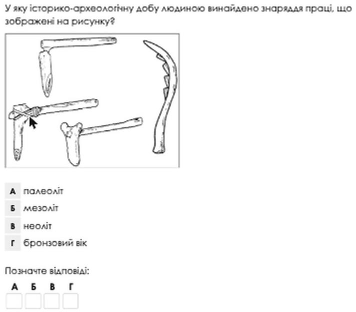
- А палеоліт ✗
- Б мезоліт ✗
- В неоліт ✓
- Г бронзовий вік ✗
Відповідь: В
🔍 Як упізнати: Мотика й серп — знаряддя землеробства. Землеробство з’явилося в неоліті («неолітична революція»).
2. Яке знаряддя пов’язане зі змінами в господарстві в неоліті?
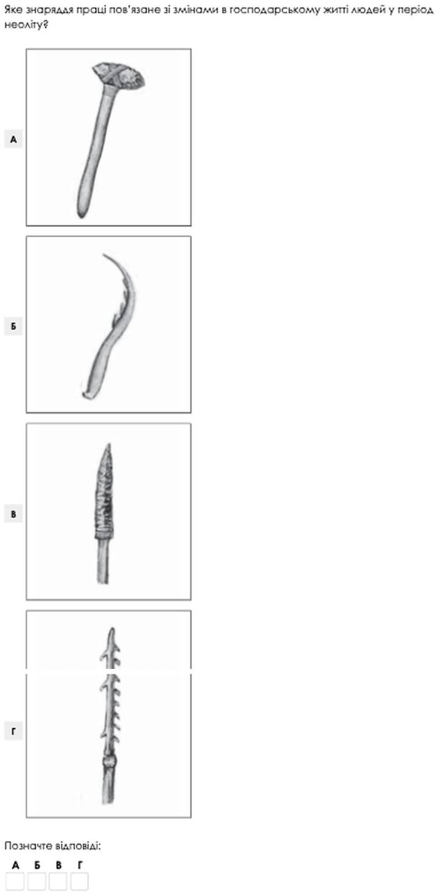
- А кам’яна сокира ✗
- Б серп — для збирання врожаю ✓
- В спис ✗
- Г гарпун — мезоліт ✗
Відповідь: Б
🔍 Як упізнати: Головна зміна неоліту — перехід до землеробства, а його символ — серп.
3. У яку добу вперше винайдено знаряддя на рисунку (гарпун, гачки, стріла)?
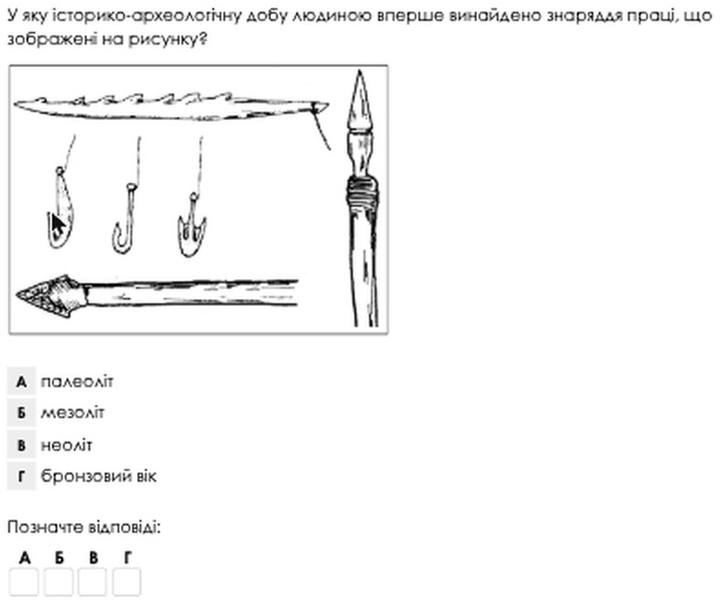
- А палеоліт ✗
- Б мезоліт ✓
- В неоліт ✗
- Г бронзовий вік ✗
Відповідь: Б
🔍 Як упізнати: Рибальські гачки, гарпун і лук зі стрілами — винаходи мезоліту.
4. Мисливські знаряддя (лук і стріли) винайдено в епоху
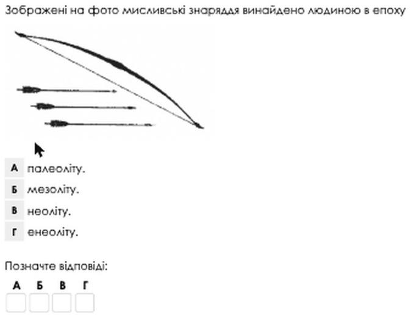
- А палеоліту ✗
- Б мезоліту ✓
- В неоліту ✗
- Г енеоліту ✗
Відповідь: Б
5. На якому етапі вперше з’являються наскельні малюнки, різьблені орнаменти, прикраси?
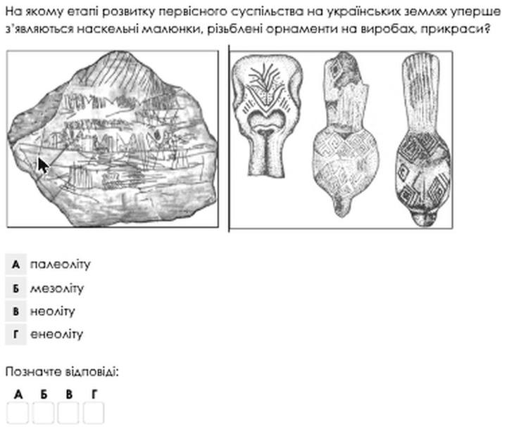
- А палеоліту ✓
- Б ✗
- В ✗
- Г ✗
Відповідь: А
🔍 Як упізнати: Праворуч — фігурки з Мізинської стоянки з меандровим орнаментом. Мистецтво зародилося в пізньому палеоліті.
6. Увідповідніть палеолітичні пам’ятки з місцем на карті
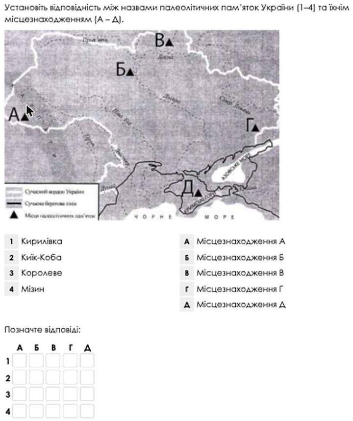
- 1 Кирилівка (Київ) → Б
- 2 Кіїк-Коба (Крим) → Д
- 3 Королеве (Закарпаття) → А
- 4 Мізин (Чернігівщина, на Десні) → В
- Г (схід) — зайве
Відповідь: 1-Б, 2-Д, 3-А, 4-В
🔍 Як упізнати: Запам’ятай «прив’язки»: Королеве — крайній захід (Закарпаття), Кіїк-Коба — Крим, Кирилівка — Київ на Дніпрі, Мізин — найпівнічніша точка на Десні.
7. Якою цифрою позначено Мізинську стоянку? (два однакові завдання)
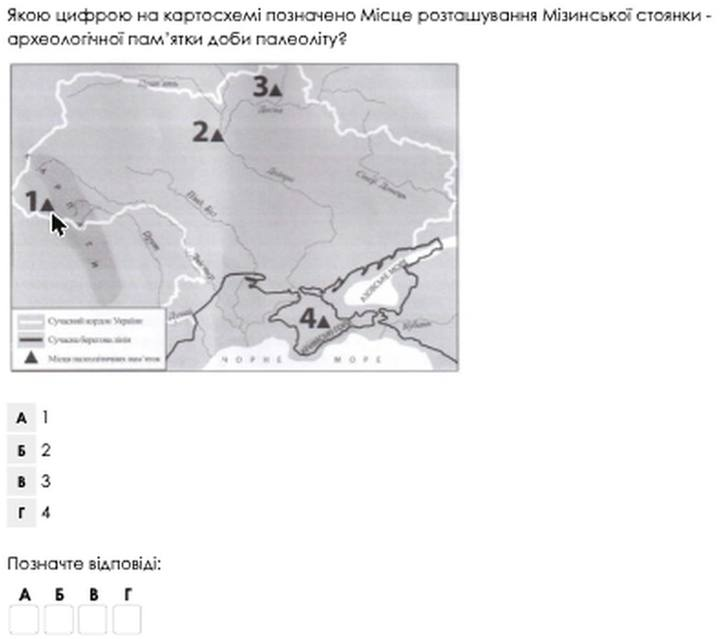
- А 1 — Королеве ✗
- Б 2 — Кирилівка ✗
- В 3 ✓
- Г 4 — Кіїк-Коба ✗
Відповідь: В
🔍 Як упізнати: Мізин — на Десні, біля північного кордону.
8. Де знайдено браслет із меандровим орнаментом? (два однакові завдання)
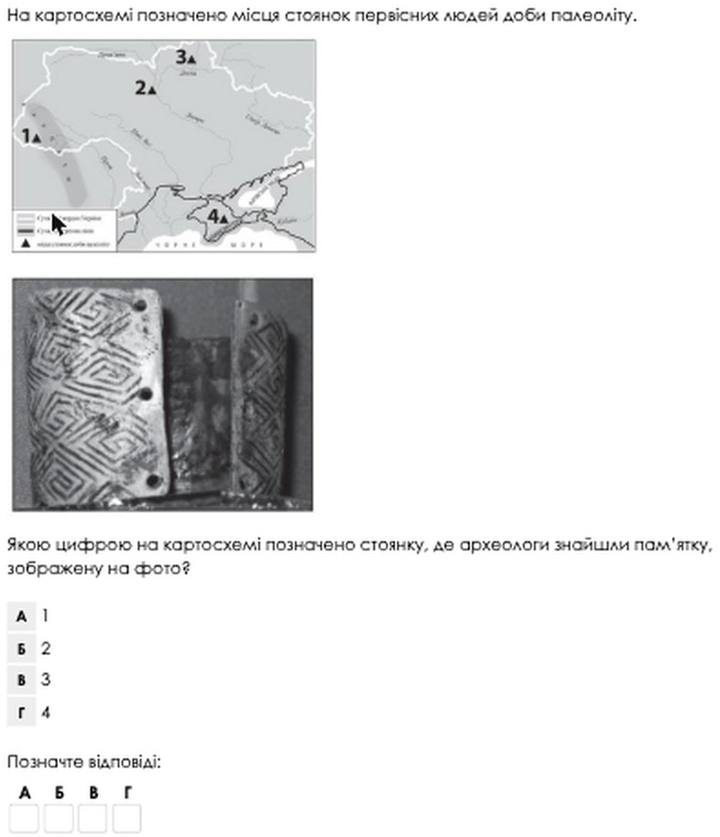
- А 1 ✗
- Б 2 ✗
- В 3 — Мізин ✓
- Г 4 ✗
Відповідь: В
🔍 Як упізнати: Браслет із мамонтової кістки з візерунком-меандром — найвідоміша знахідка Мізинської стоянки.
9. На якій монеті пам’ятка, знайдена на Чернігівщині?
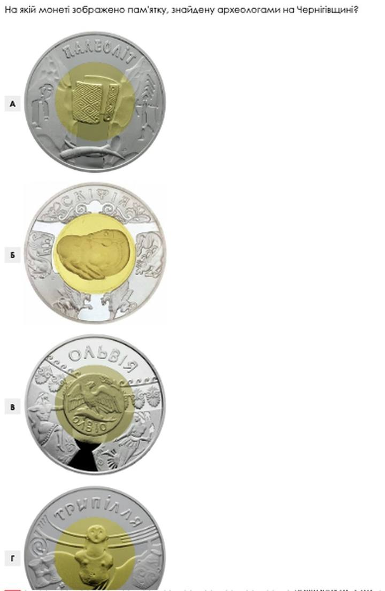
- А «Палеоліт» — мізинський браслет ✓
- Б Скіфія ✗
- В Ольвія ✗
- Г Трипілля ✗
Відповідь: А
🔍 Як упізнати: Мізин — Чернігівщина.
10. Розташуйте пам’ятки за часом створення
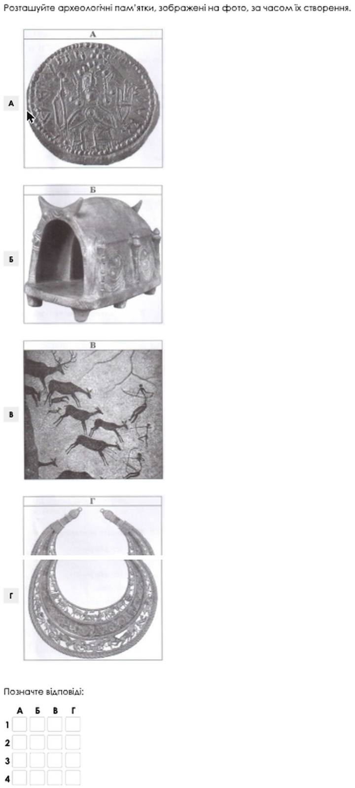
- 1) В наскельні малюнки мисливців — кам’яна доба
- 2) Б глиняна модель житла — трипільці
- 3) Г золота пектораль — скіфи, IV ст. до н. е.
- 4) А срібник Володимира — Русь, X ст.
Відповідь: В, Б, Г, А
🧩 Кам’яна доба: палеоліт, мезоліт, неоліт, енеоліт, без картинок (17)
1. Залюднення території України розпочалося в період
- А палеоліту ✓
- Б мезоліту
- В неоліту
- Г енеоліту
Відповідь: А
2. Первісна людина з’явилася на території України близько
- А 2 млн років тому
- Б 1 млн років тому ✓
- В 500 тис.
- Г 250 тис.
Відповідь: Б
3. Харарі: «Приготування їжі вбило мікроби…» — яке досягнення?
- А рибальство
- Б мідь
- В кераміка
- Г використання вогню ✓
Відповідь: Г
4. Орнаментована прикраса палеоліту з Чернігівщини свідчить про
- А осілість
- Б зародження мистецтва та естетичних уявлень ✓
- В штучні матеріали
- Г кочівників
Відповідь: Б
5. Основа привласнюючого господарства
- А землеробство, скотарство, рибальство
- Б мисливство, збиральництво, рибальство ✓
- В збиральництво, тваринництво
- Г землеробство, мисливство
Відповідь: Б
6. Спільне для палеоліту й мезоліту
- А поділ праці
- Б удосконалення привласнювальних форм господарювання ✓
- В землеробство й скотарство
- Г кочове господарство
Відповідь: Б
7. Яке заняття привласнювального господарства поширилося в мезоліті?
- А скотарство
- Б рибальство ✓
- В збиральництво
- Г землеробство
Відповідь: Б
8. Винайдення луку й стріл зумовлено
- А металами
- Б законами фізики
- В змінами природно-кліматичних умов ✓
- Г кроманьйонцем
Відповідь: В
Після танення льодовика зникли мамонти, і полювати довелося на дрібних швидких тварин.
9. Наслідок винайдення лука й стріл
- А осілість
- Б занепад рибальства
- В зростання продуктивності праці мисливців ✓
- Г відтворюючі форми
Відповідь: В
10. Перехід від привласнюючого до відтворюючого господарства — риса
- А палеоліту
- Б мезоліту
- В неоліту ✓
- Г енеоліту
Відповідь: В
Повторюється ще раз (те саме питання).
11. Поява першого керамічного посуду — риса епохи
- А палеоліту
- Б мезоліту
- В енеоліту
- Г неоліту ✓
Відповідь: Г
12. Ознака неолітичної революції
- А керамічний посуд ✓
- Б торгівля між племенами
- В ремесло окремо
- Г залізо
Відповідь: А
13. В епоху неолітичної революції
- А парна сім’я
- Б людина перейшла від привласнювання до активного перетворення довкілля ✓
- В ремесло відокремлене
- Г скорочення запасів
Відповідь: Б
14. Мідь, утвердження відтворюючих форм — риси епохи
- А палеоліту
- Б мезоліту
- В неоліту
- Г енеоліту ✓
Відповідь: Г
15. Увідповідніть період і зміни (у ЗНО тричі)
- 1 палеоліт → В перші знаряддя, мистецтво, релігія
- 2 мезоліт → А пліт і човен, приручення перших тварин
- 3 неоліт → Б осілість, більшість свійських тварин
- 4 бронзовий вік → Г штучний матеріал замість каменю, приручення коня
- Д плуг, кочівники — залізний вік, зайве
Відповідь: 1-В, 2-А, 3-Б, 4-Г
16. Увідповідніть досягнення з періодом
- 1 відокремлення скотарства від землеробства → Г енеоліт
- 2 мистецтво й релігія → А палеоліт
- 3 відтворююче господарство → В неоліт
- 4 мікроліти → Б мезоліт
- Д ранній залізний вік — зайве
Відповідь: 1-Г, 2-А, 3-В, 4-Б
17. Увідповідніть період із досягненням
- 1 палеоліт → А перші знаряддя
- 2 мезоліт → Б рибальство
- 3 неоліт → Г кераміка
- 4 енеоліт → В обробка міді
- Д залізо — зайве
Відповідь: 1-А, 2-Б, 3-Г, 4-В
🧩 Трипільська культура, з картинками (8)
1. Реконструкція на рисунку відображає життя
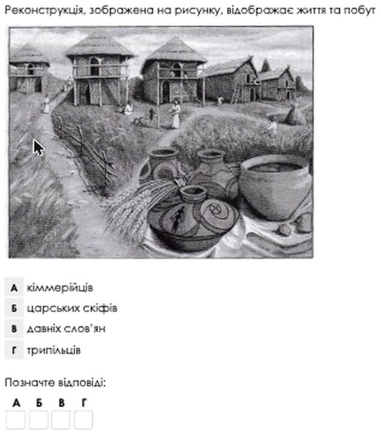
- А ✗
- Б ✗
- В ✗
- Г трипільців ✓
Відповідь: Г
🔍 Як упізнати: Двоповерхові глинобитні будинки й мальований посуд зі спіралями — прикмети Трипілля.
2. Територію розселення яких племен позначено на карті?
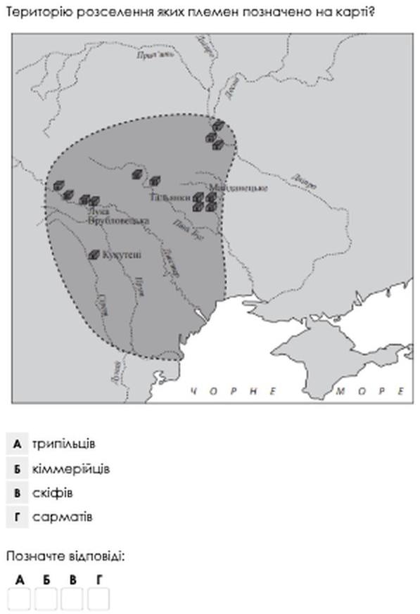
- А трипільців ✓
- Б ✗
- В ✗
- Г ✗
Відповідь: А
🔍 Як упізнати: Назви поселень Тальянки, Майданецьке, Кукутені — трипільські протоміста між Дніпром і Карпатами.
3. Яке житло характерне для племен із карти (Трипілля)?
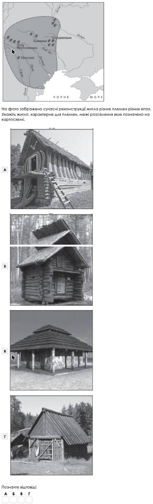
- А двоповерховий глинобитний будинок з розписом ✓
- Б зруб ✗
- В ✗
- Г ✗
Відповідь: А
4. На якому фото пам’ятка трипільської культури?
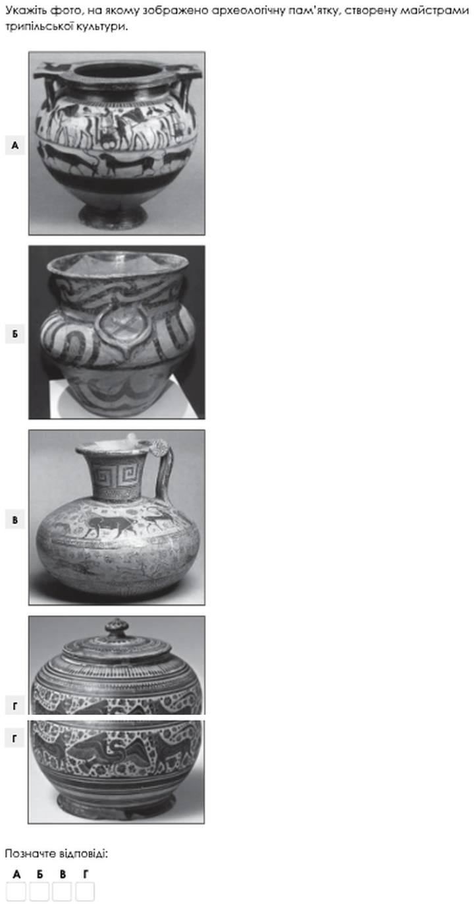
- А грецька ваза ✗
- Б горщик зі спіральним розписом без людських фігур ✓
- В грецький глечик ✗
- Г ✗
Відповідь: Б
🔍 Як упізнати: Трипільська кераміка — розпис спіралями й хвилями. Грецькі вази мають сцени з людьми й тваринами.
5. До якої культури належать пам’ятки?
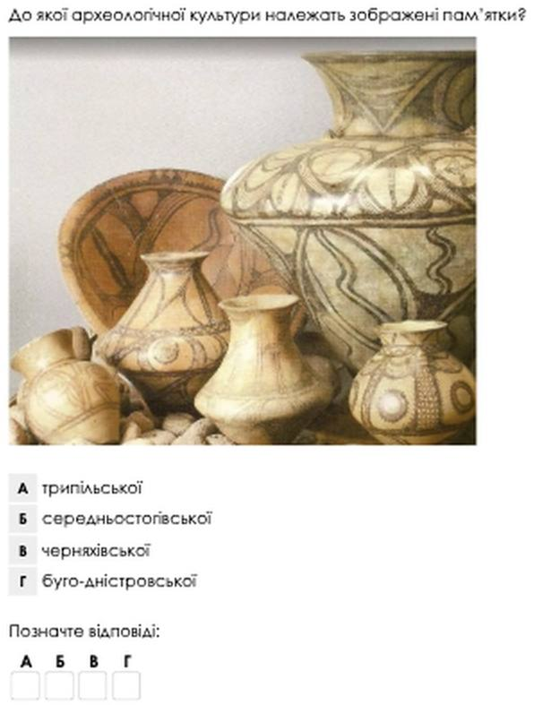
- А трипільської ✓
- Б ✗
- В ✗
- Г ✗
Відповідь: А
6. Жіноча статуетка — образ богині родючості — була притаманна
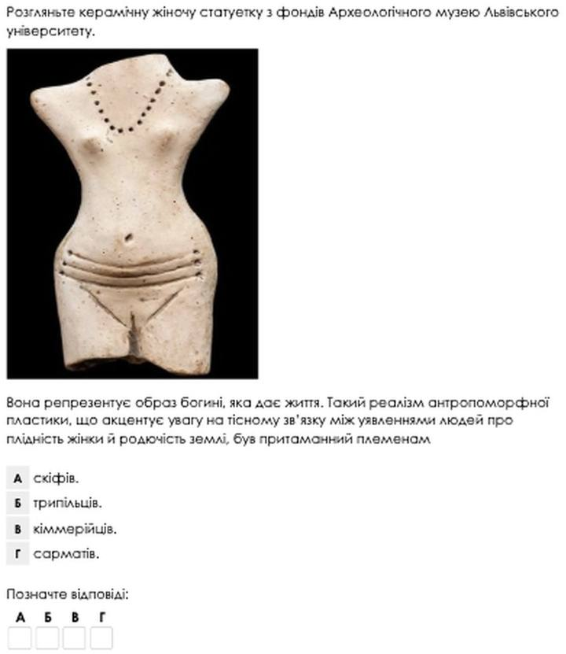
- А ✗
- Б трипільцям ✓
- В ✗
- Г ✗
Відповідь: Б
🔍 Як упізнати: Землероби-трипільці пов’язували плідність жінки з родючістю землі.
7. Назва першої серії проєкту «Знай наше» (кадр із трипільськими будинками й орнаментом)
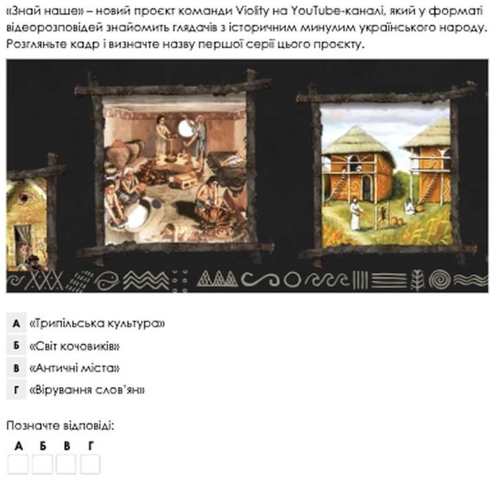
- А «Трипільська культура» ✓
- Б ✗
- В ✗
- Г ✗
Відповідь: А
8. Картосхема дає змогу визначити (оберіть три)
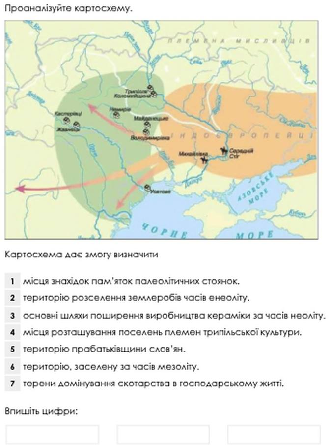
- 1 палеоліт ✗
- 2 територію землеробів енеоліту (зелена зона) ✓
- 3 ✗
- 4 поселення трипільців ✓
- 5 ✗
- 6 ✗
- 7 терени скотарства (помаранчева зона індоєвропейців, знак коня) ✓
Відповідь: 2, 4, 7
🧩 Трипільська культура, без картинок (3)
1. Трипільська культура — культура епохи
- А палеоліту
- Б мезоліту
- В неоліту
- Г енеоліту ✓
Відповідь: Г
2. Для трипільців було характерне
- А залізо
- Б трипільна система
- В орнаментований керамічний посуд ✓
- Г катакомбні поховання
Відповідь: В
Пастка: «трипільна система землеробства» з Трипіллям ніяк не пов’язана, це середньовіччя.
3. Риси Трипільської культури (оберіть три)
- 1 орнаментація посуду ✓
- 2 грабіжницькі набіги ✗
- 3 кочове скотарство ✗
- 4 осілий спосіб життя ✓
- 5 бронза ✗
- 6 укріплені міста ✗
- 7 орне землеробство ✓
Відповідь: 1, 4, 7
🧩 Античні міста Північного Причорномор’я, з картинками (12)
1. Увідповідніть місто-колонію з місцем на карті
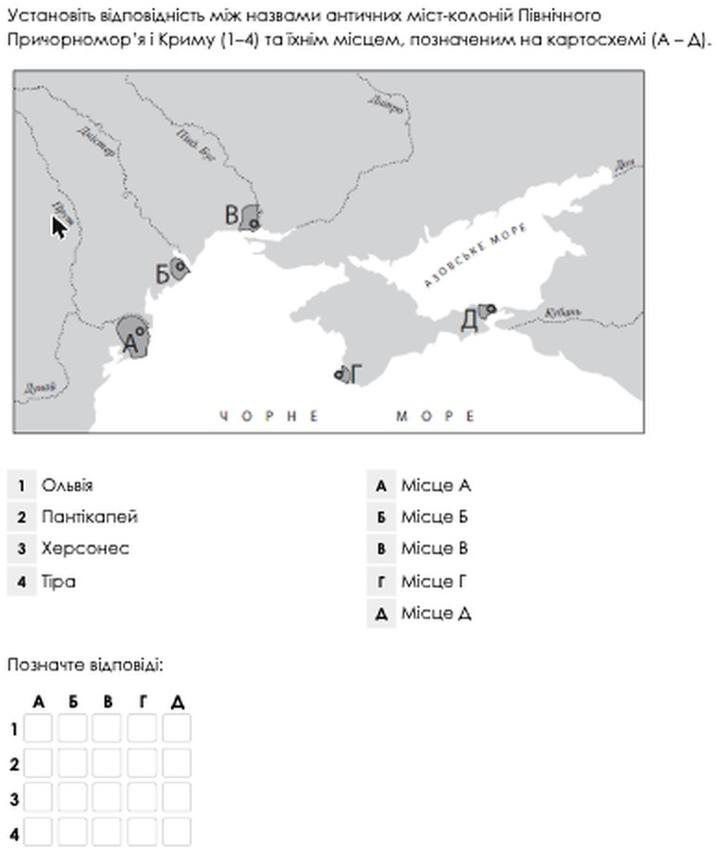
- 1 Ольвія (Бузький лиман) → В
- 2 Пантікапей (Керч) → Д
- 3 Херсонес (Севастополь) → Г
- 4 Тіра (лиман Дністра) → Б
- А — зайве
Відповідь: 1-В, 2-Д, 3-Г, 4-Б
🔍 Як упізнати: Ольвія — на Бузькому лимані біля Миколаєва, Тіра — на Дністрі (Білгород-Дністровський), Херсонес — південний захід Криму, Пантікапей — Керченська протока.
2. Де розташовано пам’ятку на фото (руїни з колонами біля моря)? (два однакові завдання)
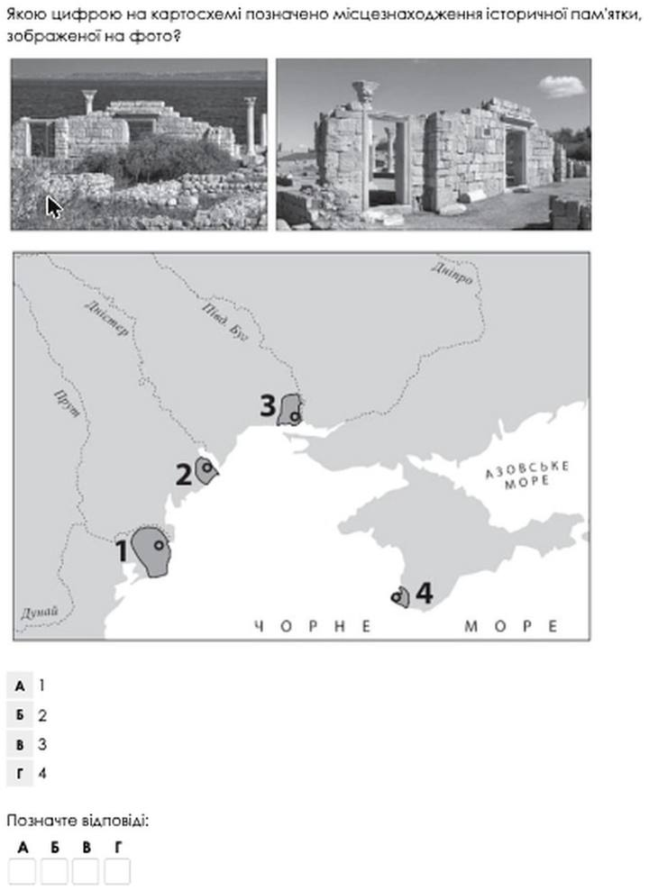
- А 1 ✗
- Б 2 ✗
- В 3 — Ольвія ✗
- Г 4 — Херсонес ✓
Відповідь: Г
🔍 Як упізнати: Руїни базиліки з колонами на березі — символ Херсонеса.
3. Якою буквою позначено місто на монеті «Херсонес Таврійський»? (два однакові завдання)
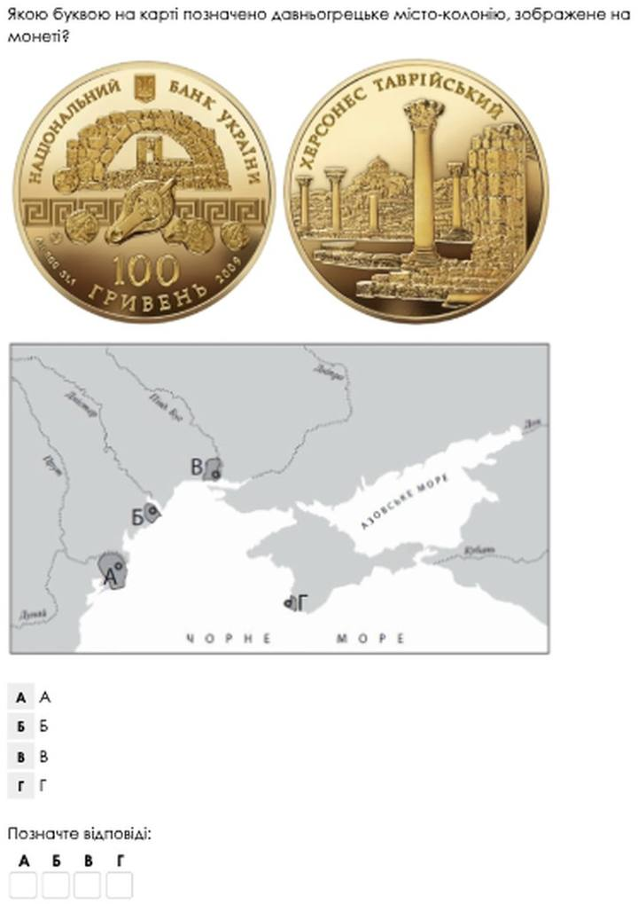
- А ✗
- Б ✗
- В ✗
- Г ✓
Відповідь: Г
4. Руїни якого міста на 1 гривні 1992 р.?
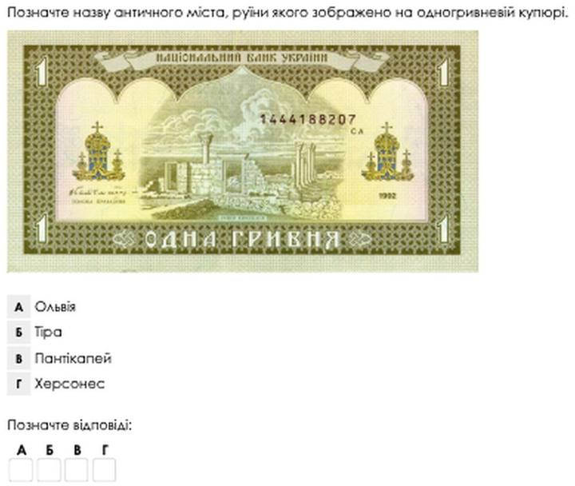
- А ✗
- Б ✗
- В ✗
- Г Херсонес ✓
Відповідь: Г
5. Де розташоване місто з монети «Білгород-Дністровський 2500 років»?
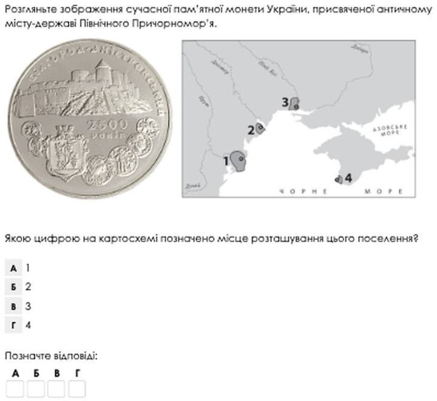
- А 1 ✗
- Б 2 — Тіра ✓
- В 3 — Ольвія ✗
- Г 4 — Херсонес ✗
Відповідь: Б
🔍 Як упізнати: Білгород-Дністровський стоїть на місці античної Тіри.
6. Столиця Боспорського царства на карті
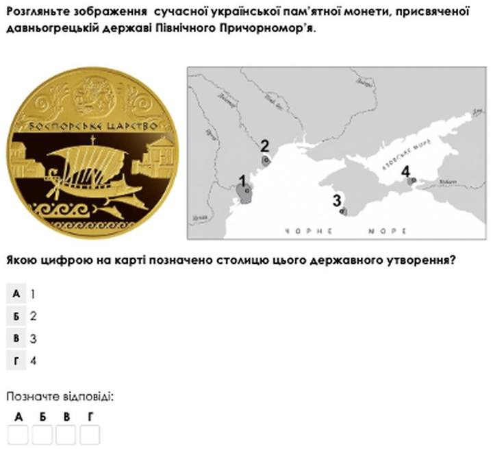
- А ✗
- Б ✗
- В 3 — Херсонес ✗
- Г 4 — Пантікапей ✓
Відповідь: Г
7. Штрихуванням позначено межі (два однакові завдання)
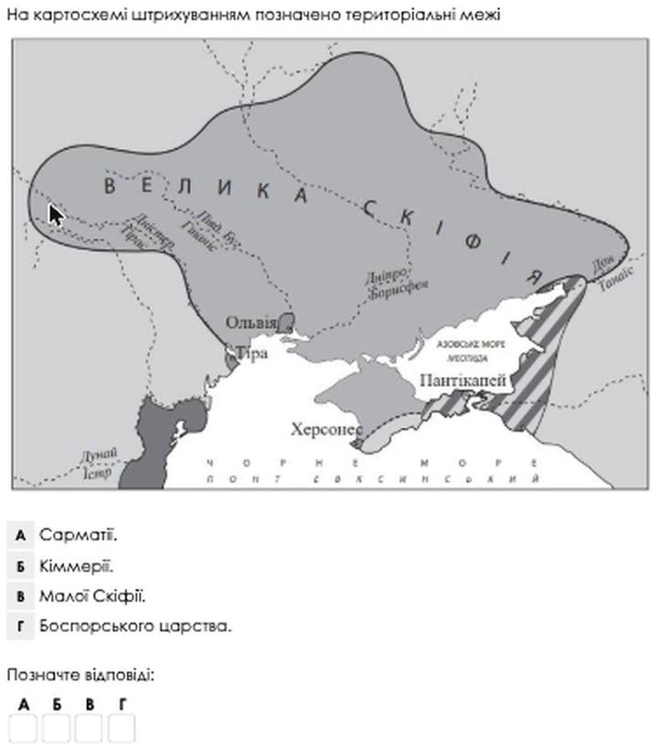
- А ✗
- Б ✗
- В ✗
- Г Боспорського царства ✓
Відповідь: Г
🔍 Як упізнати: Заштрихована смуга по обидва боки Керченської протоки (Пантікапей і Таманський півострів).
8. На рисунку реконструкція
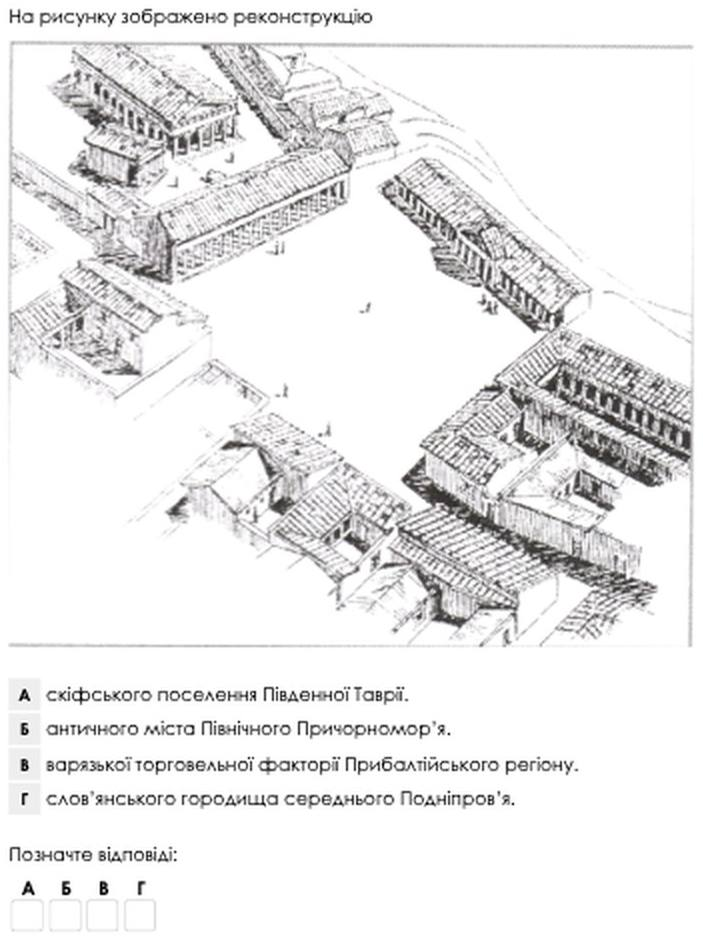
- А ✗
- Б античного міста ✓
- В ✗
- Г ✗
Відповідь: Б
🔍 Як упізнати: Площа-агора, оточена будівлями з колонадами, — типове грецьке місто.
9. Монета з колосом ілюструє господарське життя
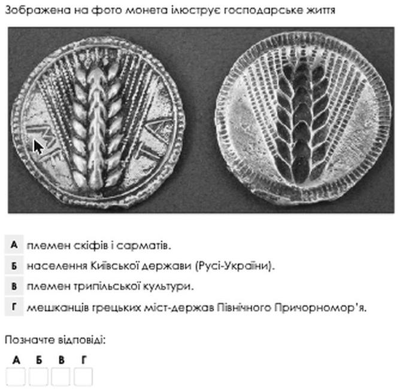
- А ✗
- Б ✗
- В ✗
- Г грецьких міст-держав Причорномор’я ✓
Відповідь: Г
🔍 Як упізнати: Грецькі колонії карбували власні монети, а колос показує, що вони торгували хлібом.
10. Музейна експозиція (грецькі вази, прикраси) — про життя
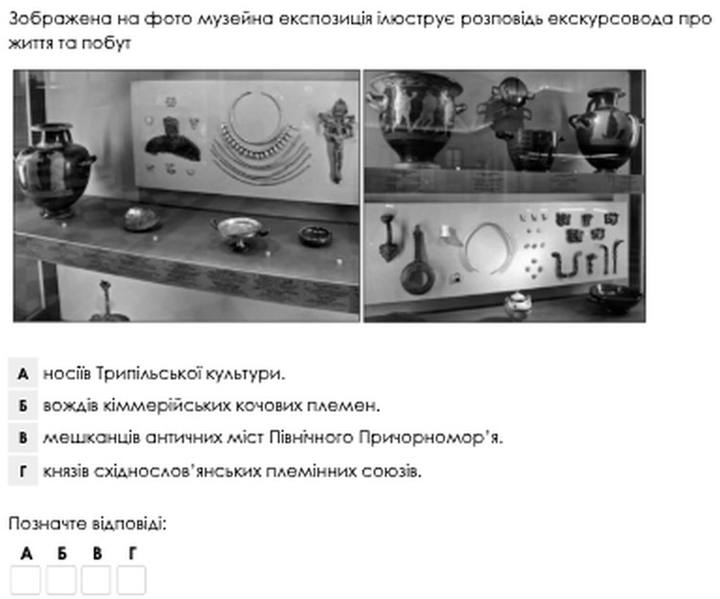
- А ✗
- Б ✗
- В мешканців античних міст ✓
- Г ✗
Відповідь: В
11. До якої серії належать монети (Херсонес, Боспор, Ольвія)?
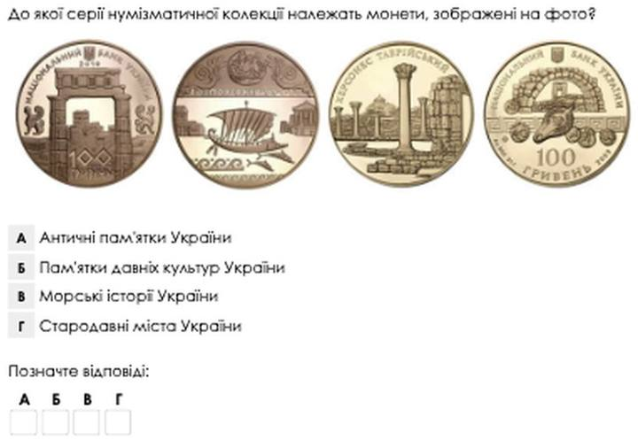
- А «Античні пам’ятки України» ✓
- Б ✗
- В ✗
- Г ✗
Відповідь: А
12. Що об’єднує скіфського золотого оленя й грецьку амфору?
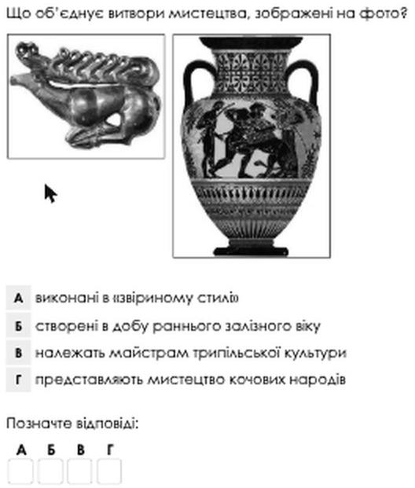
- А «звіриний стиль» — тільки олень ✗
- Б створені в добу раннього залізного віку ✓
- В ✗
- Г тільки олень кочовий ✗
Відповідь: Б
🔍 Як упізнати: Скіфи й греки-колоністи — сучасники, VII–III ст. до н. е., ранній залізний вік.
🧩 Античні міста Північного Причорномор’я, без картинок (4)
1. Найголовніші причини грецької колонізації
- А суспільно-політичні
- Б культурно-ідеологічні
- В соціально-економічні ✓
- Г воєнно-стратегічні
Відповідь: В
Повторюється ще раз з іншим порядком.
2. Грецька колонізація спричинена
- А пошуком союзників
- Б нестачею рабів
- В занепадом ремесла
- Г перенаселенням і нестачею землі в метрополії ✓
Відповідь: Г
3. Особливість грецьких міст-держав Причорномор’я
- А незалежність від метрополій ✓
- Б федерація навколо Ольвії
- В єдина монета
- Г залежність від місцевих племен
Відповідь: А
4. Місто-колонія на Бузькому лимані біля Миколаєва
- А Тіра
- Б Херсонес
- В Ольвія ✓
- Г Фанагорія
Відповідь: В
🧩 Кіммерійці, скіфи, сармати, з картинками (10)
1. Штрихуванням позначено територію (два однакові завдання)
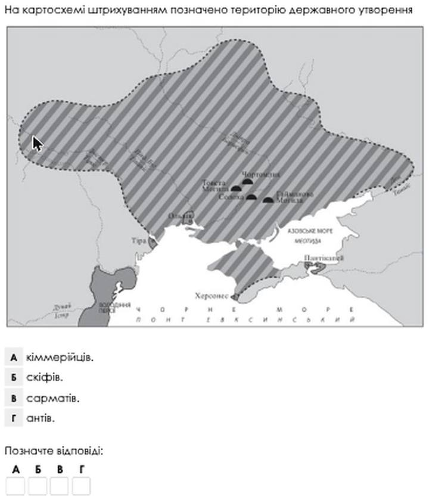
- А ✗
- Б скіфів — Велика Скіфія ✓
- В ✗
- Г ✗
Відповідь: Б
🔍 Як упізнати: Значки курганів Товста Могила, Солоха, Чортомлик, Гайманова Могила — царські скіфські кургани.
2. Картосхема дає змогу (оберіть три; два однакові завдання)
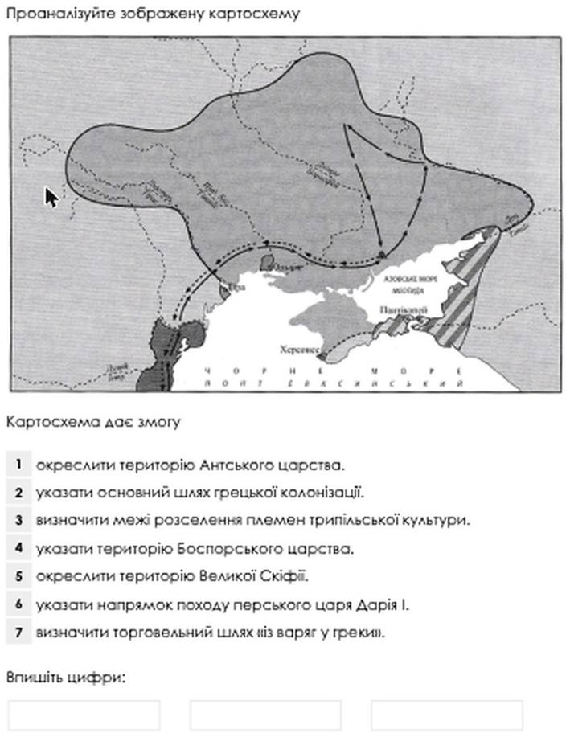
- 1 ✗
- 2 ✗
- 3 ✗
- 4 територія Боспорського царства (штриховка біля Пантікапея) ✓
- 5 Велика Скіфія ✓
- 6 похід Дарія I (стрілки з Подунав’я в глиб Скіфії й назад) ✓
- 7 ✗
Відповідь: 4, 5, 6
🔍 Як упізнати: Похід перського царя Дарія I на скіфів (514 р. до н. е.) — стрілки з володінь Персії біля Дунаю.
3. Стрілками вказано напрямки переселення
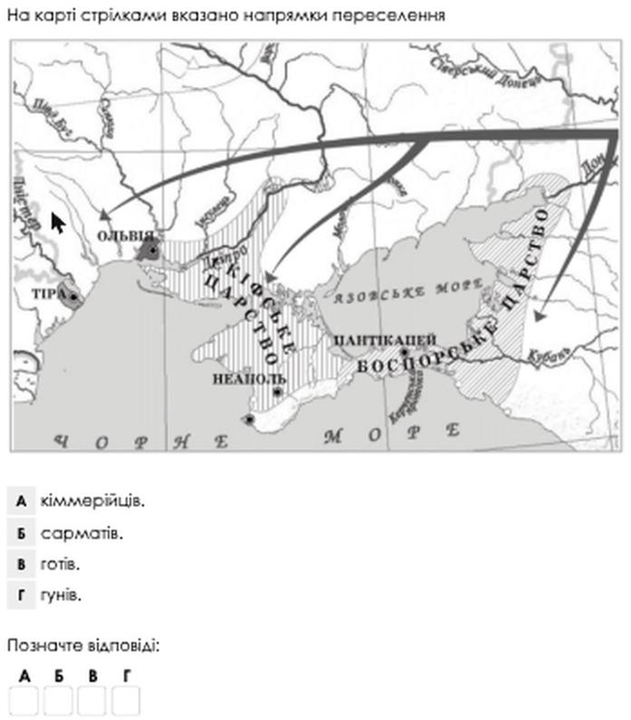
- А ✗
- Б сарматів ✓
- В ✗
- Г ✗
Відповідь: Б
🔍 Як упізнати: Стрілки йдуть зі сходу (з-за Дону) на Скіфію, а скіфи відступають у Крим (Неаполь Скіфський). Це сармати, III ст. до н. е.
4. Яку монету викарбовано на честь скіфського царя?
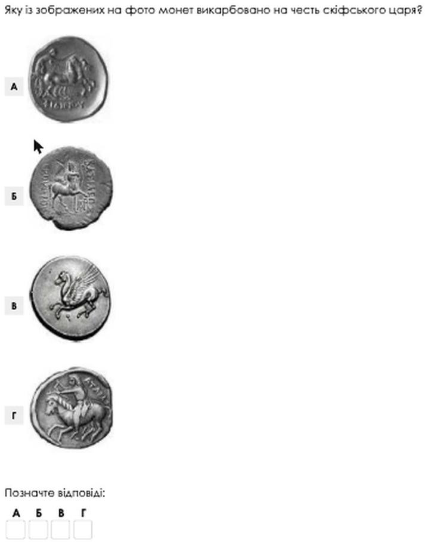
- А ✗
- Б ✗
- В ✗
- Г вершник-лучник із написом «АТАІ…» — цар Атей ✓
Відповідь: Г
5. Гребінь із кургану Солоха створено на замовлення (і на ньому фігурки воїнів — двоє завдань)
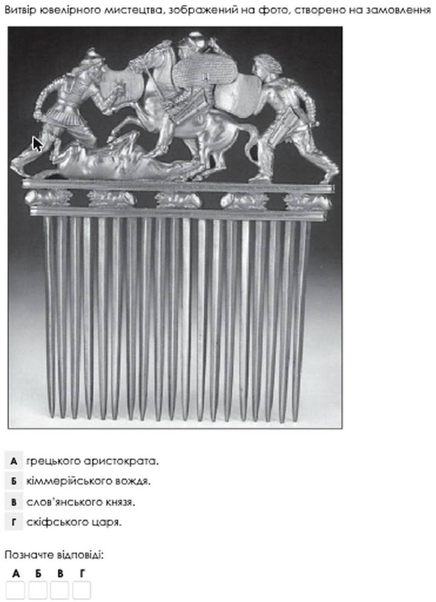
- А грецького аристократа ✗ — греки його лише виготовили
- Б кіммерійського вождя ✗
- В слов’янського князя ✗
- Г скіфського царя ✓
- Друге питання: воїни на гребені — це скіфи ✓
Відповідь: Г (скіфського царя); у другому питанні — скіфи
🔍 Як упізнати: Золотий гребінь із Солохи зробили грецькі майстри для скіфської знаті. На ньому бій скіфських воїнів.
6. До якої експозиції належать пам’ятки (золото зі «звіриним стилем»)? (два однакові завдання)
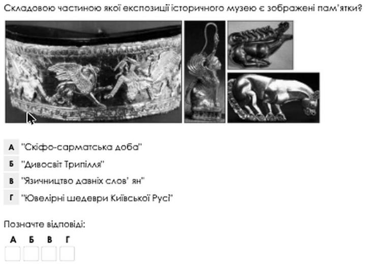
- А «Скіфо-сарматська доба» ✓
- Б ✗
- В ✗
- Г ✗
Відповідь: А
🔍 Як упізнати: Олень, кінь, грифони — «звіриний стиль» скіфського мистецтва.
7. На монеті — пектораль. Де її знайдено? (два однакові завдання)
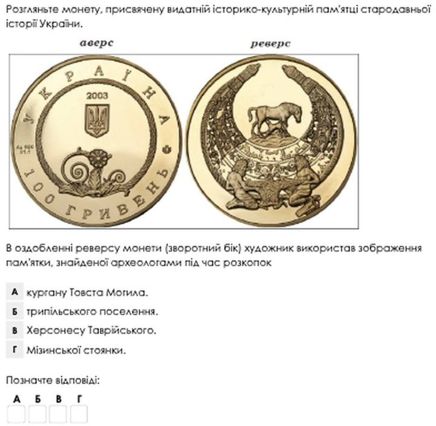
- А курган Товста Могила ✓
- Б ✗
- В ✗
- Г ✗
Відповідь: А
🔍 Як упізнати: Золоту пектораль знайшов Борис Мозолевський 1971 р. у кургані Товста Могила.
8. Мозолевський із пектораллю — у якому кургані її знайдено?
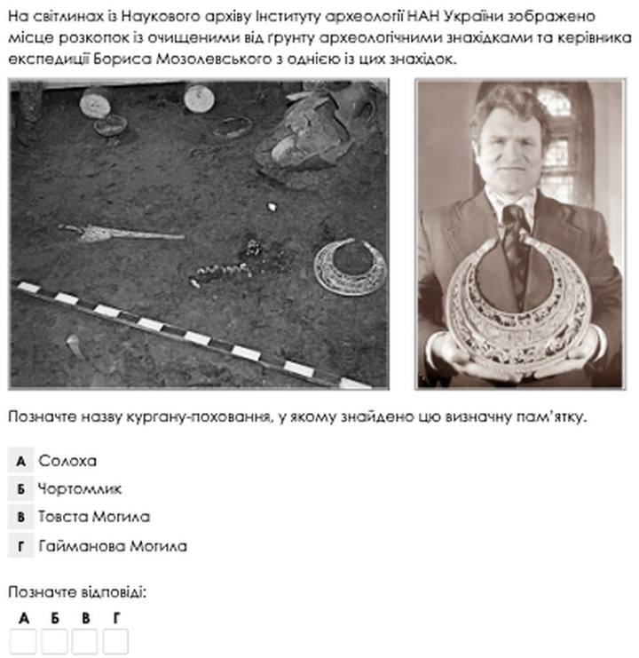
- А ✗
- Б ✗
- В Товста Могила ✓
- Г ✗
Відповідь: В
9. Ювелірні вироби прикрашали одяг
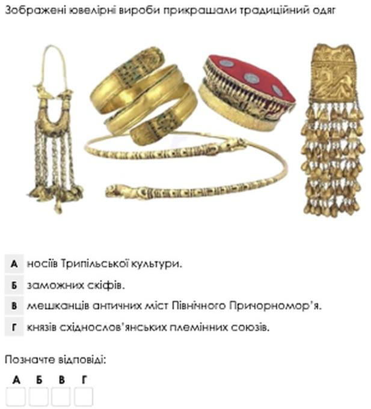
- А ✗
- Б заможних скіфів ✓
- В ✗
- Г ✗
Відповідь: Б
10. До якої експозиції належать артефакти (діадема з оленями, підвіски)?
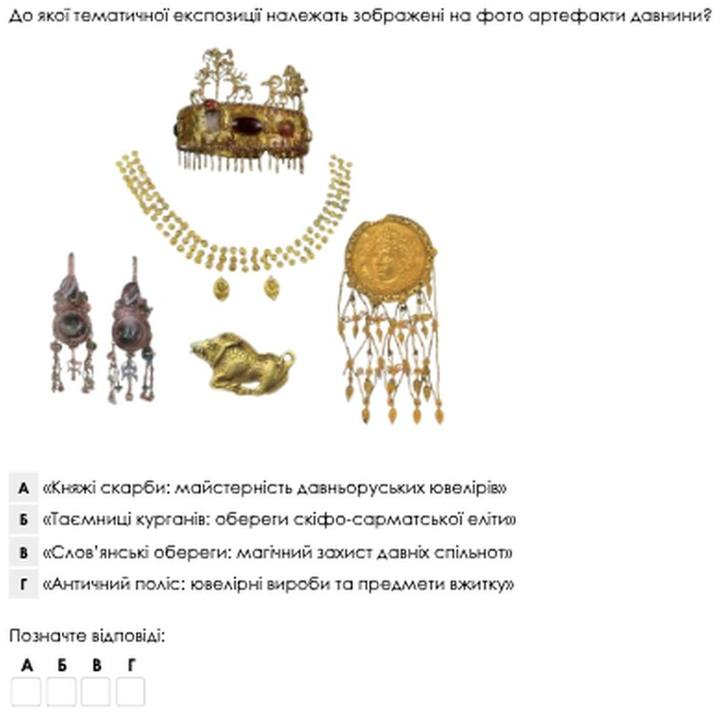
- А ✗
- Б «Таємниці курганів: обереги скіфо-сарматської еліти» ✓
- В ✗
- Г ✗
Відповідь: Б
🔍 Як упізнати: Золота діадема з оленями й деревцями — сарматська (курган Хохлач).
🧩 Кіммерійці, скіфи, сармати, без картинок (8)
1. Найдавніший за писемними джерелами народ Причорномор’я
- А гуни
- Б скіфи
- В сармати
- Г кіммерійці ✓
Відповідь: Г
2. Перші залізні знаряддя й зброю почали виготовляти
- А скіфи
- Б сармати
- В трипільці
- Г кіммерійці ✓
Відповідь: Г
У ЗНО трапляється ще двічі.
3. Кіммерійські племена
- А здійснювали грабіжницькі набіги ✓
- Б факторії
- В вали
- Г землеробство
Відповідь: А
4. Послідовність панування кочовиків
- 1) В кіммерійці
- 2) А скіфи
- 3) Г сармати
- 4) Б гуни
Відповідь: В, А, Г, Б
5. Що стосується скіфів? (оберіть три)
- 1 торгівля з грецькими колоніями ✓
- 2 монотеїзм ✗
- 3 походи на Рим — сармати ✗
- 4 витіснення сарматами в Крим ✓
- 5 важка піхота ✗
- 6 колесо ✗
- 7 «звіриний стиль» ✓
Відповідь: 1, 4, 7
6. Що стосується сарматів? (оберіть три)
- 1 напади на придунайські провінції Риму ✓
- 2 рабовласницька держава ✗
- 3 осілість ✗
- 4 важкоозброєна кіннота ✓
- 5 витіснення кіммерійців — скіфи ✗
- 6 християнство ✗
- 7 пережитки матріархату ✓
Відповідь: 1, 4, 7
У сарматів жінки воювали нарівні з чоловіками: це «пережитки матріархату».
7. Сармати витіснили скіфів: 1) у межиріччя Дону та Кубані; 2) у пониззя Дніпра та Крим
- А обидва
- Б тільки 1
- В тільки 2 ✓
- Г жоден
Відповідь: В
8. Увідповідніть народ і твердження (у ЗНО тричі)
- 1 трипільці → А перші протоміста
- 2 скіфи → Д війна проти Дарія I
- 3 кіммерійці → Б перші залізні знаряддя
- 4 сармати → Г набіги на Рим
- В шнурова кераміка — зайве
Відповідь: 1-А, 2-Д, 3-Б, 4-Г
🧩 Давні слов’яни, з картинками (5)
1. Історичний процес на карті тривав
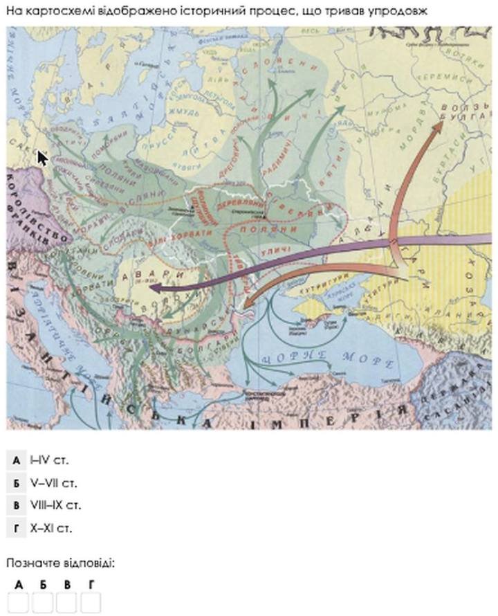
- А ✗
- Б V–VII ст. ✓
- В ✗
- Г ✗
Відповідь: Б
🔍 Як упізнати: Зелені стрілки розходяться з центру на Балкани, на північ і схід — Велике розселення слов’ян.
2. На картосхемі відображено
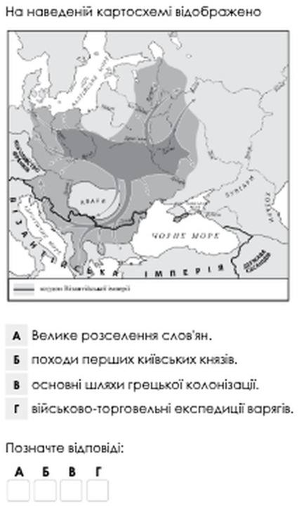
- А Велике розселення слов’ян ✓
- Б ✗
- В ✗
- Г ✗
Відповідь: А
3. Пам’ятки (капище, Збруцький ідол) свідчать про поширення в слов’ян
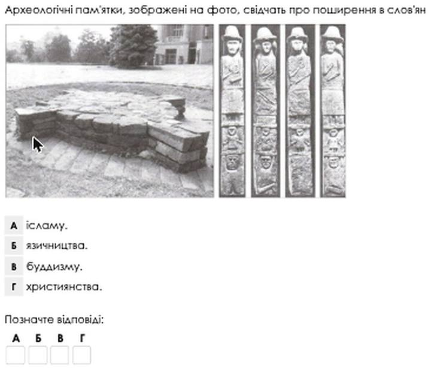
- А ✗
- Б язичництва ✓
- В ✗
- Г ✗
Відповідь: Б
🔍 Як упізнати: Збруцький ідол — чотиригранний стовп із фігурами, язичницьке божество.
4. Предмет язичницького культу східних слов’ян
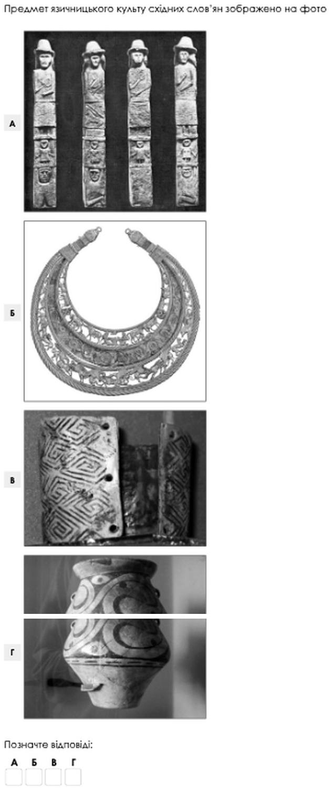
- А Збруцький ідол ✓
- Б пектораль ✗
- В мізинський браслет ✗
- Г трипільська кераміка ✗
Відповідь: А
5. Доберіть до пам’ятки експозицію (два однакові завдання)
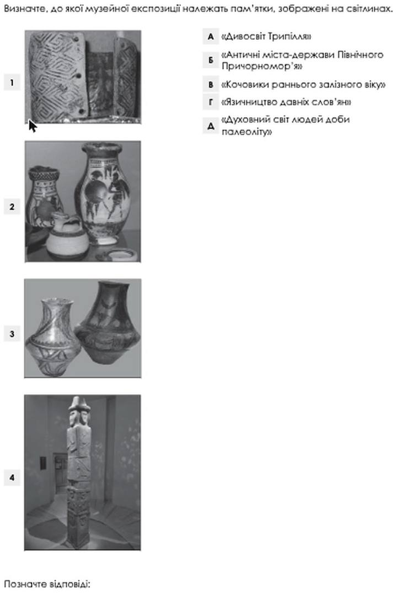
- 1 мізинський браслет → Д палеоліт
- 2 грецькі вази → Б античні міста
- 3 трипільська кераміка → А «Дивосвіт Трипілля»
- 4 Збруцький ідол → Г язичництво слов’ян
- В кочовики — зайве
Відповідь: 1-Д, 2-Б, 3-А, 4-Г
🧩 Давні слов’яни, без картинок (6)
1. Найдавніша назва слов’янських племен у джерелах
- А венеди ✓
- Б анти
- В поляни
- Г руси
Відповідь: А
2. Назви слов’ян у візантійських і готських істориків (оберіть три)
- 1 венеди ✓
- 2 алани ✗
- 3 готи ✗
- 4 анти ✓
- 5 роксолани ✗
- 6 авари ✗
- 7 склавини ✓
Відповідь: 1, 4, 7
3. Велике розселення слов’ян тривало
- А I до н. е. – I н. е.
- Б I–II
- В III–IV
- Г V–VII ст. ✓
Відповідь: Г
4. Унаслідок Великого розселення слов’яни
- А оволоділи Балканами ✓
- Б позбулися сарматів
- В держава між Доном і Карпатами
- Г витіснили готів
Відповідь: А
5. Послідовність явищ
- 1) Б Велика грецька колонізація — VIII–VI ст. до н. е.
- 2) В розпад Великої Скіфії — III ст. до н. е.
- 3) Г Велике переселення народів — з IV ст.
- 4) А Велике розселення слов’ян — V–VII ст.
Відповідь: Б, В, Г, А
6. Послідовність процесів
- 1) Г трипільці
- 2) В грецька колонізація
- 3) А сармати
- 4) Б розселення слов’ян
Відповідь: Г, В, А, Б
1.3👑 Русь-Україна: об’єднання і розквіт
🔑 Терміни, які варто знати
- Уроки і погости — фіксований розмір данини та постійні місця її збору (реформа княгині Ольги).
- Полюддя — особистий об’їзд князем підвладних земель для збору данини.
- Тризуб — родовий знак Рюриковичів, майбутній герб України.
- Волхви, бояри — язичницьке духовенство і знать, що чинили опір реформам.
За «Повістю минулих літ» Нестора Літописця, після великого розселення слов’ян на українських землях утворилося сім племінних союзів, які частіше ворогували між собою, ніж співпрацювали. Плем’я полян (легенда про Кия, Щека, Хорива і сестру Либідь) заснувало Київ, що згодом стало центром нової держави. Про перших правителів Києва відомо мало — лише про князя Аскольда: успішний похід на Візантію 860 року, за однією з версій — християнство (рідкість на тлі язичницького оточення); саме територія під його владою почала фігурувати в джерелах під назвою «Русь» (від річки Рось на Київщині, або — за версією Нестора — від того, що місцеві називали «руссю» вікінгів-варягів, підкорювачів цих земель).
Спершу існували окреме Київське князівство (Аскольд, можливо з братом Діром) і Новгородська Русь (Олег — регент малолітнього Ігоря, сина померлого Рюрика; сама назва «Рюриковичі» з’явилася в джерелах значно пізніше, близько X століття). У 882 році Олег річковим шляхом «із варягів у греки» спустився до Києва, хитрістю виманив і вбив Аскольда й об’єднав Північну та Південну Русь — утворюється Русь-Україна з центром у Києві; імовірний мотив — контроль над торговим шляхом і мито з купців.
Олег здійснив два успішні походи на Візантію (907 і 911 роки): Русь домоглася визнання від Візантії та права безмитної торгівлі для руських купців. Менш відомий — похід на Каспійське море; є й легенда про кораблі на колесах, якими Олег обійшов загороджений шлях до Константинополя (іноді трапляється в завданнях НМТ як мініатюра). Помер Олег у 912 році (за легендою — від укусу змії).
«Русь-Україна» і «Київська Русь» — сучасні наукові терміни; самі мешканці держави X–XI століть так її не називали.
Владу отримав Ігор, син Рюрика, — перший справжній представник династії на престолі (на відміну від Олега-регента). Два походи на Константинополь: невдалий 941 року (візантійський флот спалив флот Ігоря «грецьким вогнем») і 944 року — цей завершився новою торговою угодою, гіршою за угоду Олега (руські купці тепер платили мито). Виснажена походами казна змусила Ігоря 945 року самому вирушити збирати данину (полюддя) з деревлян; повернувшись по додаткову частину з мінімальною охороною, він був ними вбитий.
Владу отримала вдова Ігоря Ольга — син Святослав був ще малий. Помстилася деревлянам (легенда про підпалених птахів; реалістичніша версія — жорстке придушення повстання), узявши в облогу їхню столицю Іскоростень. Головне досягнення у внутрішній політиці — податкова реформа: фіксований розмір данини (уроки) і постійні місця її збору (погости), куди данину звозили представники князя, а не сам правитель особисто, як робив Ігор. У зовнішній політиці здійснила дипломатичний візит до Константинополя, де, за однією з версій, охрестилася; намагалася запровадити християнство і через контакти зі Священною Римською імперією, але зустріла опір язичницьких бояр. Передала владу дорослому Святославу, хоча фактично керувала державою, поки той був у походах.
Святослав — найвойовничіший князь, більшу частину правління провів у походах. Перший похід — на схід, проти Волзької Булгарії та Хозарського каганату (обидві держави знищено, приєднано плем’я в’ятичів); негативний наслідок — зі зникненням каганату зникла й природна перешкода для кочовиків, тож на Русь почали активно нападати печеніги. Другий похід — на південь, проти Болгарського царства; Святослав переміг і вирішив перенести столицю до Переяславця, чим стривожив Візантію. Візантія, ймовірно, підбурила печенігів напасти на Київ; після відбиття печенігів Святослав здійснив другий похід на Болгарію, який переріс у пряме протистояння з Візантією і завершився невдало — виснажене військо уклало мир і рушило додому. Повертаючись, Святослав загинув у засідці печенігів біля Хортиці.
Іду на ви. — Не посоромимо землі руської. Мертві бо сорому не знають.
Після смерті Святослава вісім років (972–980) точилася братовбивча боротьба синів за владу — переміг Володимир, спираючись на найманих варягів. Його правління відкриває розквіт Русі: у зовнішній політиці розширив державу на захід, приєднавши Червенські міста (цінні поклади солі); у внутрішній — адміністративна реформа, що ліквідувала племінний устрій і замінила його князівствами з центрами в містах (Київ, Чернігів, новозаснований Володимир на Волині), де правили його сини.
Релігійна реформа: спершу спробував модернізувати язичництво (оголосив Перуна головним богом), але це не спрацювало, тож зрештою обрав хрещення. За легендою, домовився одружитися з візантійською принцесою Анною, але коли Візантія не виконала обіцянку — здійснив похід на Корсунь (Херсонес) у Криму; Анна погодилась лише за умови, що Володимир спершу прийме християнство. Охрестившись у Корсуні 988 року, повернувся до Києва й примусово охрестив киян у водах Дніпра. Наслідки хрещення: дипломатичні зв’язки (шлюбна дипломатія), поява писемності (кирилиця через учнів Кирила і Мефодія), перші кам’яні храми (Десятинна церква). Фінансова реформа запровадила власні монети (срібники, златники) із зображенням тризуба — родового знаку Рюриковичів; військова реформа замінила найманих варягів військом із місцевого населення. Помер 1015 року.
Після смерті Володимира — нова боротьба за владу: фактичне двовладдя встановилося між Ярославом (Київ) і братом Мстиславом (Чернігів); одноосібним правителем Ярослав став лише 1036 року, після смерті Мстислава. За Ярослава продовжено походи на захід, збудовано Софійський собор (зі школою й бібліотекою), створено перший письмовий збірник законів «Руська правда», зведено Золоті ворота — головний в’їзд до Києва. Активна шлюбна дипломатія принесла прізвисько «тесть Європи». З цим періодом пов’язані ченці Антоній і Феодосій, які оселилися в печерах під Києвом — фактичні засновники майбутньої Києво-Печерської лаври. У 1036 році Ярослав остаточно розгромив печенігів. Помер 1054 року.
🧩 Завдання ЗНО з картинками (1)
1. Яку із зображених пам’яток створено за часів Київської Русі?
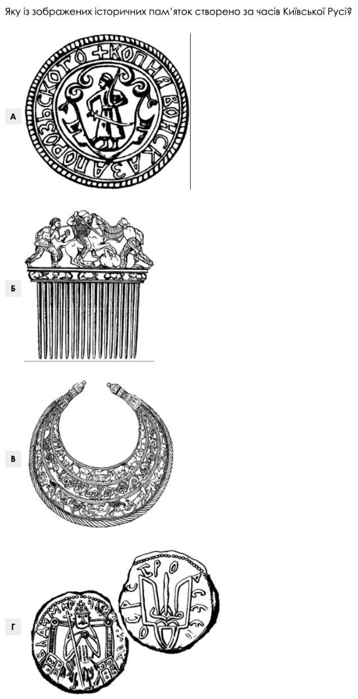
- А печатка Війська Запорозького (козаки, XVI–XVIII ст.) ✗
- Б золотий гребінь із кургану Солоха — скіфи ✗
- В золота пектораль із Товстої Могили — скіфи ✗
- Г монети князя Володимира: на одному боці князь, на другому тризуб ✓
Відповідь: Г
Підказка — тризуб і напис з ім’ям Володимира: перші власні монети Русі (златники й срібники).
🧩 Русь: виникнення Київської держави, з картинками (14)
1. Що позначено на карті лінією від Балтики через Дніпро до Константинополя?
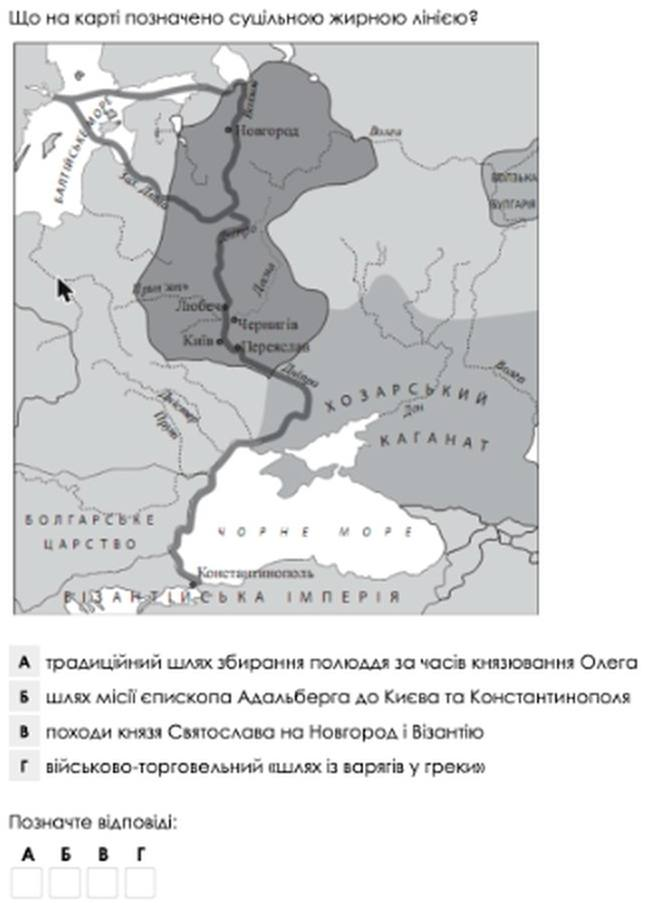
- А полюддя ✗
- Б ✗
- В ✗
- Г «шлях із варягів у греки» ✓
Відповідь: Г
🔍 Як упізнати: Лінія з’єднує Балтійське море (варяги) з Візантією (греки) вздовж Дніпра.
2. Кордони держави за князювання (у ЗНО тричі)
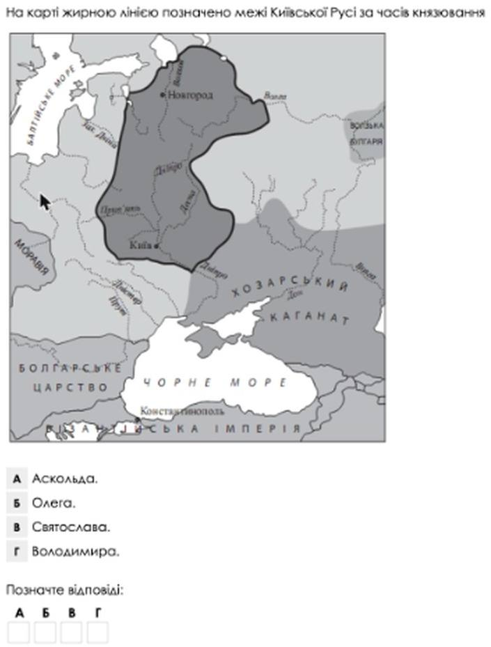
- А Аскольда — тільки Подніпров’я ✗
- Б Олега ✓
- В Святослава ✗
- Г Володимира ✗
Відповідь: Б
🔍 Як упізнати: Межа охоплює і Новгород, і Київ, а на південь від Києва ще Хозарський каганат. Північ і південь об’єднав Олег (882 р.).
3. Карта (Новгород і Київ в одній межі, південніше Хозарський каганат) — князювання
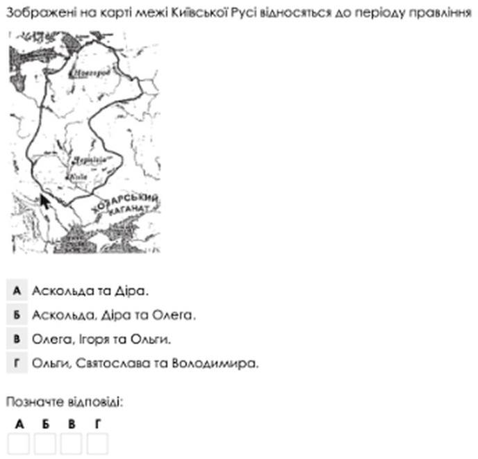
- А ✗
- Б ✗
- В Олега, Ігоря та Ольги ✓
- Г ✗
Відповідь: В
🔍 Як упізнати: Та сама межа, що за Олега, зберігалася при Ігорі та Ользі. Святослав і Володимир суттєво її розширили.
4. Що позначено стрілками Київ — Іскоростень — Любеч — Смоленськ — Чернігів — Київ? (два однакові завдання)
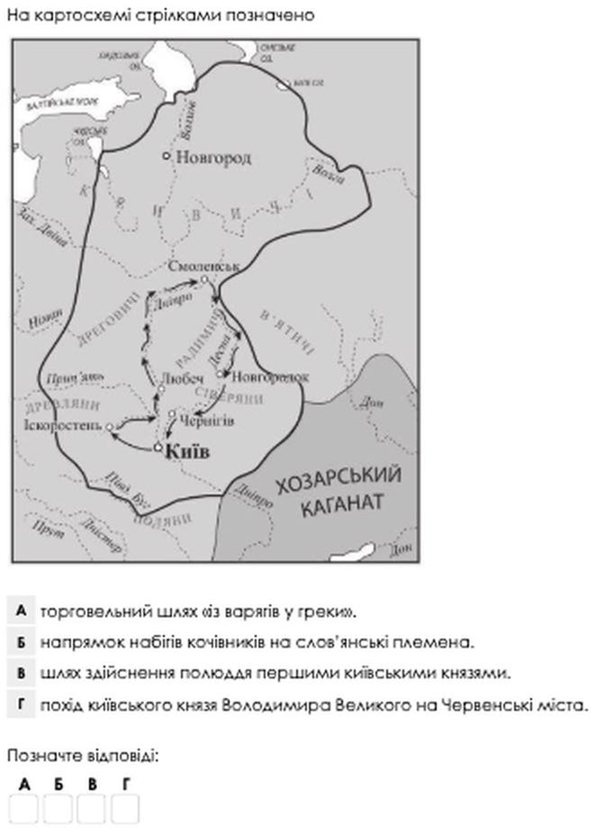
- А ✗
- Б ✗
- В шлях полюддя перших київських князів ✓
- Г ✗
Відповідь: В
🔍 Як упізнати: Стрілки описують коло землями підвладних племен (древлян, дреговичів, кривичів, сіверян) і повертаються до Києва. Це полюддя — об’їзд для збору данини.
5. Мініатюри (древлян закопують у човні, палять у лазні)
- А помста Ольги за смерть чоловіка ✓
- Б ✗
- В ✗
- Г ✗
Відповідь: А
🔍 Як упізнати: Ольга помстилася древлянам за вбивство Ігоря: послів закопала в човні, інших спалила в лазні.
6. Діяльність князя (заштриховано землі в’ятичів на Оці й між Дністром і Дунаєм, походи на Саркел, Тмутаракань, Доростол)
- А ✗
- Б ✗
- В ✗
- Г Святослава ✓
Відповідь: Г
🔍 Як упізнати: Ока (в’ятичі), Переяславець і Доростол на Дунаї, Саркел (Хозарія) — усе це походи Святослава.
7. Карта князювання (заштриховано Оку, Дністер–Прут, Тмутаракань)
- А ✗
- Б ✗
- В Святослава ✓
- Г ✗
Відповідь: В
8. Землі яких союзів племен увійшли до Русі в результаті походів (штриховка між Дністром і Прутом; у ЗНО є ще дві версії з питанням «чиї походи» — Святослав)?
- А ✗
- Б ✗
- В ✗
- Г уличів і тиверців ✓
Відповідь: Г
🔍 Як упізнати: Між Дніпром, Дністром і Прутом жили уличі й тиверці. Стрілки на Переяславець і Доростол — Балканські походи Святослава.
9. Заштриховано Хозарський каганат — з ним воювали князі
- А Олег, Святослав ✓
- Б ✗
- В ✗
- Г ✗
Відповідь: А
🔍 Як упізнати: Олег звільнив сіверян і радимичів від хозарської данини, Святослав розгромив каганат (965 р.).
10. Наслідок походів (Волзька Булгарія, Ітіль, землі на Оці)
- А ✗
- Б ✗
- В відкриття шляху на Русь кочовим ордам, насамперед печенігам ✓
- Г ✗
Відповідь: В
🔍 Як упізнати: Святослав знищив Хозарський каганат, який стримував кочовиків, — і печеніги вийшли до кордонів Русі.
11. Напрямки походів (на Константинополь, Херсонес, Саркел, Ітіль; у ЗНО є версія «оберіть три»: межі середини X ст., походи Олега й Ігоря, походи Святослава на Хозарію)
- А ✗
- Б Олега та Ігоря — походи на Константинополь ✓
- В ✗
- Г ✗
Відповідь: Б
🔍 Як упізнати: Морські походи на Константинополь: Олег (907, 911), Ігор (941, 944). Стрілки на Саркел та Ітіль — Святослав.
12. Кордони держави (від Фінської затоки до Дністра, по Волгу)
- А ✗
- Б ✗
- В Володимира Великого ✓
- Г ✗
Відповідь: В
🔍 Як упізнати: Найбільша територія Русі, від Балтики до степу, — за Володимира.
13. Дохристиянську давньоруську пам’ятку культури зображено на фото
- А мініатюра ✗
- Б Збруцький ідол — язичницька доба ✓
- В П’ятницька церква (Чернігів) ✗
- Г Оранта (Софія Київська) ✗
Відповідь: Б
🔍 Як упізнати: З чотирьох пам’яток тільки Збруцький ідол язичницький, решта — християнські (книжкова мініатюра, церква, мозаїка Оранти).
14. Монета «1100 років літописному Чернігову» — яка пам’ятка в центрі?
- А ✗
- Б ✗
- В Спасо-Преображенський собор ✓
- Г ✗
Відповідь: В
🔍 Як упізнати: Найдавніший собор Чернігова (XI ст., Мстислав) з двома вежами-башнями по боках.
🧩 Русь: виникнення Київської держави, без картинок (43)
1. Київ — центр союзу
- А древлян
- Б сіверян
- В полян ✓
- Г дулібів
Відповідь: В
2. Поляни, сіверяни, древляни — це
- А ідоли
- Б соціальні групи
- В факторії
- Г племінні союзи східних слов’ян ✓
Відповідь: Г
3. Які союзи жили на території України? (оберіть три; у ЗНО двічі)
- 1 радимичі ✗
- 2 сіверяни ✓
- 3 в’ятичі ✗
- 4 поляни ✓
- 5 кривичі ✗
- 6 дреговичі ✗
- 7 деревляни ✓
Відповідь: 2, 4, 7
4. Назви слов’ян у візантійців і готів: 1 алани; 2 венеди; 3 роксолани; 4 анти; 5 склавини; 6 авари
- А 1, 3, 4
- Б 2, 4, 6
- В 1, 3, 5
- Г 2, 4, 5 ✓
Відповідь: Г
5. «Зіслов’янилась вся наша земля…» (візантієць) — період
- А III–IV
- Б V–VII ст. ✓
- В VIII–IX
- Г X–XI
Відповідь: Б
6. Зміни, що сприяли утворенню держави: 1 занепад віче; 2 продуктивність, ремесло; 3 державна релігія; 4 розклад родової общини
- А 1, 4
- Б 2, 4 ✓
- В 1, 3
- Г 2, 3
Відповідь: Б
7. «Ударна сила князівських військ… внесок у державні інституції» — роль
- А варягів ✓
- Б печенігів
- В половців
- Г хозар
Відповідь: А
8. Русь у IX–X ст. була данницею
- А Золотої Орди
- Б Скіфії
- В Аварського каганату
- Г Хозарського каганату ✓
Відповідь: Г
9. Династія Рюриковичів утвердилася в
- А V–VI
- Б VII–VIII
- В IX–X ст. ✓
- Г XI–XIII
Відповідь: В
10. «…князюють тут Аскольд і Дір… несучи малого Ігоря» — наслідок
- А формування території
- Б християнство
- В утвердження Рюриковичів у Києві ✓
- Г федерація
Відповідь: В
11. Об’єднання Півдня й Півночі, Київ — «мати городів руських»
- А 860
- Б 882 ✓
- В 941
- Г 945
Відповідь: Б
12. Походи на Константинополь 907 і 911 рр.
- А Олег ✓
- Б Ігор
- В Святослав
- Г Ярослав
Відповідь: А
13. Походи 907, 911, 941, 944 рр. — на
- А Константинополь ✓
- Б Новгород
- В Доростол
- Г Булгар
Відповідь: А
14. «…зробити колеса й поставити на них кораблі…» — похід на
- А Ітіль
- Б Доростол
- В Іскоростень
- Г Константинополь ✓
Відповідь: Г
15. Договірні стосунки з Візантією започатковано у
- А 860
- Б 882
- В 907 ✓
- Г 941
Відповідь: В
16. Наслідок походів Олега на Візантію
- А втрата земель
- Б охорона Криму
- В Болгарія
- Г безмитна торгівля руських купців у Константинополі ✓
Відповідь: Г
17. «…похід 941 р., договір 944 р.… вбивство деревлянами… дід Володимира» — це
- А Аскольд
- Б Олег
- В Ігор ✓
- Г Святослав
Відповідь: В
18. «Піди-но, княже, з нами по данину…» — літописець про
- А погости
- Б ловища
- В уроки
- Г полюддя ✓
Відповідь: Г
19. Залежність племен від Києва виявлялася у (у ЗНО чотири рази)
- А зборі натуральної данини ✓
- Б грошовому податку
- В десятині
- Г відробітку
Відповідь: А
20. Подія, що стала причиною відмови від полюддя
- А Олег і Аскольд
- Б древляни вбили Ігоря ✓
- В Ярослав і Мстислав
- Г Ольга в Новгороді
Відповідь: Б
21. Повстання якого союзу придушила Ольга? (у ЗНО двічі)
- А древлян ✓
- Б сіверян
- В уличів
- Г полян
Відповідь: А
22. «…по три голуби і по три горобці…» — Ольга до (у ЗНО двічі)
- А полян
- Б древлян ✓
- В волинян
- Г сіверян
Відповідь: Б
23. Наслідок повстання древлян 945 р.
- А обмеження влади
- Б християнство
- В з’їзди
- Г розміри й місця збору данини ✓
Відповідь: Г
24. «Устави», «уроки», «погости», «становища» — правитель
- А Аскольд
- Б Олег
- В Ігор
- Г Ольга ✓
Відповідь: Г
25. «…встановила погости і оброки… устави й уроки…» — мета Ольги
- А упорядкувати управління і збір данини ✓
- Б кордони
- В помста
- Г християнство
Відповідь: А
26. Установленням «уроків» Ольга
- А визначила розміри данини ✓
- Б полюддя
- В школа
- Г васалітет
Відповідь: А
27. Результат посольства Ольги до Константинополя
- А древляни
- Б прийняття княгинею християнства ✓
- В варяги
- Г війна з хозарами
Відповідь: Б
28. Діяльність Ольги (оберіть три)
- 1 монети — Володимир ✗
- 2 придушила повстання деревлян ✓
- 3 посольство до Константинополя ✓
- 4 державна релігія — Володимир ✗
- 5 упорядкувала збір данини ✓
- 6 залежність від хозар ✗
- 7 Балкани — Святослав ✗
Відповідь: 2, 3, 5
29. Субтельний: «слов’янське ім’я, варязьке виховання, кочовий спосіб життя… апогей героїчної доби»
- А Олег
- Б Ігор
- В Святослав ✓
- Г Володимир
Відповідь: В
30. Цимісхій: «…не забув про поразку батька твого…» — до кого? (у ЗНО двічі)
- А Олега
- Б Святослава ✓
- В Володимира
- Г Ярослава
Відповідь: Б
Батько — Ігор, чий флот 941 р. спалили «грецьким вогнем».
31. Уривки про Святослава (оберіть три; у ЗНО тричі)
- 1 Доростол, мир з імператором ✓
- 2 кумири Перуна — Володимир ✗
- 3 перемога над хозарами, Ітіль, Біла Вежа ✓
- 4 поділ із Мстиславом — Ярослав ✗
- 5 десятина — Володимир ✗
- 6 Переяславець, «Хочу йти на вас» ✓
Відповідь: 1, 3, 6
32. Чи стосуються Святослава: 1 — розгром хозар; 2 — перемога над печенігами там, де Софія
- А обидві
- Б тільки 1-ша ✓
- В тільки 2-га
- Г жодна
Відповідь: Б
Друга подія — перемога Ярослава Мудрого 1036 р.
33. «…ляжемо кістьми тут, бо мертвий сорому не зазнає…» — перед битвою з
- А хозарами
- Б варягами
- В печенігами
- Г візантійцями ✓
Відповідь: Г
34. Походи Святослава призвели до
- А Червоної Русі
- Б усунення варягів
- В розширення кордонів держави ✓
- Г розорення
Відповідь: В
35. Наслідок розгрому хозар
- А червенські міста
- Б печенізька загроза на південних кордонах ✓
- В Балкани
- Г союз із Візантією
Відповідь: Б
36. «Шлюбну дипломатію» започаткував
- А Олег
- Б Ігор
- В Святослав
- Г Володимир Святославич ✓
Відповідь: Г
Шлюб Володимира з візантійською принцесою Анною (989 р.).
37. Увідповідніть князя і подію
- 1 Ігор → Б флот загинув від «грецького вогню»
- 2 Ольга → Г погости й уроки
- 3 Святослав → В розгром Хозарського каганату
- 4 Олег → Д об’єднання Півночі й Півдня
- А християнство — Володимир, зайве
Відповідь: 1-Б, 2-Г, 3-В, 4-Д
38. Поняття й уривок
- 1 полюддя → Д «…замишляти на древлян, прагнучи більшу данину»
- 2 язичництво → В кумири Перуна, Хорса, Дажбога
- 3 шлюбна дипломатія → Б сестру видав за Казимира
- 4 племінний союз → А поляни, деревляни, радимичі
- Г Руська правда — зайве
Відповідь: 1-Д, 2-В, 3-Б, 4-А
39. Подія й наслідок
- 1 половці просять допомоги → А поразка на Калці
- 2 Ольгерд вигнав татар з Поділля → Б землі до ВКЛ
- 3 Батий під Києвом → Г залежність від Орди
- 4 розгром хозар → В печенізька загроза
- Д червенські міста — зайве
Відповідь: 1-А, 2-Б, 3-Г, 4-В
40. Соціальна група й характеристика
- 1 ізгої → Г вийшли зі своїх груп
- 2 бояри → А панівна верства після князя
- 3 смерди → Б вільні селяни
- 4 закупи → В відпрацьовують позику
- Д холопи — зайве
Відповідь: 1-Г, 2-А, 3-Б, 4-В
41. Спадкова земельна власність знаті
- А посад
- Б наділ
- В помістя
- Г вотчина ✓
Відповідь: Г
42. Плуг, двопілля й трипілля сприяли
- А відновленню родючості ґрунтів ✓
- Б відмові від зерна
- В ремеслу
- Г занепаду промислів
Відповідь: А
43. «Пшениця за сіль… гривна й куни…» — торгівля часів
- А Боспору
- Б антів
- В Київської Русі ✓
- Г Скіфії
Відповідь: В
🧩 Русь: розквіт Київської держави, з картинками (10)
1. Кордони Русі (Червень, Белз, Перемишль, Юр’їв, Біла Вежа, Тмутаракань) за князювання
- А ✗
- Б ✗
- В ✗
- Г Ярослава Мудрого ✓
Відповідь: Г
🔍 Як упізнати: Юр’їв (Тарту) заснував Ярослав, він же повернув Червенські міста (Белз, Червень). Межа охоплює і Прибалтику, і Карпати — найбільша Русь.
2. Зовнішня політика за картою (штриховка Червенських міст і Прибалтики, походи на Корсунь; у ЗНО є друга версія з іншими варіантами)
- А ✗
- Б ✗
- В ✗
- Г Володимира Великого та Ярослава Мудрого ✓
Відповідь: Г
🔍 Як упізнати: Похід на Корсунь — Володимир (988), Червенські міста й Юр’їв у Прибалтиці — Володимир і Ярослав.
3. Похід великого князя (стрілка з Києва на Херсонес/Корсунь)
- А Володимира Великого ✓
- Б ✗
- В ✗
- Г ✗
Відповідь: А
🔍 Як упізнати: Облога Корсуня 988 р. закінчилася шлюбом Володимира з Анною і хрещенням.
4. Хто організував походи на половців (Шарукань, Сугров, на Дніпрі)? (у ЗНО двічі)
- А ✗
- Б Володимир Мономах ✓
- В ✗
- Г ✗
Відповідь: Б
🔍 Як упізнати: Значки юрт — половці, стрілки з Києва й Переяслава в степ, ✕ — перемоги 1103 і 1111 рр. Це походи Мономаха.
5. Доберіть до мініатюри князя / княгиню
- 1 хрещення в Царгороді, імператор поруч → В Ольга
- 2 хрещення в купелі серед священиків → Г Володимир
- 3 кораблі на колесах біля Царгорода → А Олег
- 4 «грецький вогонь» палить човни → Б Ігор
- Д Ярослав — зайвий
Відповідь: 1-В, 2-Г, 3-А, 4-Б
🔍 Як упізнати: Кораблі на колесах — Олег (907), грецький вогонь — Ігор (941), хрещення в Константинополі — Ольга, у купелі — Володимир.
6. «Найсвятіше місце Русі-України та її головний собор… тут молився Мазепа…» — яка пам’ятка?
- А Софія Київська (зелені бані, 13 верхів) ✓
- Б Успенський собор лаври ✗
- В Михайлівський Золотоверхий ✗
- Г Троїцький собор Чернігова ✗
Відповідь: А
7. На якому фото Успенський собор Києво-Печерської лаври?
- А Михайлівський (блакитний) ✗
- Б Софія (зелені бані) ✗
- В Володимирський собор (жовтий) ✗
- Г білий собор із золотими банями ✓
Відповідь: Г
8. Картини Івана Батечка (собор, Заборовського брама, дзвіниця, музиканти з фрески) — тематичний блок
- А ✗
- Б ✗
- В ✗
- Г Софія Київська ✓
Відповідь: Г
🔍 Як упізнати: Софійський собор, його дзвіниця, брама Заборовського та фреска зі скоморохами — все це Софія Київська.
9. Монета «Повість минулих літ» — у центрі (у ЗНО двічі)
- А ✗
- Б Нестор ✓
- В ✗
- Г ✗
Відповідь: Б
🔍 Як упізнати: Автор (укладач) «Повісті минулих літ» — чернець Нестор, тож він у центрі.
10. Монета «Новгород-Сіверському князівству 900 років» (дружина в поході) — сюжет твору
- А ✗
- Б «Слово о полку Ігоревім» ✓
- В ✗
- Г ✗
Відповідь: Б
🔍 Як упізнати: Ігор Святославич — новгород-сіверський князь, герой «Слова».
🧩 Русь: розквіт Київської держави, без картинок (59)
1. Рік запровадження християнства
- А 882
- Б 911
- В 945
- Г 988 ✓
Відповідь: Г
2. Котляр: «язичницька релігія не забезпечувала підтримки державній владі…» — історик указав на
- А результат
- Б привід
- В причину запровадження християнства ✓
- Г наслідки
Відповідь: В
3. «Не годиться християнам віддавати заміж за язичників…» — посли до
- А Олега
- Б Ігоря
- В Святослава
- Г Володимира ✓
Відповідь: Г
4. «…якби був поганий закон грецький, то не прийняла б… бабця твоя Ольга» (у ЗНО тричі)
- А вибір державної релігії — розмова з Володимиром ✓
- Б Руська правда
- В престолонаслідування
- Г договір
Відповідь: А
5. Що передувало хрещенню киян у Дніпрі?
- А Десятинна церква
- Б похід на Константинополь
- В руйнування язичницького капища ✓
- Г розгром печенігів
Відповідь: В
6. Рік: «Володимир віддав Корсунь грекам… Перуна… вкинули в Дніпро»
- А 860
- Б 882
- В 988 ✓
- Г 1054
Відповідь: В
7. Між якими релігіями обирав Володимир? (оберіть три)
- 1 християнство ✓
- 2 іслам ✓
- 3 юдаїзм ✓
- 4 буддизм ✗
- 5 даосизм ✗
- 6 політеїзм ✗
- 7 синтоїзм ✗
Відповідь: 1, 2, 3
8. Наслідки хрещення Володимира (оберіть три)
- 1 династичний союз із Візантією ✓
- 2 перший договір — 907 ✗
- 3 ✗
- 4 кам’яна церковна архітектура ✓
- 5 протекторат ✗
- 6 ✗
- 7 християнство — державна релігія ✓
Відповідь: 1, 4, 7
9. Після якої події «великий князь став повноцінним суб’єктом міжнародного права»? (у ЗНО двічі)
- А запровадження християнства Володимиром ✓
- Б похід на хозар
- В об’єднання Олегом
- Г Руська правда
Відповідь: А
10. Що характерне для князювання Володимира? (оберіть три; у ЗНО двічі)
- 1 перші золоті й срібні монети ✓
- 2 перші школи ✓
- 3 Руська правда — Ярослав ✗
- 4 релігійні реформи ✓
- 5 з’їзди ✗
- 6 Константинополь ✗
- 7 престолонаслідування ✗
Відповідь: 1, 2, 4
11. Уривки про Володимира Великого (оберіть три)
- 1 хозари — Святослав ✗
- 2 кумири на пагорбі ✓
- 3 мир із Мстиславом — Ярослав ✗
- 4 «повелів поскидати кумирів» ✓
- 5 печеніги біля Софії — Ярослав ✗
- 6 десятина Богородиці ✓
Відповідь: 2, 4, 6
Володимир спершу поставив кумирів (язичницька реформа 980 р.), а потім їх скинув.
12. Адміністративна реформа Володимира
- А ліквідував владу племінних князів ✓
- Б погости й уроки
- В формальна зверхність
- Г удільно-вотчинний устрій
Відповідь: А
13. Боротьба з печенігами успішно завершилася за
- А Святослава
- Б Володимира
- В Ярослава Володимировича ✓
- Г Мономаха
Відповідь: В
Повторюється ще раз.
14. Рік: «…ледве переміг Ярослав… печеніги… потонули в Сітомлі»
- А 1019
- Б 1036 ✓
- В 1051
- Г 1054
Відповідь: Б
15. Наслідок битви на Альті (Ярослав переміг Святополка)
- А поділ із Мстиславом
- Б престолонаслідування
- В єдиновладдя
- Г здобуття великокняжого столу ✓
Відповідь: Г
Єдиновладним Ярослав став тільки 1036 р., після смерті Мстислава.
16. 1036 р. Ярослав «став єдиновладним» завдяки
- А перемозі над печенігами
- Б Руській правді
- В Печерському монастирю
- Г успадкуванню земель Мстислава ✓
Відповідь: Г
17. Рік: «Заложив Ярослав церкву святої Софії…»
- А 1015
- Б 1037 ✓
- В 1054
- Г 1078
Відповідь: Б
Ще одне питання — «у якому столітті?» — XI ст.
18. Культурницька діяльність Ярослава: 1 — церква Василя на місці кумирів; 2 — «засіяв книжними словами», церква на Золотих воротах; 3 — Софія
- А 1, 3
- Б 1, 2
- В 2, 3 ✓
- Г 1, 2, 3
Відповідь: В
Перший уривок — Володимир.
19. Хто поставив русина Іларіона митрополитом?
- А Володимир
- Б Ярослав Мудрий ✓
- В Мономах
- Г Мстислав
Відповідь: Б
20. За Ярослава запроваджено
- А писаний збірник законів ✓
- Б християнство
- В полюддя
- Г з’їзди
Відповідь: А
21. Основа зовнішньої політики Ярослава
- А унії
- Б міждинастичні шлюби ✓
- В корона від Папи
- Г хрестові походи
Відповідь: Б
22. Набіги яких кочовиків припинив Ярослав?
- А половців
- Б монголів
- В хозарів
- Г печенігів ✓
Відповідь: Г
23. Уривки про Ярослава (оберіть три)
- 1 хозари ✗
- 2 мир із Мстиславом ✓
- 3 десятина ✗
- 4 заповіт синам ✓
- 5 кумири ✗
- 6 печеніги біля Софії ✓
Відповідь: 2, 4, 6
24. Особливості Русі кінця X — середини XI ст. (оберіть три)
- 1 ✗
- 2 ✗
- 3 від завоювання до освоєння земель ✓
- 4 ✗
- 5 державна релігія ✓
- 6 писане право ✓
Відповідь: 3, 5, 6
25. Спільне для Святослава, Володимира, Ярослава
- А розширювали кордони ✓
- Б християнство
- В закони
- Г шлюби
Відповідь: А
26. Мета заповіту Ярослава
- А убезпечити від міжусобиць ✓
- Б станова монархія
- В данина
- Г ліквідувати уділи
Відповідь: А
27. За заповітом Ярослава (оберіть три)
- 1 визначено стольні міста ✓
- 2 ✗
- 3 Київ старшому — Ізяславу ✓
- 4 отчина — Любеч ✗
- 5 принцип сеньорату ✓
- 6 ✗
- 7 ✗
Відповідь: 1, 3, 5
28. Після смерті Ярослава владу зосередили (оберіть три)
- 1 Ізяслав ✓
- 2 ✗
- 3 ✗
- 4 Святослав ✓
- 5 ✗
- 6 Всеволод ✓
- 7 ✗
Відповідь: 1, 4, 6
29. Після смерті Ярослава
- А утворено тріумвірат ✓
- Б шлюбна дипломатія
- В усунуто Рюриковичів
- Г митрополит
Відповідь: А
30. Вирішальний вплив на храмове будівництво
- А західноєвропейська
- Б варязька
- В хозарська
- Г візантійська ✓
Відповідь: Г
31. Рік з’їзду: «Кожен хай держить отчину свою…»
- А 1054
- Б 1097 ✓
- В 1113
- Г 1187
Відповідь: Б
32. Любецький з’їзд — до якого періоду належить? (до цього ж уривка ще два питання: «на князівському з’їзді» і наслідок — «зміцнення самостійності удільних князівств»)
- А становлення
- Б розквіт
- В політична роздробленість ✓
- Г Орда
Відповідь: В
33. Статус «отчини» закріплено
- А заповітом Ярослава
- Б Правдою Ярославичів
- В постановою Любецького з’їзду ✓
- Г Уставом Мономаха
Відповідь: В
34. Князівські з’їзди характерні для
- А Києвичів
- Б перших Рюриковичів
- В Володимира і Ярослава
- Г синів та онуків Ярослава ✓
Відповідь: Г
35. Зміни в політичному устрої XI–XIII ст.
- А обмеження влади
- Б загальноруські князівські з’їзди ✓
- В зникнення віче
- Г боярська рада — уряд
Відповідь: Б
36. «Ми не дамо тобі стола володимирського, бо ти кинув ножа в нас…»
- А полюддя
- Б помістя
- В маґдебурґ
- Г боротьба князів за уділи ✓
Відповідь: Г
37. Рік: «Володимир Мономах сів у Києві…»
- А 1054
- Б 1097
- В 1113 ✓
- Г 1199
Відповідь: В
38. Мономах сів у Києві: 1 — за рішенням Любеча; 2 — за запрошенням віча під час повстання 1113 р.
- А обидва
- Б тільки 1
- В тільки 2 ✓
- Г жоден
Відповідь: В
За Любечем Київ мав лишатися нащадкам Ізяслава (Святополка), тож Мономах прийшов не за отчиною, а за запрошенням киян.
39. Що пов’язано з Мономахом? (оберіть три)
- 1 ✗
- 2 ініціювання нової системи престолонаслідування (отчинний принцип Любецького з’їзду, який скликав Мономах) ✓
- 3 ✗
- 4 з’їзди (снеми) ✓
- 5 «місто Володимира» — це Володимир Великий ✗
- 6 ✗
- 7 об’єднання князів проти половців ✓
Відповідь: 2, 4, 7
Варіант 5 («місто Володимира») — це Володимир Великий, а не Мономах.
40. Боротьбу з половцями найуспішніше вели
- А Володимир і Ярослав
- Б Мономах і Мстислав Великий ✓
- В Данило і Юрій
- Г Ігор і Святослав
Відповідь: Б
41. Рік «Слова о полку Ігоревім» («Один брат, один світ світлий…»)
- А 1054
- Б 1187 ✓
- В 1205
- Г 1240
Відповідь: Б
42. Причини роздробленості (оберіть три; у ЗНО є ще версія з варіантами «1, 4»)
- 1 занепад господарства ✗
- 2 немає механізму спадкоємства ✓
- 3 Гедиміновичі ✗
- 4 вотчинне землеволодіння ✓
- 5 етнічна неоднорідність ✓
- 6 падіння Візантії ✗
Відповідь: 2, 4, 5
43. Зміна торгівлі, занепад Києва як торгового центру зумовили
- А втрату незалежності
- Б занепад ремесла
- В політичну роздробленість ✓
- Г залежність від Візантії
Відповідь: В
44. Сутність роздробленості
- А зміцнення самостійності удільних князівств ✓
- Б з’їзди
- В спадкоємство
- Г віче
Відповідь: А
45. Яке князівство повністю залежало від Києва? (у ЗНО двічі)
- А Галицьке
- Б Новгород-Сіверське
- В Чернігівське
- Г Переяславське ✓
Відповідь: Г
46. Шляхи виникнення спадкової власності феодалів
- А слободи
- Б хутори
- В вотчини ✓
- Г фільварки
Відповідь: В
47. За Червенські міста київські князі боролися з
- А Литвою
- Б Угорщиною
- В Польщею ✓
- Г Молдавією
Відповідь: В
48. «…перемога татар над усіма князями руськими…» — битва
- А на Калці ✓
- Б Доростол
- В Ворскла
- Г Орша
Відповідь: А
49. Період і поняття
- 1 стародавня історія → Б привласнююче господарство, археологічна культура
- 2 перші князі → Г язичництво, полюддя, уроки, погости
- 3 розквіт → А християнізація, Змієві вали, «тесть Європи», Руська правда
- 4 роздробленість → В усобиці, уділи, Правда Ярославичів
- Д фільварки — зайве
Відповідь: 1-Б, 2-Г, 3-А, 4-В
50. Подія й князь
- 1 «Ви оба не є князі…» → А Олег
- 2 убили древляни → Б Ігор
- 3 «хочу жити в Переяславці» → В Святослав
- 4 віддав Корсунь за царицю → Г Володимир
- Д Ярослав — зайвий
Відповідь: 1-А, 2-Б, 3-В, 4-Г
51. Подія й князь
- 1 Переяславець, «Хочу йти на вас» → Б Святослав
- 2 мир із Мстиславом → Г Ярослав
- 3 грецький вогонь → А Ігор
- 4 кумири → В Володимир
- Д Мономах — зайвий
Відповідь: 1-Б, 2-Г, 3-А, 4-В
52. Князь і роль
- 1 Олег → В об’єднав північ і південь
- 2 Святослав → А розгромив хозар
- 3 Володимир → Б десятина
- 4 Ярослав → Д Руська правда
- Г Любеч — зайве
Відповідь: 1-В, 2-А, 3-Б, 4-Д
53. Особа й діяльність
- 1 Ольга → В погости й уроки
- 2 Володимир → А християнство
- 3 Мономах → Б Любецький з’їзд
- 4 Ярослав → Г писане право
- Д об’єднання — Олег, зайве
Відповідь: 1-В, 2-А, 3-Б, 4-Г
54. Місто й подія
- 1 Іскоростень → Г загибель Ігоря
- 2 Царгород → В хрещення Ольги
- 3 Любеч → Б з’їзд князів
- 4 Корсунь → А хрещення Володимира
- Д — зайве
Відповідь: 1-Г, 2-В, 3-Б, 4-А
55. Послідовність понять
- 1) В полюддя
- 2) Г погости (Ольга)
- 3) А вотчина
- 4) Б ярлик (Орда)
Відповідь: В, Г, А, Б
56. Послідовність подій «Повісті минулих літ»
- 1) В Олег проти сіверян — 884
- 2) А посли древлян до Ольги — 945
- 3) Г Святослав на Дунаї — 968
- 4) Б скинення кумирів — 988
Відповідь: В, А, Г, Б
57. Послідовність подій
- 1) А печеніги під Києвом — 1036
- 2) В заповіт Ярослава — 1054
- 3) Б Ярославичі проти Всеслава — 1067
- 4) Г Любеч — 1097
Відповідь: А, В, Б, Г
58. Хронологія подій
- 1) Г Софія — 1037
- 2) Б заповіт — 1054
- 3) А Любеч — 1097
- 4) В кияни кличуть Мономаха — 1113
Відповідь: Г, Б, А, В
59. Подія й рік
- 1 Любеч → Г 1097
- 2 заповіт → В 1054
- 3 кияни кличуть Мономаха → Д 1113
- 4 Корсунь і скинення кумирів → Б 988
- А 972 — зайве
Відповідь: 1-Г, 2-В, 3-Д, 4-Б
🧩 Русь: ще завдання до XIII ст., з картинками (2)
1. Розташуйте картосхеми за хронологією подій IX–XIII ст.
- 1 А — Корсунь, Червенські міста, Юр’їв: Володимир і Ярослав, X — початок XI ст.
- 2 В — Київ → Шарукань, Сугров: походи Мономаха на половців, 1103–1111
- 3 Г — Новгород-Сіверський, Путивль → Донець: похід Ігоря, 1185
- 4 Б — Калка, Київ, Володимир, Галич → Угорщина: монголи, 1223–1241
Відповідь: А, В, Г, Б
🔍 Як упізнати: А — велика мапа від Балтики до Чорного моря, Корсунь (Херсонес) і заштриховані Червенські міста: це доба Володимира Великого. В — підписано «Київська земля», «Переяславська земля», стрілки з Києва до половецьких міст Шарукань і Сугров: походи Мономаха. Г — стрілки з Новгорода-Сіверського й Трубчевська через Путивль у степ, ✕ біля Сіверського Дінця: Ігор, 1185 р. Б — у легенді «походи кочовиків у різні роки», ✕ на Калці й стрілки аж до Угорщини та Польщі: монголи.
2. Доберіть до поштової марки літописний уривок
- 1 Данило Романович, лев на прапорі, корона → А «прислав Папа послів… вінець королівства»
- 2 «900 років Уставу Володимира Мономаха» → Г з’їзд у Берестові, закон про купця-боржника
- 3 «Народне ополчення XI–XII ст.» → Б кияни на віче: «дай-но, княже, оружжя і коней»
- 4 «900 років Повісті минулих літ», чернець пише книгу → В «Нестора, чорноризця Феодосієвого монастиря…»
- Д «80 гривень віри» — це «Руська правда» Ярослава, марки до неї немає
Відповідь: 1-А, 2-Г, 3-Б, 4-В
🔍 Як упізнати: Підписи під марками — головна підказка. Ополчення = прості люди зі зброєю, тому уривок про повстання киян 1068 р., які просили в князя зброю проти половців. Устав Мономаха (1113 р.) полегшив становище боржників — звідси уривок про купця, що «не можна продати в рабство».
🧩 Русь: ще завдання до XIII ст., без картинок (20)
1. Твори героїчного епосу про богатирів, пов’язані з Києвом і князем Володимиром, — це
- А билини ✓
- Б балади
- В поеми
- Г думи
Відповідь: А
Думи — козацький епос XVI–XVII ст.
2. Найдавніша датована книжкова пам’ятка Київської Русі
- А «Києво-Печерський патерик»
- Б «Остромирове Євангеліє» ✓
- В «Слово о полку Ігоревім»
- Г «Повість минулих літ»
Відповідь: Б
«Остромирове Євангеліє» датоване 1056–1057 рр.
3. У «Слові о полку Ігоревім» ідеться про
- А один із походів руських князів на половців ✓
- Б монгольську навалу
- В розгром Хозарського каганату
- Г набіги печенігів
Відповідь: А
Похід новгород-сіверського князя Ігоря 1185 р.
4. Установіть відповідність: князь — роки правління
- 1 Володимир Великий → Б 980–1015
- 2 Данило Галицький → Д 1238–1264
- 3 Ярослав Мудрий → В 1019–1054
- 4 Олег → А 882–912
- Г 1113–1125 (Мономах) — зайве
Відповідь: 1-Б, 2-Д, 3-В, 4-А
5. Установіть відповідність: уривок — століття (у ЗНО двічі)
- 1 хрещення Володимира в Корсуні → Б X ст.
- 2 Олег убиває Аскольда і Діра, «а се — син Рюриків» → А IX ст. (882)
- 3 «заложив… Золоті ворота», монастир святого Георгія → В XI ст. (Ярослав)
- 4 «взяли татари місто Київ… грудня в 6 день» → Д XIII ст. (1240)
- Г XII ст. — зайве
Відповідь: 1-Б, 2-А, 3-В, 4-Д
6. Установіть відповідність: уривок — століття
- 1 єпископ корсунський охрестив Володимира → Б X ст.
- 2 Золоті ворота, Софія → В XI ст.
- 3 Аскольд і Дір пішли на греків, буря розметала кораблі → А IX ст.
- 4 Батий оточив Київ → Д XIII ст.
- Г XII ст. — зайве
Відповідь: 1-Б, 2-В, 3-А, 4-Д
7. Установіть відповідність: подія — рік
- 1 християнство — державна релігія → Б 988
- 2 перша редакція «Повісті минулих літ» → В 1113
- 3 утворення Галицько-Волинського князівства → Д 1199
- 4 перша згадка назви «Україна» → Г 1187
- А 882 — зайве
Відповідь: 1-Б, 2-В, 3-Д, 4-Г
«Україна» вперше в літописі 1187 р. — у розповіді про смерть переяславського князя Володимира Глібовича.
8. Установіть відповідність: захід — діяч
- 1 «погости» → В княгиня Ольга
- 2 християнство — державна релігія → Д Володимир Великий
- 3 перша писана збірка законів → Г Ярослав Мудрий
- 4 з’їзд у Любечі → Б Володимир Мономах
- А Данило Галицький — зайвий
Відповідь: 1-В, 2-Д, 3-Г, 4-Б
Любецький з’їзд 1097 р. скликав саме Мономах (тоді ще переяславський князь).
9. Установіть відповідність: місто — подія
- 1 Іскоростень → Б придушення повстання деревлян
- 2 Любеч → Д з’їзд князів
- 3 Київ → В Софійський собор
- 4 Корсунь (Херсонес) → А хрещення Володимира
- Г загибель Святослава — на дніпровських порогах, зайве
Відповідь: 1-Б, 2-Д, 3-В, 4-А
10. Установіть відповідність: битва — супротивник
- 1 під Ітілем (≈965) → В хозари
- 2 під Києвом (1036) → Д печеніги
- 3 на Альті (1068) → Г половці
- 4 на Калці (1223) → Б монголи
- А угорці — зайві
Відповідь: 1-В, 2-Д, 3-Г, 4-Б
11. Установіть відповідність: подія — наслідок
- 1 розгром Хозарського каганату → В відкрито шлях на Русь кочовикам Сходу
- 2 християнство — державна релігія → Д рівноправні зв’язки з Європою
- 3 похід Батия → А руйнування міст, занепад ремесла й торгівлі
- 4 Роман об’єднав Галич і Волинь → Б новий центр політичного й економічного життя
- Г вихід на міжнародну арену — зайве
Відповідь: 1-В, 2-Д, 3-А, 4-Б
Хозари стримували кочовиків на сході — після їх розгрому Святославом у степ прийшли печеніги. У ЗНО є друга версія: 1 похід Аскольда на Константинополь → Г (вихід на міжнародну арену), 2 Святослав і хозари → В, 3 Роман → Б, 4 Батий → А.
12. Проти якого народу Мономах здійснив походи 1103, 1111, 1116 рр.?
- А хозари
- Б печеніги
- В половці ✓
- Г монголи
Відповідь: В
13. Правління Ярославичів — це етап, коли
- А цілковитий розпад, князі — васали іноземців
- Б економічний занепад
- В втрата суверенітету
- Г централізовану монархію змінила федеративна, державою колективно правила група князів ✓
Відповідь: Г
Тріумвірат Ізяслава, Святослава й Всеволода.
14. Причина домовленості онуків Ярослава: «Відтепер з’єднаймося в одне серце…» (Любеч, 1097)
- А хозари
- Б печеніги
- В часті напади половців ✓
- Г монголи
Відповідь: В
15. «…князі галицькі ведуть війну з князями київськими — а по всій Русі солі не залишилося…» — головна причина протистояння
- А політична
- Б релігійна
- В економічна ✓
- Г династична
Відповідь: В
Сіль везли з Галичини (Коломия, Перемишль). Спір через сіль — економіка.
16. Сходження Мономаха на великокнязівський стіл (1113)
- А вотчинне право Всеволодовичів
- Б за запрошенням віча під час повстання киян ✓
- В умова походу на половців
- Г нова війна зі Святославичами
Відповідь: Б
17. Послідовність правових кодексів
- Г «Закон земляний» Володимира Великого
- А «Найдавніша Правда» Ярослава
- В «Правда Ярославичів»
- Б «Устав» Мономаха
Відповідь: Г, А, В, Б
18. Послідовність подій державотворення
- Б династія Рюриковичів у Києві (882)
- Г християнство (988)
- В перший писаний збірник права (Ярослав)
- А «кожен хай держить отчину свою» (1097)
Відповідь: Б, Г, В, А
19. Послідовність уривків
- В Святослав іде на греків (970-ті)
- Б Ярослав розбив печенігів (1036)
- А «прийшли половці перший раз» (1061)
- Г татари взяли Київ (1240)
Відповідь: В, Б, А, Г
20. «Перестали князі невірних воювати, стали один одному казати: се моє, а се моє теж…» — характеристика доби
- А розселення східних слов’ян
- Б утворення Київської Русі
- В політичної роздробленості ✓
- Г золотоординського панування
Відповідь: В
«Слово о полку Ігоревім» про чвари князів.
🧩 Культура Русі: хрещення, з картинками (3)
1. Подія на мініатюрі з літопису (чоловік у купелі, священики) пов’язана з князем
- А ✗
- Б Володимиром Святославичем — хрещення ✓
- В ✗
- Г ✗
Відповідь: Б
🔍 Як упізнати: Людина по пояс у купелі (чаші з водою), поруч священик у німбі й люди з сувоями — сцена хрещення. З князів тут хрестився Володимир (Корсунь, 988).
2. Пам’ятником на листівці «Привет из Киева» увічнено
- А запровадження християнства ✓
- Б ✗
- В ✗
- Г ✗
Відповідь: А
🔍 Як упізнати: Постать із великим хрестом на кручі над Дніпром — пам’ятник Володимиру Великому (1853). Хрест у руках = хрещення Русі.
3. Що сприяло початку карбування монет (князь на троні, Христос)?
- А запровадження християнства ✓
- Б ✗
- В ✗
- Г утвердження Рюриковичів ✗
Відповідь: А
🔍 Як упізнати: На монетах (златники й срібляники Володимира) — князь на троні з хрестом і Христос Пантократор. Монети з християнськими образами з’явилися одразу після хрещення.
🧩 Культура Русі: християнство й держава, без картинок (12)
1. Вирішальний фактор поширення писемності
- А торгівля
- Б запровадження християнства ✓
- В закони
- Г кордони
Відповідь: Б
2. Утвердженню Русі як могутньої держави сприяло
- А роздробленість у Європі
- Б запровадження християнства ✓
- В удільні князівства
- Г падіння Візантії
Відповідь: Б
3. Один із наслідків запровадження християнства
- А тривала боротьба держави й церкви з традиційними віруваннями ✓
- Б зверхність Константинополя
- В залежність від Візантії
- Г ізоляція
Відповідь: А
Двовір’я: язичницькі звичаї жили ще століттями.
4. «…якби був поганий закон грецький, то не прийняла б його твоя бабця Ольга»
- А вибір державної релігії ✓
- Б Руська правда
- В престолонаслідування
- Г договір
Відповідь: А
5. Між якими релігіями вибирав Володимир? (оберіть три; у ЗНО двічі з різними номерами)
- 1 християнство ✓
- 2 іудаїзм ✓
- 3 іслам ✓
- 4 буддизм ✗
- 5 індуїзм ✗
- 6 даосизм ✗
- 7 конфуціанство ✗
Відповідь: 1, 2, 3
У другій версії: 1 християнство, 4 іслам, 6 іудаїзм → 1, 4, 6.
6. Що пов’язано з Володимиром Великим? (оберіть три)
- 1 Руська правда — Ярослав ✗
- 2 Михайлівський — Святополк ✗
- 3 християнство ✓
- 4 Іларіон — Ярослав ✗
- 5 Десятинна церква ✓
- 6 власні золоті й срібні монети ✓
- 7 Печерський монастир — Ярослав ✗
Відповідь: 3, 5, 6
7. Хто почав карбувати монети з тризубом?
- А Олег
- Б Святослав
- В Володимир Великий ✓
- Г Ярослав Мудрий
Відповідь: В
8. «…поставили Іларіона, русина, митрополитом…» — за князя
- А Ігоря
- Б Святослава
- В Володимира
- Г Ярослава Мудрого ✓
Відповідь: Г
1051 р.
9. Послідовність подій за Володимира й Ярослава
- В пантеон язичницьких богів (980)
- Б початок Десятинної церкви (989)
- А Софійський собор (1037)
- Г Іларіон — митрополит (1051)
Відповідь: В, Б, А, Г
10. Існування Київської Русі охоплює
- А VII–IX
- Б VIII–XII
- В IX–XIII ст. ✓
- Г X–XIV
Відповідь: В
11. Виникнення самостійних політичних центрів у XII — на початку XIII ст. — наслідок
- А монголів
- Б політичної роздробленості ✓
- В тріумвірату
- Г занепаду Києва
Відповідь: Б
12. Сутність політичної роздробленості
- А зміна унітарної монархії федеративною ✓
- Б занепад
- В цілковита руйнація
- Г втрата незалежності
Відповідь: А
Держава не зникла — Київ лишався символічним центром, а влада розподілилася між князівствами.
1.4🏰 Роздробленість і Галицько-Волинська держава
🔑 Терміни, які варто знати
- Драбинчаста система — спадкування княжої влади за старшинством між братами.
- Вотчина — спадкове володіння князя власною землею.
- Тріумвірат — спільне правління трьох осіб.
- Королівство Руське — назва держави після коронації Данила Романовича 1253 року.
Перед смертю Ярослав Мудрий запровадив «драбинчасту» систему спадкування влади: князівства розподілялися між синами за старшинством, і зі смертю старшого всі інші пересувалися на щабель вище — задум був у тому, щоб кожен син мав шанс згодом зайняти київський престол, не воюючи за владу негайно.
На практиці троє найстарших синів (Ізяслав, Святослав, Всеволод) у 1054–1073 роках спершу правили спільно як тріумвірат — це виявилося неефективним: у битві на річці Альті 1068 року тріумвірат зазнав поразки від половців (нових кочовиків, що прийшли на зміну розбитим печенігам), після чого кияни повстали й вигнали Ізяслава з Києва.
Щоб покласти край міжкнязівським війнам за території, у 1097 році з ініціативи Володимира Мономаха відбувся Любецький з’їзд князів: ухвалено принцип «кожен тримає вотчину свою» — кожне князівство закріплювалося спадково за конкретною гілкою роду, і князі більше не пересувалися драбинкою між містами. Це припинило боротьбу за території, але водночас закріпило роздробленість: кожен князь почав почуватися повноправним господарем лише своєї землі, хоча формальна єдність держави ще зберігалася.
У 1113 році владу отримав сам Володимир Мономах, якому завдяки особистому авторитету вдавалося утримувати єдність держави; він здійснив найбільше походів проти половців, а перед смертю написав «Повчання дітям». Певний час єдність утримував і його син Мстислав, але з його смертю 1132 року Русь остаточно розпадається на самостійні князівства — Київське, Чернігівське, Переяславське, Волинське, Галицьке та інші.
Серед новоутворених князівств поступово вирізняються Галицьке та Волинське як спадкоємці державницької традиції Русі. Галицьке князівство збагатилося завдяки покладам солі й вигідному розташуванню на перетині торгових шляхів; найяскравішим галицьким князем був Ярослав Осмомисл (згаданий у «Слові о полку Ігоревім») — за нього князівство розбагатіло, але усередині сформувалася проблема боярської олігархії: галицькі бояри мали настільки великий вплив, що фактично обмежували владу самого князя.
Роман Мстиславович двічі намагався об’єднати Галицьке і Волинське князівства: перша спроба 1188 року провалилася, друга, близько 1199 року, — вдалася, утворивши Галицько-Волинську державу. Стосунки Романа з галицькими боярами лишалися складними — йому приписують крилату фразу про те, що не варто «вбивати бджіл», якщо хочеш мати мед: без співпраці зі знаттю правитель позбавляє себе ресурсу для державного будівництва. У 1203 році Роман здобув Київ, тимчасово об’єднавши під собою і Галицько-Волинську державу, і Київське князівство; загинув 1205 року в поході до польських земель.
Після його смерті настала криза влади: вдова Романа, князівна Анна, змушена була з малолітніми синами тікати від боярського заколоту. Єдину державу відновив лише 1238 року старший син Романа — Данило Романович (молодший брат Василько отримав у володіння Волинь). У 1238–1239 роках Данило боровся за Київ проти чернігівського князя й переміг після того, як монголи 1239 року зруйнували Чернігів, усунувши суперника; здобув перемогу над Тевтонським орденом під Дорогочином, заснував Холм (свою столицю) і Львів (названий на честь сина Лева).
У 1245 році Данило отримав у Золотій Орді ярлик на князювання і того ж року переміг під Ярославом галицьких бояр, які діяли в союзі з угорцями, — це остаточно утвердило його одноосібну владу. Далі він домовлявся з Папою Римським про антимонгольську коаліцію: в обмін на обіцянку коаліції прийняв від Папи королівську корону — 1253 року в Дорогочині відбулася коронація Данила як короля, і державу відтоді іменують Королівством Руським. Обіцяна коаліція так і не відбулася; зрештою Данило був змушений відновити сплату данини Орді. Помер 1264 року.
🧩 Роздробленість, з картинками (2)
1. Карта: похід Ігоря Святославича (Новгород-Сіверський, Путивль, Курськ, бій із половцями)
- А ✗
- Б ✗
- В «І коли приблизився Ігор до полків своїх… схопили його» ✓
- Г ✗
Відповідь: В
🔍 Як упізнати: Похід 1185 р., оспіваний у «Слові о полку Ігоревім».
2. Увідповідніть уривок і князівство на карті
- 1 Володимир Глібович, «плакали переяславці» → В Переяславське
- 2 «грабували… Поділ, і Гору… Софію» → Г Київське
- 3 Ігор, «на землю Половецькую водив» → Б Чернігово-Сіверське
- 4 Ярослав Осмомисл, «підперши Гори Угорські» → Д Галицьке
- А Волинське — зайве
Відповідь: 1-В, 2-Г, 3-Б, 4-Д
🔍 Як упізнати: Опорні міста: Переяслав/Пирятин — В, Київ/Білгород — Г, Новгород-Сіверський — Б, Галич біля Карпат — Д.
🧩 Роздробленість, Галицько-Волинська держава, монголи, з картинками (13)
1. Установіть відповідність: князівство — терен на карті
- 1 Київське → Г (Білгород, Юр’їв, Овруч)
- 2 Галицьке → Д (Перемишль, Львів, Берлад)
- 3 Волинське → А (Берестя, Володимир, Белз)
- 4 Чернігівське → Б (Новгород-Сіверський, Любеч, Путивль)
- В — Переяславське (Пирятин, Воїнь), зайве
Відповідь: 1-Г, 2-Д, 3-А, 4-Б
🔍 Як упізнати: Шукай міста-орієнтири: Волинь — Володимир і Берестя на заході, біля Польщі; Галичина — довга смуга вздовж Карпат і Дністра аж до Чорного моря (Берладь); Київщина — навколо Дніпра (Білгород, Юр’їв); Чернігівщина — найбільша, на північному сході (Новгород-Сіверський, Путивль); Переяславщина — маленька, на лівому березі Дніпра, біля степу.
2. Установіть відповідність: терен 1–4 — князівство
- 1 → Б Галицьке (Перемишль, Берладь)
- 2 → В Волинське (Володимир, Белз, Кременець)
- 3 → А Київське (Вишгород, Юр’їв)
- 4 → Г Чернігівське (Новгород-Сіверський, Путивль)
- Д Переяславське — темна пляма без номера, зайве
Відповідь: 1-Б, 2-В, 3-А, 4-Г
🔍 Як упізнати: Та сама логіка, що й у попередньому завданні: Галичина — вздовж Карпат до моря, Волинь — північний захід, Київщина — Дніпро з Вишгородом, Чернігівщина — великий терен на північному сході.
3. Якою цифрою позначено князівство, де бояри активно втручалися в престолонаслідування?
- А 1 Волинь ✗
- Б 2 Переяславщина ✗
- В 3 Галичина (Перемишль, Львів, Дністер) ✓
- Г 4 Київщина ✗
Відповідь: В
🔍 Як упізнати: 3 — смуга від Перемишля до Дністра вздовж Угорщини: Галичина. Саме галицькі бояри виганяли князів, кликали угорців і навіть проголосили князем боярина Володислава Кормильчича.
4. Ім’я якого князя пропущено в схемі (Роман → ? і Василько; ? → Лев, Шварно, Мстислав)?
- А Володимирко ✗
- Б Ярослав ✗
- В Данило ✓
- Г Юрій ✗
Відповідь: В
🔍 Як упізнати: Сини Романа Мстиславовича — Данило й Василько. Син Данила — Лев (на честь нього Львів), а Шварно — інший син, що згодом княжив у Литві.
5. Межі Галицько-Волинської держави та залежних князівств: за якого правителя? (у ЗНО чотири рази, варіанти ті самі)
- А Ярослава Осмомисла — лише Галичина ✗
- Б Романа Мстиславовича ✓
- В Лева Даниловича ✗
- Г Юрія II Болеслава ✗
Відповідь: Б
🔍 Як упізнати: Темна область — Галичина й Волинь разом (Холм, Володимир, Галич). Світліша частина з пунктиром — Київ і Переяслав, «залежні князівства». Роман у 1199 р. об’єднав Галич і Волинь, а в 1201 р. взяв Київ. Осмомисл мав лише Галичину, а Лев і Юрій II Київщиною вже не володіли.
6. Яка подія стала нагодою для карбування монети «Галицьке королівство»?
- А Ярослав Осмомисл ✗
- Б коронація Данила Романовича ✓
- В об’єднання князівств Романом ✗
- Г коаліція ✗
Відповідь: Б
🔍 Як упізнати: Слова «королівство», корона на лева й король зі скіпетром і державою вказують на коронацію Данила 1253 р. у Дорогичині. Лев на прапорі — герб Галицько-Волинської держави.
7. На якому фото пам’ятка, що стала усипальницею Романа Мстиславовича?
- А Спасо-Преображенський собор у Чернігові ✗
- Б Софія Київська ✗
- В Успенський собор у Володимирі ✓
- Г Михайлівський Золотоверхий ✗
Відповідь: В
🔍 Як упізнати: Успенський (Мстиславів) собор у Володимирі — головний храм Волині. Вирізняється простою формою, однією сріблястою банею й блакитно-білими стінами з закомарами. Чернігівський собор має дві круглі вежі, у Софії 13 зелено-золотих бань, а Михайлівський — блакитний із золотими банями.
8. На фото зображено (Богородиця притискає щоку до щоки дитини)
- А Успіння Горошковича ✗
- Б Дорогобузька ✗
- В Вишгородську ікону Богородиці ✓
- Г Холмська ✗
Відповідь: В
🔍 Як упізнати: Вишгородська (Володимирська) ікона — тип «Розчулення»: Марія ніжно пригортає Ісуса щокою до щоки. Візантійська ікона XII ст., її вивіз з Вишгорода Андрій Боголюбський.
9. Проявом впливу якої культури є ікони на фото?
- А візантійської ✓
- Б ✗
- В ✗
- Г ✗
Відповідь: А
🔍 Як упізнати: Ліва ікона — та сама Вишгородська, права — Холмська. Обидві візантійського письма: золотий фон, темні строгі лики, Богородиця з немовлям.
10. Який уривок стосується подій на картосхемі?
- А Альта, 1068 ✗
- Б Торчеськ ✗
- В «схопили [Ігоря]… бачив брата свого Всеволода» ✓
- Г Калка, татари ✗
Відповідь: В
🔍 Як упізнати: Стрілки виходять з Новгорода-Сіверського, Трубчевська й Путивля (Чернігівське князівство) у половецький степ, ✕ — місце битви біля Сіверського Дінця. Це похід Ігоря 1185 р. (про нього «Слово о полку Ігоревім»).
11. Картосхему доречно використати, характеризуючи боротьбу руських князів із (у ЗНО двічі)
- А хозарами ✗
- Б монголами ✓
- В печенігами ✗
- Г половцями ✗
Відповідь: Б
🔍 Як упізнати: Читай легенду: чорні стрілки — руські князі (з Києва Дніпром і з Галича Дністром), білі — кочовики, що обійшли Азовське море з півдня (через Кавказ і Крим, Судак). ✕ на річці Калка — битва 1223 р., перша зустріч з монголами.
12. На картосхемі відображено походи на руські землі (у ЗНО двічі)
- А хозарів ✗
- Б печенігів ✗
- В половців ✗
- Г монголів ✓
Відповідь: Г
🔍 Як упізнати: Тут уже обидва походи монголів: перший (Калка, 1223, білі стрілки) і Батиїв (1239–1241, сірі стрілки): Чернігів і Переяслав → Київ → Володимир → Галич → Польща й Угорщина.
13. На карті позначено напрямки походів
- А Володимир Великий ✗
- Б Мономах ✗
- В хана Батия на землі Південно-Західної Русі ✓
- Г Ольгерд ✗
Відповідь: В
🔍 Як упізнати: Пунктирні стрілки приходять зі сходу через Переяслав і Чернігів, далі суцільна лінія: Київ → Кременець → Володимир → Галич → за Карпати. Рух зі степу аж до Європи — це Батий 1240–1241 рр.
🧩 Роман Мстиславович і утворення держави, без картинок (10)
1. Об’єднання Галицького та Волинського князівств Романом
- А 1187
- Б 1199 ✓
- В 1223
- Г 1240
Відповідь: Б
2. Утворення Галицько-Волинської держави — наприкінці
- А X ст.
- Б XI ст.
- В XII ст. ✓
- Г XIII ст.
Відповідь: В
1199 р. — це ще XII століття.
3. Утворення Галицько-Волинської держави в 1199 р. — результат (у ЗНО двічі, варіанти в іншому порядку)
- А міжусобної боротьби руських князів ✓
- Б боротьби проти монголів
- В рішення Любецького з’їзду
- Г боротьби Польщі й Угорщини
Відповідь: А
4. Центр об’єднання Південно-Західної Русі в першій половині XIII ст.
- А Чернігівське
- Б Волинське ✓
- В Київське
- Г Переяславське
Відповідь: Б
5. Діяльність Романа Мстиславовича (оберіть три; у ЗНО двічі)
- 1 оборона Києва від Батия — Дмитро ✗
- 2 активна зовнішня політика ✓
- 3 монгольське ярмо ✗
- 4 об’єднав Галич і Волинь ✓
- 5 хрестоносці — Данило ✗
- 6 фактичний володар Київського і Переяславського князівств ✓
- 7 столиця в Холмі — Данило ✗
Відповідь: 2, 4, 6
6. Спільне в правлінні Романа й Данила (у ЗНО двічі)
- А приборкання боярської опозиції ✓
- Б Галицька митрополія
- В Тевтонський орден
- Г антимонгольська коаліція
Відповідь: А
7. Наслідок загибелі Романа (1205)
- А зміна престолонаслідування
- Б монгольське панування
- В втрата Червенських міст
- Г тимчасова втрата державної єдності ✓
Відповідь: Г
8. 1199–1205 рр. — період
- А утворення єдиної держави, влада князя поширена на Київ ✓
- Б розпад держави
- В відновлення єдності, антимонгольська коаліція
- Г ослаблення ординської залежності
Відповідь: А
Це роки правління Романа: утворення держави, Київ.
9. Де бояри оголосили князем одного з бояр?
- А Галицькому ✓
- Б Волинському
- В Переяславському
- Г Чернігово-Сіверському
Відповідь: А
Боярин Володислав Кормильчич сів у Галичі (1213).
10. Наслідок об’єднання Галича й Волині Романом
- А новий центр політичного й економічного життя слов’ян ✓
- Б шлях кочовикам
- В міжнародна арена
- Г зв’язки з Європою
Відповідь: А
🧩 Данило Галицький, без картинок (16)
1. 1238 р. під Дорогичином Данило розбив
- А монголів
- Б угорців
- В поляків
- Г хрестоносців ✓
Відповідь: Г
Добжинський орден, магістр Бруно.
2. Рік: Данило й Василько відновили цілісність держави й розбили хрестоносців
- А 1238 ✓
- Б 1240
- В 1245
- Г 1253
Відповідь: А
3. «Не личить держати нашу батьківщину крижевникам…», «Не дам півотчини своєї, але поїду до Батия сам»
- А Осмомисл
- Б Роман
- В Данило Галицький ✓
- Г Юрій I
Відповідь: В
4. На кого спирався Данило в боротьбі з боярами?
- А іноземних колоністів
- Б міщан ✓
- В селян
- Г удільних князів
Відповідь: Б
5. Влада Данила напередодні навали, 1239 р. (оберіть три; у ЗНО двічі)
- 1 ✗
- 2 ✗
- 3 ✗
- 4 Волинське ✓
- 5 Галицьке ✓
- 6 ✗
- 7 Київське ✓
Відповідь: 4, 5, 7
У другій версії номери інші: 1 Київське, 5 Волинське, 6 Галицьке → 1, 5, 6. Київ Данило взяв перед навалою й залишив там тисяцького Дмитра.
6. Наслідок Ярославської битви (1245)
- А позбувся залежності від Орди
- Б зламав опір бояр і остаточно утвердився при владі ✓
- В зупинив хрестоносців
- Г поширив владу на Волинь
Відповідь: Б
Той самий зміст має завдання 39: «зміцнення влади князя».
7. У 1245 р. відбулася битва біля
- А міста Ярослава ✓
- Б річки Калки
- В Орші
- Г Синіх Вод
Відповідь: А
8. Головне завдання зовнішньої політики Данила в 1240–1260-х (у ЗНО чотири рази)
- А Угорщина
- Б стіл у Литві для Лева
- В союз із Польщею
- Г коаліція європейських держав проти Орди ✓
Відповідь: Г
9. Проти кого Папа Інокентій IV обіцяв Данилові допомогу? (у ЗНО тричі)
- А Тевтонський орден
- Б Золота Орда ✓
- В Литва
- Г Польща
Відповідь: Б
10. «Що мені вінець, коли татари лютують!» (у ЗНО двічі)
- А Осмомисл
- Б Роман
- В Данило Романович ✓
- Г Мономах
Відповідь: В
11. Роки правління Данила
- А 1019–1054
- Б 1199–1205
- В 1113–1125
- Г 1238–1264 ✓
Відповідь: Г
12. Послідовність заходів Данила (у ЗНО тричі)
- Б Дорогичин, хрестоносці (1238)
- А Київ, тисяцький Дмитро (1240)
- В «Дай Галич!» — їде до Батия (1245)
- Г корона від Папи (1253)
Відповідь: Б, А, В, Г
13. Установіть відповідність: дата — уривок
- 1 1223 → В Калка, Данило поранений у груди
- 2 1238 → А Данило ввійшов у Галич, хоругва на Німецьких воротах
- 3 1245 → Г розтрощив ляхів, угри втікали
- 4 1253 → Б корона від Папи
- Д 1240, Данило в Угорщині — зайве
Відповідь: 1-В, 2-А, 3-Г, 4-Б
14. Послідовність подій XII–XIV ст.
- Г утворення Галицько-Волинського князівства (1199)
- А монголи взяли Київ (1240)
- В коронація Данила (1253)
- Б Галицька митрополія (1303)
Відповідь: Г, А, В, Б
15. Послідовність уривків
- Б Іларіон — митрополит (1051)
- В Альта (1068)
- А Любеч (1097)
- Г коронація в Дорогичині (1253)
Відповідь: Б, В, А, Г
16. Послідовність уривків (у ЗНО ще раз, з іншими літерами: А, Г, В, Б)
- Г Альта (1068)
- В Любеч (1097)
- Б половці просять допомоги — Калка (1223)
- А Батий узяв Київ, Данило в Угорщині (1240)
Відповідь: Г, В, Б, А
🧩 Лев Данилович і останні Романовичі, без картинок (8)
1. Послідовність правління князів
- В Роман Мстиславич
- А Данило Галицький
- Б Юрій I Львович
- Г Юрій II Болеслав
Відповідь: В, А, Б, Г
Між Данилом і Юрієм I правив Лев.
2. Аркас: «переніс столицю у місто Львів… з ханами Ногаєм і Тулабугою ходив на Польщу…»
- А Роман
- Б Лев Данилович ✓
- В Вітовт
- Г Свидригайло
Відповідь: Б
3. «[Лев] поїхав до Ногая… [просити] допомоги… проти Ляхів» — союзники
- А хозари
- Б монголи ✓
- В печеніги
- Г половці
Відповідь: Б
4. Діяльність Лева Даниловича (оберіть три)
- 1 колоністи ✗
- 2 столиця у Львові ✓
- 3 митрополія — Юрій I ✗
- 4 визнання зверхності Орди ✓
- 5 «король Русі» — Юрій I ✗
- 6 католики — Юрій II ✗
- 7 Закарпаття й Люблінська земля ✓
Відповідь: 2, 4, 7
5. Галицьку митрополію створено за ініціативи (у ЗНО двічі)
- А Ярослава Мудрого
- Б Данила
- В Лева
- Г Юрія I Львовича ✓
Відповідь: Г
1303 р.
6. «…став розмножати число латинників і їх віру…»
- А Данило
- Б Лев
- В Юрій I
- Г Юрій II Болеслав ✓
Відповідь: Г
Юрій II Болеслав був католиком із Мазовії; бояри його отруїли (1340).
7. Установіть відповідність: князь — факт
- 1 Данило → Д зупинив хрестоносців
- 2 Лев → А Закарпаття й Люблінська земля
- 3 Юрій I → Г Галицька митрополія
- 4 Юрій II Болеслав → Б підтримка католицької церкви
- В походи на печенігів — зайве
Відповідь: 1-Д, 2-А, 3-Г, 4-Б
8. «…народ русинів за допомогою отрути вбив Болеслава… король… напав на Руську землю…» — уривок дає змогу визначити
- А перебіг і результат агресії
- Б привід і причину загарбання Галичини Польщею ✓
- В масштаби й наслідки
- Г реакцію населення
Відповідь: Б
Отруєння Юрія II — привід, бажання «завоювати цей народ» — причина. Про результат нічого не сказано.
🧩 Калка, Батиєва навала, монгольська доба, без картинок (9)
1. Союзники руських князів на Калці (1223)
- А хозари
- Б половці ✓
- В монголи
- Г печеніги
Відповідь: Б
2. Рік: половці просять допомоги, «лучче б нам зустріти їх на чужій землі»
- А 1116
- Б 1187
- В 1223 ✓
- Г 1240
Відповідь: В
3. Хто переміг у битві на Калці (Мстислави не порозумілися)?
- А хозари
- Б половці
- В монголи ✓
- Г печеніги
Відповідь: В
4. «І поставив Батий пороки… коло воріт Лядських… Дмитро поранений…» — облога
- А Переяслава
- Б Володимира
- В Чернігова
- Г Києва ✓
Відповідь: Г
5. Хронологія подій
- Б Калка (1223)
- В розорення Переяслава й Чернігова (1239)
- А облога Києва (1240)
- Г спустошення Галицько-Волинської держави (1241)
Відповідь: Б, В, А, Г
6. Послідовність уривків
- Б рада князів у Києві перед Калкою (1223)
- А взяли Переяслав, Чернігів (1239)
- Г Батий біля Лядських воріт, Дмитро (1240)
- В Михайло чернігівський не поклонився ідолу (1246)
Відповідь: Б, А, Г, В
7. Терміни «ярлик» і «баскак» — наслідки походів
- А варягів
- Б хозарів
- В монголів ✓
- Г печенігів
Відповідь: В
Ярлик — ханська грамота на князювання; баскак — ханський збирач данини.
8. Монгольська доба в українській історії тривала
- А середина XI — друга половина XII
- Б кінець XII — початок XIII
- В середина XIII — середина XIV ст. ✓
- Г друга половина XIV — перша половина XV
Відповідь: В
9. Риси Київського князівства в другій половині XII — на початку XIII ст. (оберіть три)
- 1 розорене половцями ✗
- 2 політична нестабільність ✓
- 3 центр релігійного життя ✓
- 4 один із найрозвиненіших і найгустонаселеніших регіонів ✓
- 5 бояри — Галичина ✗
- 6 Польща й Угорщина — Галичина ✗
- 7 Орда — після 1240 ✗
Відповідь: 2, 3, 4
Київ занепадав політично (князі весь час змінювалися), але лишався багатим, людним і релігійним центром із митрополитом.
1.5⚔️ Литва, Польща і Кримське ханство
🔑 Терміни, які варто знати
- Ярлик — особистий дозвіл хана на князювання.
- Баскаки — представники хана, що стежили за збором данини на місцях.
- Ясир — бранці, захоплені кримськими татарами для продажу в рабство.
- Унія — династичний союз держав зі спільним монархом (тут — Кревська).
- Протекторат — залежність держави, яка зберігає внутрішню самостійність, але узгоджує зовнішню політику з сильнішою державою.
Чингісхан об’єднав розрізнені монгольські племена в єдину орду й розпочав завоювання, рухаючись степом на захід. Першими зіткнулися половці (кумани) — монголи розбили їх біля Дону, і половецький хан звернувся по допомогу до руських князів: краще зустріти ворога на чужій землі, ніж чекати, поки він прийде на свою. Об’єднане руське й половецьке військо зазнало важкої поразки в битві на річці Калці 1223 року — головна причина поразки: відсутність єдиного командування, кожен князь діяв самостійно (одна з найчастіших battle-тем на іспиті).
У 1240 році монголи взяли в облогу й зруйнували Київ (останні захисники загинули, коли переповнена людьми Десятинна церква обвалилася під їхньою вагою); 1241 року завоювали й Галичину з Волинню. Встановилося золотоординське іго: монголи контролювали землі, але дозволяли князям правити за умови отримання ярлика — особистого дозволу хана на князювання, а на місцях за збором данини стежили баскаки, представники хана.
Наступники Данила Романовича — Лев Данилович (приєднав Закарпаття й Люблінську землю), Юрій I Львович (заснував Галицьку православну митрополію, переніс столицю, але втратив здобутки батька), Андрій та Лев II — були останніми по чоловічій лінії. Юрій II Болеслав централізував владу, чим викликав невдоволення бояр, і був ними отруєний; після цього Галицько-Волинська держава розпалася, а за її землі почали боротися Угорщина, Польща і Литва. У 1340 році держава остаточно припинила існування: Галичину приєднала Польща, а Волинь — Литва. Загалом руські землі опинилися розділеними між шістьма країнами.
Скориставшись боротьбою за владу й впливом місцевих бояр-олігархів, на Галичину висунув претензії польський король (пояснюючи це необхідністю захистити католиків і навести лад); після понад сорока років спроб Польща приєднала Галичину. Польське правління на цих землях було важким: насаджувався католицизм, обмежувалися права православного населення на користь католиків, поширювалася польська культура, а саме в цей час тут почало формуватися кріпацтво. На території Галичини поляки створили Руське воєводство.
Волинь Литва натомість узяла під контроль мирним шляхом: після смерті Юрія II волинські бояри запросили на престол Любарта — молодшого сина литовського князя Гедиміна, віддалено пов’язаного з покійним родинними зв’язками. Владу далі перейняв Ольгерд, який поширив литовський вплив уже не лише на Волинь, а й на Київське та Чернігівське князівства. Цей ранній період (близько сорока років) називають «медовим місяцем»: литовці нічого свого не нав’язували, а навпаки, запозичували руську мову, православну віру, збірник законів «Руська правда» та писемність.
Розширення литовського впливу викликало протест монголів, які й досі контролювали ці території. У 1362 році в битві на Синіх Водах литовці перемогли послаблену на той час Золоту Орду й закріпили за собою більшу частину колишніх руських земель.
У 1385 році «медовий місяць» завершився: Литва та Польща уклали династичний союз — Кревську унію (привід — спільна загроза з боку Тевтонського ордену). Литовський князь Ягайло одружився з польською принцесою Ядвігою і почав керувати водночас Польщею і Литвою — це не було злиттям територій, держави лишалися окремими з одним спільним правителем. Ягайло прийняв католицизм і пообіцяв сприяти його поширенню — саме відтоді вплив католицизму й польської культури почав відчуватися і на руських землях під владою Литви.
Ягайло переїхав до Польщі, а Литвою почав керувати Вітовт — самостійний правитель, що поступово ліквідовував залишки самостійності місцевих князівств. За спільного правління Ягайла й Вітовта польсько-литовське військо перемогло Тевтонський орден у Грюнвальдській битві; Вітовт завдяки цій перемозі домігся для Литви більшої автономії в межах унії з Польщею, хоч коронуватися королем йому не дозволили. Помер 1430 року, після чого в Литві точилася боротьба за владу: князя Свидригайла (підтримували руські православні князі) переміг Сигізмунд (підтримували прихильники Ягайла й католики).
Закарпаття стало об’єктом зацікавленості Угорщини, яка зрештою захопила цю територію (замок Паланок у місті Мукачеве). Буковина — так само прикордонні землі — переходила з рук у руки: спершу тут постала окрема Шипинська земля, потім територію захопила Молдова, а згодом Молдову разом із Буковиною підкорила Османська імперія (Хотинська фортеця).
На руські землі під владою Литви, зокрема на Чернігівщину, почала претендувати Московія, яка стрімко посилювалася після розпаду Золотої Орди. У литовсько-московських війнах кінця XIV — початку XV століття московити здобули низку перемог і захопили Чернігово-Сіверські землі. Єдину свою перемогу в цьому протистоянні литовці здобули в битві під Оршею 1514 року під командуванням князя Костянтина Острозького — проте навіть після неї Чернігово-Сіверські землі зрештою дісталися Московії.
На уламках Золотої Орди хан Хаджи Гірей заснував Кримське ханство (орієнтовно в 40-х роках XV століття). Династія Гіреїв правила зі столицею в Бахчисараї (Ханський палац). У 1478 році Османська імперія поставила Гіреям ультиматум; династія погодилася на протекторат, зберігши внутрішню самостійність, але узгоджуючи зовнішню політику з султаном. Під впливом Османської імперії кримські татари почали здійснювати грабіжницькі набіги на українські землі (від Черкащини до Київщини й Житомирщини), захоплюючи бранців (ясир) для продажу в рабство. На південному узбережжі Криму торгувала Генуя — для НМТ варто запам’ятати Генуезьку фортецю в місті Судак.
🧩 Завдання ЗНО без картинок (1)
1. У якому столітті відбулися події: «Василій Іванович… взяв Смоленськ… король Сигізмунд послав… Костянтина Івановича Острозького…»?
- А XIV ст.
- Б XV ст.
- В XVI ст. ✓
- Г XVII ст.
Відповідь: В
Битва під Оршею, 1514 р. Не плутай: Костянтин Іванович — батько Василя-Костянтина Острозького.
🧩 Литовська доба, Сині Води, Орша, з картинками (6)
1. Якою цифрою позначено землі, що увійшли до Великого князівства Литовського за Ольгерда?
- А 1 — Вільно, власне Литва ✗
- Б 2 — Пінськ, білоруські землі, приєднані ще за Гедиміна ✗
- В 3 — Київ, Чернігів, Новгород-Сіверський ✓
- Г 4 — степ до Чорного моря, за Вітовта ✗
Відповідь: В
🔍 Як упізнати: Читай карту «шарами» від Вільна: 1 — ядро Литви навколо Вільна; 2 — Пінськ і Полісся (Гедимін, перша половина XIV ст.); 3 — Київ, Чернігів, Новгород-Сіверський (Ольгерд після Синіх Вод, 1362); 4 — найпівденніший клин до Чорного моря, його приєднав Вітовт наприкінці XIV ст.
2. Яка подія відіграла вирішальну роль у переході заштрихованих земель до ВКЛ? (у ЗНО двічі)
- А битва на Синіх Водах ✓
- Б Кримське ханство ✗
- В московсько-литовські війни ✗
- Г Запорозька Січ ✗
Відповідь: А
🔍 Як упізнати: Заштриховано Луцьк, Київ, Чернігів, Переяслав, Кам’янець — майже всі українські землі. На півдні межа з Золотою Ордою. Відібрати ці землі в Орди Литва змогла після перемоги Ольгерда на Синіх Водах 1362 р.
3. Що стало наслідком подій на схемі битви на Синіх Водах?
- А удільний устрій ✗
- Б послаблення в Орді татарських орд, що кочували на захід від Дніпра ✓
- В Галицько-Волинська держава вже не існувала ✗
- Г Кревська унія — 1385, інша причина ✗
Відповідь: Б
🔍 Як упізнати: На схемі зелені загони Ольгерда півколом оточують жовтих татар: спершу татари вдарили в центр і потрапили в «мішок», потім литовсько-руське військо зімкнулося з флангів. Розбили саме подільських татар (три «царки»), тобто орди на захід від Дніпра.
4. Держава, позначена штрихуванням (Перекоп, Кафа, Кирк-Ор), виникла в результаті
- А відокремлення від ВКЛ ✗
- Б Москва ✗
- В завоювань Османів ✗
- Г розпаду Золотої Орди ✓
Відповідь: Г
🔍 Як упізнати: Заштриховано Крим і степ над Азовським морем — це Кримське ханство (1449, Хаджі Гірей). Воно відокремилося від Золотої Орди, коли та розпадалася. Кафа на південному березі — генуезька, а згодом османська.
5. Які території заштриховано (Луцьк, Київ, Брацлав, Умань; Польща — темна)?
- А Кревська унія ✗
- Б втрати ВКЛ у війнах з Москвою — Чернігівщина ✗
- В землі, що увійшли до Польського королівства внаслідок Люблінської унії (1569) ✓
- Г удільний устрій ✗
Відповідь: В
🔍 Як упізнати: Темна Польща вже має Галичину (Львів, Галич). Заштриховані Волинь, Київщина, Брацлавщина — їх Литва передала Польщі в 1569 р. Чернігів за межею: він тоді був у Московії.
6. У якій цитаті йдеться про подію на монеті «Битва під Оршею. 500 років»?
- А Ольгерд, Сині Води ✗
- Б половці, Калка ✗
- В Батий біля Києва ✗
- Г «...переміг... великого князя Василія московського!.. гетьману... Костянтину Івановичу Острозькому...» ✓
Відповідь: Г
🔍 Як упізнати: Напис на монеті: Орша, 500 років. Битва 1514 р.: литовсько-руським військом командував князь Костянтин Острозький і розбив московитів.
🧩 Литовська доба: Ольгерд, Вітовт, Свидригайло, Острозький, без картинок (26)
1. «Народ же цей даниною руським князям служив… всю руську землю перейняв у татар» — про який народ? (і 105: хто? — великий князь литовський)
- А половців
- Б поляків
- В литовців ✓
- Г печенігів
Відповідь: В
Литовці колись платили данину Русі, а в XIV ст. самі приєднали руські землі.
2. Той самий уривок: «…баскаків, що збирали данину для заволзького царя, прогнав». Який процес проілюстровано? (до уривка у ЗНО ще два питання)
- А боротьба з печенігами й половцями
- Б експансія литовських князів на землі Південно-Західної Русі ✓
- В відокремлення Кримського ханства
- Г захист від поляків
Відповідь: Б
Хто «перейняв від татар»? — Ольгерд. Після якої битви? — на річці Сині Води.
3. Включення в XIV ст. земель Південно-Західної Русі до ВКЛ — результат боротьби з
- А Москвою
- Б Польщею
- В Тевтонським орденом
- Г Золотою Ордою ✓
Відповідь: Г
4. Входження українських земель до ВКЛ у XIV ст. — результат
- А Кревської унії
- Б боротьби литовських князів із монгольськими ханами ✓
- В перемог над Москвою
- Г союзу з останнім галицько-волинським князем
Відповідь: Б
5. Більша частина українських земель увійшла до ВКЛ за князя
- А Свидригайла
- Б Гедиміна
- В Ольгерда ✓
- Г Вітовта
Відповідь: В
6. Битва, після якої ВКЛ закріпило Поділля, Київщину, Чернігово-Сіверщину
- А на Синіх Водах ✓
- Б на Ворсклі
- В Вількомирська
- Г Грюнвальдська
Відповідь: А
На Ворсклі (1399) Вітовт, навпаки, програв татарам.
7. «…з Поділля вигнано владу татарську… Київ з-під Федора-князя взято…» — унаслідок
- А Синіх Вод (1362) ✓
- Б Кревської унії (1385)
- В Грюнвальда (1410)
- Г Городельської унії (1413)
Відповідь: А
8. «Ольгерд… прилучив до своєї держави подільську землю та вигнав звідти татар» — рік битви (у ЗНО двічі)
- А 1362 ✓
- Б 1385
- В 1449
- Г 1471
Відповідь: А
9. «…А коли прийшли до Синьої Води… побачили в полі велику орду…» — князь
- А Лев Данилович
- Б Юрій II Болеслав
- В Ольгерд ✓
- Г Костянтин Острозький
Відповідь: В
10. Приклад боротьби ВКЛ із Золотою Ордою за спадщину Русі — битва
- А на Синіх Водах ✓
- Б під Дорогичином
- В на Калці
- Г під Ярославом
Відповідь: А
11. Наслідки битви на Синіх Водах (оберіть три; у ЗНО двічі)
- 1 удільний устрій ✗
- 2 послаблення в Орді татарських орд на захід від Дніпра ✓
- 3 Галицько-Волинської держави вже не було ✗
- 4 значна частина українських земель увійшла до ВКЛ ✓
- 5 межі Орди відсунуто до пониззя Дністра й Бугу, на Дніпрі — до порогів ✓
- 6 Кревська унія ✗
- 7 утиски православних ✗
Відповідь: 2, 4, 5
12. «…Коріатовичі… пішли в сю землю й стали володарювати в ній» — земля
- А Київська
- Б Волинська
- В Подільська ✓
- Г Чернігівська
Відповідь: В
Племінники Ольгерда, Коріатовичі, правили Поділлям (Кам’янець).
13. У якому столітті литовська династія утвердилася на Волині?
- А XIII
- Б XIV ✓
- В XV
- Г XVI
Відповідь: Б
Любарт Гедимінович — 1340 р.
14. Розширення ВКЛ до Чорного моря пов’язане з князем
- А Ольгердом
- Б Вітовтом ✓
- В Ягайлом
- Г Свидригайлом
Відповідь: Б
15. На українських землях за Ольгерда (1345–1377)
- А фільварки
- Б католицизм
- В Литовські Статути
- Г збережено існуючі системи управління й судочинства ✓
Відповідь: Г
«Старого не змінюємо, нового не запроваджуємо» — князі правили, як за Русі.
16. Спільне в устрої Русі XII–XIII ст. і ВКЛ XIV ст. (у ЗНО двічі)
- А існування удільних князівств ✓
- Б одноосібна влада князя
- В влада митрополита
- Г сейм
Відповідь: А
17. Одна з характерних рис ВКЛ у XIV–XV ст.
- А збереження судочинства за «Руською правдою» ✓
- Б литовська й польська мови офіційні
- В реєстрове козацтво
- Г кріпосне право
Відповідь: А
Офіційною в ВКЛ була руська (староукраїнська / старобілоруська) мова.
18. Риси суспільно-політичного життя ВКЛ у XIV–XV ст. (оберіть три; у ЗНО двічі)
- 1 судочинство за «Руською правдою» ✓
- 2 поступова ліквідація удільного устрою ✓
- 3 реєстровці — XVI ст. ✗
- 4 унії з Польщею ✓
- 5 язичництво ✗
- 6 кріпацтво ✗
- 7 литовська й польська мови ✗
Відповідь: 1, 2, 4
19. Те саме з іншими варіантами (оберіть три)
- 1 ліквідація дорадчих органів ✗
- 2 судочинство за «Руською правдою» ✓
- 3 поступова ліквідація удільних князівств ✓
- 4 реєстровці ✗
- 5 міждержавні унії ✓
- 6 залежність від ханів ✗
- 7 абсолютна монархія ✗
Відповідь: 2, 3, 5
20. Остаточна ліквідація Київського удільного князівства
- А 1362
- Б 1385
- В 1449
- Г 1471 ✓
Відповідь: Г
Волинське ліквідовано раніше — 1452 р.
21. Послідовність подій литовської доби (у ЗНО двічі)
- Б Гедиміновичі на Волині — Любарт (1340)
- А Сині Води (1362)
- Г ліквідація Київського князівства (1471)
- В Орша (1514)
Відповідь: Б, А, Г, В
22. Послідовність подій другої половини XIV — XVI ст.
- Б Сині Води (1362)
- Г Кревська унія (1385)
- А ліквідація Київського удільного князівства (1471)
- В перша згадка про козаків (1489)
Відповідь: Б, Г, А, В
23. «…князі руські й бояри посадили князя Свидригайла на велике княжіння Руське» — події
- А литовська династія
- Б звільнення від монголів
- В початок громадянської війни у ВКЛ ✓
- Г галицько-волинська спадщина
Відповідь: В
1432 р.: Свидригайло проти Сигізмунда Кейстутовича.
24. Хто очолив Велике князівство Руське в першій половині XV ст.?
- А Ольгерд
- Б Вітовт
- В Свидригайло ✓
- Г Ягайло
Відповідь: В
25. Костянтин Іванович Острозький — полководець часів (у ЗНО тричі, раз — «держави, назва якої»)
- А Русі
- Б Речі Посполитої
- В Галицько-Волинської держави
- Г Великого князівства Литовського ✓
Відповідь: Г
Річ Посполита з’явилася лише 1569 р., а Острозький помер у 1530 р.
26. Рік листа: «…королю Жигимонту… що переміг… Василія московського!.. гетьману… Острозькому…»
- А 1223
- Б 1362
- В 1514 ✓
- Г 1621
Відповідь: В
Битва під Оршею.
🧩 Польща, галицька спадщина, Кревська унія, без картинок (12)
1. «Після смерті Казимира III… перейшов під владу Угорщини… утворює Руське воєводство» — регіон
- А Галичина ✓
- Б Волинь
- В Поділля
- Г Закарпаття
Відповідь: А
2. «…опір полякам завдало лише одне місто, Холм… зайняті Казимиром без бою» — події
- А поділ галицько-волинської спадщини між Польщею та Литвою ✓
- Б Данило проти поляків
- В утворення держави
- Г Угорщина
Відповідь: А
3. Головні суперники за галицько-волинську спадщину в XIV–XV ст. (оберіть три; у ЗНО тричі)
- 1 ВКЛ ✓
- 2 Польща ✓
- 3 Москва ✗
- 4 Орда ✗
- 5 Крим ✗
- 6 Угорщина ✓
- 7 Османи ✗
Відповідь: 1, 2, 6
Війна за спадщину тривала 1340–1392 рр.: Польща взяла Галичину, Литва — Волинь, Угорщина претендувала на Галичину.
4. Особливість польського панування в XIV — першій половині XVI ст.
- А руська мова офіційна
- Б давньоруська система управління
- В «Руська правда»
- Г насадження католицизму, витіснення православ’я ✓
Відповідь: Г
Усе інше — це, навпаки, Литва.
5. Державна приналежність українських земель на кінець XV ст.
- 1 Буковина → Б Молдавське князівство
- 2 Східне Закарпаття → В Угорщина
- 3 Галичина, Західне Поділля → Д Польща
- 4 Київщина, Східне Поділля → Г ВКЛ
- А Москва — зайве
Відповідь: 1-Б, 2-В, 3-Д, 4-Г
6. У складі якої держави до середини XVI ст. Волинь, Підляшшя, Київщина, Східне Поділля?
- А ВКЛ ✓
- Б Угорщина
- В Польща
- Г Молдавія
Відповідь: А
7. Кревську унію укладено
- А 1362
- Б 1370
- В 1385 ✓
- Г 1392
Відповідь: В
8. «…Ягайло… бажає… прийняти… католицьку віру… литовські й руські землі навік приєднати до королівства Польського» (у ЗНО тричі: угода, рік, які держави)
- А Кревська унія 1385 ✓
- Б Городельська 1413
- В Люблінська 1569
- Г Берестейська 1596
Відповідь: А
Рік — 1385; об’єдналися ВКЛ і Королівство Польське.
9. «Магнати і шляхта змусили юну королеву [Ядвігу]… вийти заміж за… Ягайла» — рік (у ЗНО тричі: рік, умова якої унії, яка угода)
- А 1385 ✓
- Б 1413
- В 1569
- Г 1596
Відповідь: А
Кревська унія.
10. «Кревська унія» — угода, що передбачала
- А Річ Посполиту
- Б Вітовт — довічний правитель
- В приєднання ВКЛ до Польщі й шлюб Ягайла з Ядвігою ✓
- Г відновлення уділів
Відповідь: В
Річ Посполита — це Люблінська унія, Вітовт — Острівська угода 1392 р.
11. Одна з основних умов Кревської унії
- А Вітовт на чолі Литви
- Б ліквідація уділів
- В перехід у православ’я
- Г шлюб Ягайла з Ядвігою ✓
Відповідь: Г
12. Кревська унія призвела до
- А вотчин
- Б поширення впливу католицької церкви ✓
- В козацтва
- Г ліквідації уділів
Відповідь: Б
🧩 Кримське ханство і кочовики, без картинок (7)
1. Кримське ханство утворилося в
- А XIII ст.
- Б XIV ст.
- В XV ст. ✓
- Г XVI ст.
Відповідь: В
1449 р.
2. Хто проголосив незалежність Кримського уділу Золотої Орди?
- А Ольгерд
- Б К. Острозький
- В Хаджі I Гірей ✓
- Г Д. Вишневецький
Відповідь: В
3. Кримські хани — нащадки
- А Османів
- Б Чингізидів ✓
- В Рюриковичів
- Г Гедиміновичів
Відповідь: Б
4. Подія 1478 р.
- А Кревська унія
- Б перша згадка про козаків
- В Сині Води
- Г Кримське ханство визнало васальну залежність від Османської імперії ✓
Відповідь: Г
5. Послідовність панування кочовиків у Північному Причорномор’ї (у ЗНО двічі)
- В сармати
- Б печеніги
- Г половці
- А кримські татари
Відповідь: В, Б, Г, А
6. Подія — наслідок
- 1 половці просять допомоги → А поразка на Калці
- 2 Ольгерд переміг трьох царків → Б українські землі увійшли до ВКЛ
- 3 Батий біля Києва → Г залежність від Золотої Орди
- 4 Святослав розбив хозарів → В печенізька загроза
- Д Червенські міста — зайве
Відповідь: 1-А, 2-Б, 3-Г, 4-В
7. Адміністративно-територіальний поділ Слобідської України наслідував устрій
- А Війська Запорозького ✓
- Б ВКЛ
- В Кримського ханства
- Г Московського царства
Відповідь: А
Питання не з цієї теми: на Слобожанщині, як і в Гетьманщині, були полки й сотні.
1.6👥 Соціальний устрій
🔑 Терміни, які варто знати
- Бояри, дружинники — привілейована знать і професійні воїни князя.
- Смерди — вільні селяни, найчисленніша верства населення.
- Ізгої — люди, що втратили належність до свого соціального стану.
- Закупи, рядовичі — тимчасово залежні через борг («купу») чи договір («ряд»).
Суспільство Русі-України та Галицько-Волинської держави ділилося на три групи.
Привілейована верства: князі (влада передавалася у спадок), бояри (колишні дружинники-радники, які збиралися на віче), дружинники (професійні воїни, що отримували від князя землю) та духовенство.
Вільне непривілейоване населення: міщани (мешканці міст) і смерди (вільні селяни, найчисленніша категорія населення), а також ізгої — люди, що втратили належність до свого соціального стану, зокрема діти молодших князів, позбавлені володінь.
Залежне населення: закупи (тимчасово залежні через борг — «купу») та рядовичі (залежні за договором — «рядом»), а також ще дві категорії цілком невільного населення.
🧩 Соціальний устрій Русі, без картинок (15)
1. Переважна більшість населення Русі IX–XII ст. (у ЗНО двічі)
- А міщани
- Б бояри
- В смерди ✓
- Г дружинники
Відповідь: В
2. «Смерди» — це
- А вільні селяни з наділами, що виконували повинності ✓
- Б повна власність феодала — холопи
- В закупи
- Г ремісники
Відповідь: А
3. «Рядовичі» — це
- А смерди
- Б холопи
- В ремісники
- Г селяни, що уклали з феодалом договір («ряд») і працювали в його господарстві ✓
Відповідь: Г
4. Люди, що вийшли зі свого середовища й втратили з ним зв’язок
- А холопи
- Б смерди
- В челядь
- Г ізгої ✓
Відповідь: Г
5. «Бояри» — це
- А смерди
- Б холопи
- В ремісники
- Г правлячий стан, друге після князів становище ✓
Відповідь: Г
6. Закупи, рядовичі, холопи — це
- А повинності
- Б дружина
- В категорії залежного населення ✓
- Г духовенство
Відповідь: В
7. Соціальна група — характеристика (у ЗНО двічі)
- 1 ізгої → Г вийшли зі своїх соціальних груп
- 2 бояри → А правлячий стан після князів
- 3 смерди → Б особисто вільні селяни
- 4 закупи → В відпрацьовують позику
- Д повна власність — холопи, зайве
Відповідь: 1-Г, 2-А, 3-Б, 4-В
8. Терміни для суспільного устрою Русі XI–XII ст. (оберіть три)
- 1 смерди ✓
- 2 баскак — Орда ✗
- 3 фільварок — XVI ст. ✗
- 4 ізгої ✓
- 5 клейноди — козаки ✗
- 6 закупи ✓
- 7 шляхта — Литва й Польща ✗
Відповідь: 1, 4, 6
9. Збори вільних людей у Київській державі
- А віче ✓
- Б дума
- В рада
- Г магістрат
Відповідь: А
10. Віче — це
- А ремісники
- Б ополчення
- В загальні збори вільного населення міста ✓
- Г дружина
Відповідь: В
11. «…дай, княже, зброю та коні…» — кияни звернулися до Ізяслава, скликавши
- А віче ✓
- Б снем
- В раду
- Г сейм
Відповідь: А
Повстання 1068 р. Снем — з’їзд князів.
12. «Руська правда» — це
- А збірник норм давньоруського права ✓
- Б літопис
- В грамоти
- Г повчання
Відповідь: А
13. Укладення «Правди Ярослава» призвело до
- А заборони звичаю кровної помсти ✓
- Б заміни фізичних покарань штрафами
- В права власності на землю
- Г кріпосних селян
Відповідь: А
Точніше: «Правда Ярослава» лише обмежила кровну помсту найближчими родичами, а повністю замінили її штрафом (вирою) Ярославичі. Але з цих варіантів правильний саме цей.
14. «Якщо уб’ють огнищанина… 80 гривень… Якщо смерд умре без дітей…» — пам’ятка
- А «Руська правда» ✓
- Б «Слово про закон і благодать»
- В «Повчання»
- Г «Ізборник»
Відповідь: А
15. Які уривки — норми права Русі? 1 — огнищанин, 80 гривень; 2 — простий селянин підніме руку на шляхтича; 3 — спадщина смерда
- А 1, 2
- Б 1, 3 ✓
- В 2, 3
- Г 1, 2, 3
Відповідь: Б
Слово «шляхтич» з’явилося пізніше, у литовсько-польську добу.
1.7🌾 Господарство
🔑 Терміни, які варто знати
- Чернь, емаль, зернь — ювелірні техніки оздоблення металевих виробів.
Основою господарства залишалося землеробство. Провідна галузь ремесла — чорна металургія. Окремо вирізняється ювелірне мистецтво з характерними техніками — чернь, емаль і зернь.
🧩 Господарство Русі, з картинками (1)
1. Складовою якої експозиції є прикраси (колти, сережки)?
- А Трипілля ✗
- Б античні ✗
- В скіфи ✗
- Г «Ювелірні шедеври Київської Русі» ✓
Відповідь: Г
🔍 Як упізнати: Півмісяцеві колти з зерню (дрібними кульками) й перегородчастою емаллю — типові прикраси давньоруських княгинь.
🧩 Господарство Русі, без картинок (3)
1. Основа економіки Русі
- А скотарство й землеробство
- Б землеробство й чорна металургія ✓
- В металургія й торгівля
- Г торгівля й промисли
Відповідь: Б
2. Характерне для економіки Русі X–XIII ст.
- А 1, 3, 6, 7
- Б 1, 4, 5, 7 ✓
- В 2, 3, 5, 6
- Г 1, 2, 4, 5
Відповідь: Б
1 землеробство й тваринництво, 4 залізоробство, 5 промисли (мисливство, рибальство, бортництво), 7 шляхи «із варяг у греки», Грецький, Залозний. Фільварки (2) — XVI ст.
3. «Десятина» — це
- А штраф
- Б частка доходів князя на потреби церкви ✓
- В коні
- Г оброк
Відповідь: Б
Десятинна церква отримала свою назву саме через десятину від Володимира.
1.8📖 Література
🔑 Терміни, які варто знати
- Билини — дохристиянські усні епічні перекази про богатирів.
- Літописне зведення — рукописний історичний твір, що фіксує події за роками.
Дохристиянська усна епічна традиція про богатирів (билини) — свого роду аналог сучасних супергеройських історій; цю спадщину безпідставно привласнюють як власну «московити». Найвідоміша літописна пам’ятка — «Повість минулих літ» (1113 рік), найдавніша писемна пам’ятка — «Остромирове євангеліє». Окремо варто пам’ятати «Слово о полку Ігоревім».
Перша писемна згадка назви «Україна»
Саме в Переяславському літописному зведенні під 1187 роком уперше в писемних джерелах згадується назва «Україна» — у зв’язку з описом смерті переяславського князя.
🧩 Література й книжність, з картинками (3)
1. Ілюстрацією до якого джерела може слугувати скульптура (троє чоловіків і жінка в човні)?
- А ✗
- Б ✗
- В «Повість минулих літ» ✓
- Г ✗
Відповідь: В
🔍 Як упізнати: Пам’ятний знак засновникам Києва на Дніпрі: Кий, Щек, Хорив і сестра Либідь на носі човна. Легенду про них розповідає «Повість минулих літ».
2. Яка пам’ятка містить портрет князівської родини?
- А ✗
- Б «Ізборник Святослава» ✓
- В ✗
- Г ✗
Відповідь: Б
🔍 Як упізнати: Мініатюра «Ізборника» 1073 р.: князь Святослав Ярославич із дружиною та синами в багатому вбранні й шапках з хутром.
3. Мініатюра (євангеліст за столом з книгою, орнаментальна рамка) прикрашає
- А ✗
- Б ✗
- В «Остромирове Євангеліє» ✓
- Г ✗
Відповідь: В
🔍 Як упізнати: Святий у німбі пише книгу — це євангеліст (Лука). Євангеліста малюють саме в Євангелії, а найвідоміше давньоруське — Остромирове (1056–1057).
🧩 Література й книжність, без картинок (17)
1. «…убогих не забувайте… Старих шануй, як отця…» (у ЗНО двічі)
- А «Слово о полку Ігоревім»
- Б «Руська правда»
- В «Повчання дітям» Мономаха ✓
- Г «Слово про закон і благодать»
Відповідь: В
2. Твір — уривок (у ЗНО двічі)
- 1 «Повість минулих літ» → Г Кий, Щек, Хорив
- 2 «Києво-Печерський патерик» → А Агапіт-лікар
- 3 «Повчання дітям» → Б «убогих не забувайте»
- 4 «Слово о полку Ігоревім» → Д «Галицький Осмомисле Ярославе!»
- В Данило в Галичі — Галицько-Волинський літопис, зайве
Відповідь: 1-Г, 2-А, 3-Б, 4-Д
3. Уривок — назва (у ЗНО двічі)
- 1 Ольга й хрест із Костянтинограда → В «Слово про Закон і Благодать»
- 2 «вдарить мечем… 3 гривні» → А «Руська правда»
- 3 поляни, деревляни, сіверяни → Г «Повість минулих літ»
- 4 «убогих не забувайте» → Б «Повчання дітям»
- Д «Слово о полку» — зайве
Відповідь: 1-В, 2-А, 3-Г, 4-Б
4. Твір — автор
- 1 «Повчання дітям» → Б Мономах
- 2 «Слово про закон і благодать» → А Іларіон
- 3 «Повість минулих літ» → Г Нестор
- 4 «Руська правда» → В Ярослав Мудрий
- Д Володимир Великий — зайвий
Відповідь: 1-Б, 2-А, 3-Г, 4-В
5. Подія культурного життя — князь
- 1 «Ізборник» → В Святослав Ярославич
- 2 перша школа для дітей знаті → А Володимир Великий
- 3 бібліотека при Софії → Б Ярослав Мудрий
- 4 Галицько-Волинський літопис → Д Данило Романович
- Г Мономах — зайвий
Відповідь: 1-В, 2-А, 3-Б, 4-Д
6. Послідовність літературних пам’яток (у ЗНО тричі)
- Б «Остромирове Євангеліє» (1056–1057)
- А «Ізборник Святослава» (1073, 1076)
- Г «Повість минулих літ» (1113)
- В «Слово о полку Ігоревім» (≈1187)
Відповідь: Б, А, Г, В
7. Рік — подія
- 1 1037 → Б Софійський собор
- 2 1056–1057 → В «Остромирове Євангеліє»
- 3 1113 → А «Повість минулих літ»
- 4 1187 → Д «Слово о полку Ігоревім»
- Г Десятинна церква (989–996) — зайве
Відповідь: 1-Б, 2-В, 3-А, 4-Д
8. Що створено раніше за інші?
- А «Слово про закон і благодать» (1037–1050) ✓
- Б «Повість минулих літ»
- В «Києво-Печерський патерик»
- Г «Слово о полку Ігоревім»
Відповідь: А
9. Найдавніша датована книжкова пам’ятка Русі
- А «Повість минулих літ»
- Б «Слово о полку»
- В «Остромирове Євангеліє» ✓
- Г «Патерик»
Відповідь: В
10. Один із перших християнських енциклопедичних збірників
- А «Слово о полку»
- Б «Слово про Закон і Благодать»
- В «Остромирове Євангеліє»
- Г «Ізборник Святослава» ✓
Відповідь: Г
11. Рік укладення «Повісті минулих літ»
- А 882
- Б 988
- В 1054
- Г 1113 ✓
Відповідь: Г
12. «…За ним же Україна багато потужила» — рік
- А 1054
- Б 1187 ✓
- В 1205
- Г 1264
Відповідь: Б
Перша згадка назви «Україна».
13. «Отець бо його… хрещенням просвітив, а сей… засіяв книжними словами серця…» — князь
- А Святослав
- Б Володимир Великий
- В Ярослав Мудрий ✓
- Г Мономах
Відповідь: В
14. Поняття — визначення
- 1 билини → В епічні пісні про богатирів
- 2 літописи → Д події за роками
- 3 мозаїки → Г шматочки скла, смальти
- 4 фрески → А фарби по вогкій штукатурці
- Б мініатюри — зайве
Відповідь: 1-В, 2-Д, 3-Г, 4-А
15. Визначення — поняття
- 1 фарби по вогкій штукатурці → Д фреска
- 2 малюнок у рукописі → А книжкова мініатюра
- 3 різнокольорові камені, смальта → В мозаїка
- 4 події за роками → Б літопис
- Г билина — зайве
Відповідь: 1-Д, 2-А, 3-В, 4-Б
16. «Книжкова мініатюра» — це
- А фреска
- Б гравюра
- В мозаїка
- Г кольоровий малюнок у рукописі ✓
Відповідь: Г
Варіант Б (відбиток з дошки) — гравюра.
17. Вирішальний вплив на храмове будівництво Русі (у ЗНО двічі)
- А західноєвропейська
- Б варязька
- В хозарська
- Г візантійська ✓
Відповідь: Г
1.9🏛️ Архітектура
🔑 Терміни, які варто знати
- Оранта, Пантократор — типи мозаїчних зображень Богородиці та Христа в храмах.
- Скрипторій — приміщення для переписування книг при храмі.
Десятинна церква руйнувалася двічі: вперше монголами 1240 року, вдруге — більшовиками вже у XX столітті; нині від неї збережено лише фундамент.
Софійський собор, збудований за Ярослава Мудрого, мав школу, бібліотеку й скрипторій, там само зберігається саркофаг самого Ярослава; собор прикрашають мозаїки Оранти та Христа Вседержителя (Пантократора), а його теперішній бароковий вигляд — результат перебудови часів Мазепи поверх первісної візантійської споруди. Згадують також Спасо-Преображенський собор у Чернігові.
Захід проти Візантії в архітектурі
Церква Святого Пантелеймона в Галичі поєднує візантійський вплив (центральна баня) із впливом центральноєвропейської та західноєвропейської романської й готичної архітектури (гострі бічні дахи) — саме це поєднання відрізняє галицько-волинську культуру, на яку впливав Захід, від культури Русі-України, що зазнала переважно візантійського впливу.
🧩 Архітектура й мозаїки Русі, з картинками (7)
1. Мозаїки (Богородиця з піднятими руками, Христос у медальйоні) є оздобленням
- А ✗
- Б ✗
- В ✗
- Г Софійського собору в Києві ✓
Відповідь: Г
🔍 Як упізнати: Богородиця Оранта («Нерушима стіна») у вівтарі та Христос Пантократор у куполі — найвідоміші мозаїки Софії Київської.
2. Фрагмент мозаїки на фото
- А скоморохи — фреска Софії ✗
- Б обличчя з дрібних кубиків-смальти ✓
- В мініатюра з Радзивіллівського літопису ✗
- Г різьблення — іконостас ✗
Відповідь: Б
🔍 Як упізнати: Мозаїку видно відразу: зображення складене з дрібних квадратиків (смальти). Фреска — гладкий розпис, мініатюра — малюнок у книжці з текстом.
3. Спасо-Преображенський собор у Чернігові (XI ст.) — на фото
- А П’ятницька церква ✗
- Б Успенський собор лаври (бароко) ✗
- В дві круглі вежі обабіч фасаду ✓
- Г Софія Київська ✗
Відповідь: В
🔍 Як упізнати: Головна прикмета Спаського собору — дві круглі вежі зі шпилями по боках фасаду.
4. Шедеври зодчества на фото — пам’ятки
- А Чернігова ✓
- Б ✗
- В ✗
- Г ✗
Відповідь: А
🔍 Як упізнати: Ліворуч — Спаський собор (дві вежі), праворуч — П’ятницька церква зі «ступінчастими» арками під барабаном. Обидва в Чернігові.
5. Прикладом якої школи зодчества є пам’ятка (у ЗНО ще раз: «вкажіть пам’ятку» — церква святого Пантелеймона під Галичем)?
- А ✗
- Б ✗
- В ✗
- Г галицької ✓
Відповідь: Г
🔍 Як упізнати: Білий тесаний камінь, гостроверхі фронтони й перспективний (поглиблений арками) портал — риси романського стилю. Їх запозичила галицька школа від сусідньої Європи.
6. Твердження про пам’ятку на фото (Софія Київська) (оберіть три)
- 1 перший кам’яний храм — Десятинна ✗
- 2 завершено за Ярослава Мудрого ✓
- 3 первісний вигляд — перебудована в бароко ✗
- 4 зведено на честь перемоги над печенігами ✓
- 5 перша відома бібліотека ✓
- 6 готика ✗
- 7 дитинець ✗
Відповідь: 2, 4, 5
🔍 Як упізнати: Бані-«груші» Софія отримала під час барокової перебудови XVII–XVIII ст., тому «первісний вигляд» — неправда.
7. «Заснована ж була ця божественна церква Богородична в літо 1073… князя Святослава…» — храм
- А Софія ✗
- Б Вірменський собор ✗
- В Спаський собор ✗
- Г Успенський собор Києво-Печерської лаври ✓
Відповідь: Г
🔍 Як упізнати: Церква Богородиці в Печерському монастирі = Успенський собор лаври. Сьогодні він у бароковому вигляді (відбудований після 1941 р.).
1.10👑 Шляхта і соціальний устрій
🔑 Терміни, які варто знати
- Шляхта — привілейований стан землевласників, поняття запозичене з Польщі.
- Зем’яни — категорія дрібної шляхти.
Йдеться про території, якими володіли Польща й Литва, — вони сумарно контролювали більшу частину українських земель. Населення ділилося на три групи: привілейованих, напівпривілейованих і непривілейованих.
Найбільший вплив серед привілейованих мала шляхта — поняття, запозичене з Польщі: шляхтичі отримували від короля землю, права та привілеї за військову службу. Шляхта ділилася на кілька категорій (князі, пани, зем’яни, бояри), найвпливовішими були князі.
Найвпливовіший князь
Костянтин Острозький, великий гетьман литовський: володів величезними територіями, захищав православну віру від утисків католицької влади й командував литовським військом у переможній битві під Оршею 1514 року проти московитів.
1.11🔒 Закріпачення і фільварки
🔑 Терміни, які варто знати
- Похожі / непохожі селяни — ті, хто мав, і ті, хто втратив право вільно переходити з землі на землю.
- Фільварок — господарство, засноване шляхтою для продажу зерна за кордон.
- Кріпацтво — особиста залежність селянина, який стає власністю шляхтича.
- Панщина — конкретний обов’язок безкоштовної праці на землі шляхтича (не те саме, що кріпацтво).
Вільних селян, які мали право переходити з однієї території на іншу, називали похожими. Поступово, особливо в XV столітті, кількість вільних селян зменшувалася, а закріпачених («непохожих», прикріплених до землі) — зростала.
Це пов’язано з виникненням фільварків — господарств, заснованих шляхтою для продажу зерна за кордон. Наприкінці XV століття попит на зерно в Європі зріс через занепад візантійського постачання (після османського завоювання Візантії) та здешевлення грошей після відкриття Америки 1492 року; шляхта скористалася цим, організовуючи фільваркове господарство на праці залежних селян.
Кріпацтво ≠ панщина
Кріпацтво — система відносин, за якої шляхтич-феодал розпоряджався життям селянина-кріпака як власністю (міг продати, покарати чи навіть убити практично безкарно). Панщина — конкретний обов’язок у межах цієї системи: безкоштовна праця на землі шляхтича (спочатку 2–3 дні на тиждень, згодом, до часів повстання Хмельницького, — до шести днів).
Механізм закріпачення: коли територію вільних селян дарували шляхтичу, вони мусили або визнати залежність від нього, або покинути землю; поступово можливість вільно піти зникла. Юридично кріпацтво закріпив Третій Литовський статут 1588 року, який заборонив селянам переходити від одного шляхтича до іншого.
🧩 Завдання ЗНО без картинок (9)
1. Поширення якої форми господарювання спонукало сучасника написати: «шляхта думала… про нову здобич для польського плуга»?
- А зимівник
- Б уход
- В фільварок ✓
- Г слобода
Відповідь: В
2. Поява фільварків у XV–XVI ст. була зумовлена
- А зростанням попиту на сільгосппродукцію в Західній Європі ✓
- Б прагненням шляхти приборкати селян і козаків
- В потребою в оборонній лінії проти татар
- Г поширенням нових культур
Відповідь: А
3. Виникнення фільварків було зумовлено
- А могутністю цехів
- Б неефективністю праці кріпаків
- В конкуренцією мануфактур
- Г зростаючим попитом на зерно на внутрішньому й зовнішніх ринках ✓
Відповідь: Г
4. Фільварок — це
- А доброчинні товариства шляхти
- Б мануфактура
- В багатогалузеве господарство на праці кріпаків, орієнтоване на продаж збіжжя ✓
- Г цехи
Відповідь: В
5. «Панщина» — це
- А відробіткова рента: праця селянина власним реманентом у господарстві пана ✓
- Б кріпосне право — система відносин
- В натуральна / грошова рента (чинш)
- Г фільварок
Відповідь: А
6. Який термін треба використовувати для характеристики фільваркового господарства?
- А «панщина» ✓
- Б «полюддя»
- В «зимівник»
- Г «відруб»
Відповідь: А
7. Які поняття характеризують економіку українських земель у середині XVI – середині XVII ст.?
- А цех, магістрат, вотчина
- Б помісне землеволодіння, смерди, полюддя
- В панщина, магнатське землеволодіння, фільварки ✓
- Г мануфактура, князівське землеволодіння, бюргери
Відповідь: В
8. Про який процес ідеться в Литовському статуті 1588 р. (селянина, що втік, можна шукати 10 років)?
- А обезземелення
- Б окатоличення
- В закріпачення ✓
- Г полонізація
Відповідь: В
Третій статут продовжив строк розшуку втікачів до 10 років і остаточно закріпачив селян.
9. Які соціальні зміни відбулися в другій половині XVI ст.? (оберіть три)
- 1 магдебурзьке право для всіх міщан ✗
- 2 завершення формування шляхти як єдиного стану землевласників ✓
- 3 закріпачення частини селянства ✓
- 4 запорожці — привілейований стан ✗
- 5 заборона православ’я шляхті ✗
- 6 створення реєстрового козацтва ✓
- 7 виокремлення духовенства ✗
Відповідь: 2, 3, 6
🧩 Завдання ЗНО: перша половина XVII ст., без картинок (4)
1. Фільварок — це форма господарювання
- А козаків
- Б селян
- В міщан
- Г шляхти ✓
Відповідь: Г
2. Про яку повинність: «Робота підданим через війта має бути замовлена на тиждень…»?
- А оброк
- Б десятина
- В полюддя
- Г панщина ✓
Відповідь: Г
3. Які поняття характеризують економіку середини XVI – першої половини XVII ст.? 1 державні селяни; 2 панщина; 3 кріпацтво; 4 промисловий переворот; 5 фільварок; 6 буржуазія
- А 1, 2, 4
- Б 1, 4, 6
- В 2, 3, 5 ✓
- Г 3, 5, 6
Відповідь: В
4. Розташуйте поняття за перебігом соціально-економічних процесів
- 1) В «полюддя» — Русь
- 2) Б «вотчина» — феодальна роздробленість
- 3) Г «фільварок» — XVI–XVII ст.
- 4) А «відруб» — столипінська реформа, поч. XX ст.
Відповідь: В, Б, Г, А
🧩 Ще: панщина й фільварки, без картинок (3)
1. Обов’язкова праця селянина власним реманентом у господарстві землевласника
- А вотчина
- Б панщина ✓
- В фільварок
- Г оброк
Відповідь: Б
Оброк — плата продуктами чи грошима.
2. Процес у другій половині XIV — XVI ст.
- А закріпачення селян і поширення панщини ✓
- Б занепад фільварків
- В вільнонаймана праця
- Г промисловий переворот
Відповідь: А
3. Поняття за перебігом соціально-економічних процесів
- В полюддя (Русь, IX–X ст.)
- Б вотчина (Русь, XI–XIII ст.)
- Г фільварок (XV–XVI ст.)
- А відруб (столипінська реформа, XX ст.)
Відповідь: В, Б, Г, А
1.12⚖️ Магдебурзьке право
🔑 Терміни, які варто знати
- Магдебурзьке право — право міста на самоврядування, незалежне від короля чи князя.
- Магістрат — орган міського самоврядування за магдебурзьким правом.
- Патриціат — заможна міська верхівка, що засідала в магістраті.
У XIV–XV століттях міста поступово отримували магдебурзьке право — право на самоврядування, яке можна було, зокрема, викупити. Місто з магдебурзьким правом звільнялося від впливу короля чи князя, а органом його самоврядування ставав магістрат, у якому засідали заможні містяни (патриціат).
🧩 Магдебурзьке право, без картинок (7)
1. Магдебурзьке право регулювало відносини у
- А братствах
- Б воєводствах
- В містах ✓
- Г монастирях
Відповідь: В
2. Мешканці міст з магдебурзьким правом
- А панщина й оброк
- Б користувалися перевагами самоврядування ✓
- В вибори короля
- Г тільки православні
Відповідь: Б
3. Орган самоврядування на чолі з бурмистром
- А віче
- Б лава
- В рада ✓
- Г сейм
Відповідь: В
Лава — суд на чолі з війтом.
4. Загальна назва міського уряду в містах із самоврядуванням
- А цех
- Б віче
- В вотчина
- Г магістрат ✓
Відповідь: Г
5. Слова «магістрат», «дума», «лава» пов’язані з
- А козацтвом
- Б кріпацтвом
- В магдебурзьким правом ✓
- Г Реформацією
Відповідь: В
6. «Рада також має запобігати сваркам у місті… пильнувати обману в мірах і вагах…» (у ЗНО двічі)
- А сеймики
- Б Генеральна рада
- В з’їзд князів
- Г зміст магдебурзького права ✓
Відповідь: Г
7. Поняття — цитата
- 1 шляхта → Б вибирати короля, розпоряджатися землею
- 2 козацтво → В курені
- 3 магдебурзьке право → Д місто звільнене від влади каштеляна
- 4 цех → А майстерність, плата за вступ до «братства»
- Г Люблінська унія — зайве
Відповідь: 1-Б, 2-В, 3-Д, 4-А
🧩 Ще: магдебурзьке право, без картинок (1)
1. Наслідок поширення магдебурзького права (у ЗНО двічі)
- А захист міщан від сваволі великих землевласників ✓
- Б скасування цехових правил
- В обмеження іноземців
- Г торговельні союзи
Відповідь: А
1.13🎓 Культура й освіта
🔑 Терміни, які варто знати
- Ступінь доктора — найвищий тогочасний академічний титул.
- Ректор — керівник університету.
Негативні чинники розвитку культури: відсутність єдиної держави на українських землях (розпорошених між шістьма країнами з різними порядками й релігіями) позбавляла культуру державної підтримки; руйнувалися культурні центри — храми й монастирі — унаслідок кримськотатарських і турецьких нападів. Позитивний чинник — через Польщу в культуру проникали новинки західноєвропейської культури (архітектурні стилі, літературні напрями), які запозичувала українська інтелігенція.
Початкову освіту, як і за часів Русі, надавали церкви. Закладів вищої освіти на українських землях не було, тож ті, хто прагнув академічних знань, вирушали до сусідніх держав.
Юрій Дрогобич
Юрій Котермак (Юрій Дрогобич) здобув початкову освіту на батьківщині, навчався й завершив Краківський університет, де згодом викладав, зокрема Миколі Копернику; мав ступінь доктора й займався одразу медициною, астрономією та філософією. Згодом його запросили очолити Болонський університет — найстаріший університет світу — і він став його ректором.
🧩 Культура XIV–XVI ст., без картинок (2)
1. У якому уривку йдеться про Юрія Дрогобича?
- А першодрукар у Кракові — Швайпольт Фіоль
- Б волинський князь — Острозький
- В філософ, астроном, ректор у Болоньї, «Прогностична оцінка 1483 року» ✓
- Г король Русі — Юрій I
Відповідь: В
2. Картина фарбами на свіжій вогкій штукатурці
- А ікона
- Б фреска ✓
- В мозаїка
- Г мініатюра
Відповідь: Б
🧩 Ще: культура XIV–XVI ст., без картинок (2)
1. Для культури другої половини XIV–XV ст. характерне
- А полемічна література — кінець XVI
- Б бароко — XVII
- В друковані підручники — XVII
- Г нові центри літописання в Холмі, Луцьку, Острозі ✓
Відповідь: Г
2. Юрій Дрогобич уславився
- А полемікою
- Б козаками
- В науковою діяльністю в європейських університетах ✓
- Г Люблінською унією
Відповідь: В
1.14🏰 Оборонна архітектура і малярство
🔑 Терміни, які варто знати
- «Юрій Змієборець» — іконографічний сюжет із вершником, що перемагає змія.
- Малярство — застаріла назва живопису.
Через татарські й турецькі напади нові споруди зводили не лише з естетичною, а й з оборонною метою.
Покровська церква
Виконувала подвійну функцію — релігійну й оборонну: вікон практично немає в нижній частині стін, більшість розташована високо, а стіни масивні, щоб витримати напад кримських татар, які не мали засобів для штурму таких споруд.
У малярстві варто запам’ятати ікону «Юрій Змієборець» — незвичну тим, що вершник зображений на чорному коні (традиційно на іконах зображали білих коней).
🧩 Храми й малярство XIV–XVI ст., з картинками (8)
1. Що зумовило будівництво церков у Сутківцях і Зимному (XV ст.)?
- А повстання — пізніше ✗
- Б візантійська традиція ✗
- В постійна небезпека татарських набігів ✓
- Г мусульманські канони ✗
Відповідь: В
🔍 Як упізнати: Товсті круглі стіни, мало вікон і вони високо, бійниці — це церкви-фортеці. Під час набігу люди ховалися всередині.
2. На фото зображено (дерев’яна церква з галереєю на стовпах)
- А Суботів — кам’яна ✗
- Б церкву Зішестя Святого Духа в Потеличі ✓
- В Сутківці — кам’яна фортеця ✗
- Г Сорочинці — кам’яна, барокова ✗
Відповідь: Б
🔍 Як упізнати: Серед варіантів дерев’яна лише церква в Потеличі (1502). Шукай дерево, двоє зрубів з банями-«цибулинами» й широке піддашшя (опасання) довкола.
3. Пам’ятка Львова (купол-барабан, аркова галерея) пов’язана з громадою
- А вірмен — Вірменський собор ✓
- Б ✗
- В ✗
- Г ✗
Відповідь: А
🔍 Як упізнати: Невелика кам’яна церква з восьмигранним барабаном і кам’яними арками галереї — Вірменський собор (1363), найдавніший храм Львова, що зберігся.
4. Конфесійна належність споруди
- 1 готичний костел із дзвіницею, Дрогобич → Б римо-католицька
- 2 синагога (Жовква) з аттиком-«короною» → В юдаїзм
- 3 П’ятницька церква в Чернігові → А православна
- 4 Вірменський собор у Львові → Д вірменська апостольська
- Г іслам — зайве
Відповідь: 1-Б, 2-В, 3-А, 4-Д
🔍 Як упізнати: Готика (гострі вікна, цегла, висока дзвіниця з шатром) — католики. Масивна будівля без бань, зубчастий аттик зверху — синагога. Храм з закомарами й барабаном — давньоруська православна церква. Арки галереї й восьмигранний барабан — вірмени.
5. Пам’ятка (костел св. Варфоломія й дзвіниця, пам’ятник ученому) — окраса міста
- А ✗
- Б Дрогобича ✓
- В ✗
- Г ✗
Відповідь: Б
🔍 Як упізнати: Біля храму — пам’ятник Юрію Дрогобичу. Готичний цегляний костел і вежа-дзвіниця з шатровим дахом — Дрогобич.
6. Яка споруда містить елементи готики?
- А П’ятницька церква — давньоруська ✗
- Б Вірменський собор ✗
- В Ханський палац — східний стиль ✗
- Г костел у Дрогобичі ✓
Відповідь: Г
🔍 Як упізнати: Готику впізнаєш за стрілчастими (гострими) вікнами й високими шпилями. Їх має лише Дрогобицький костел.
7. Пам’ятка в стилі Ренесансу
- А Володимирський собор, Київ — XIX ст. ✗
- Б каплиця Боїмів, Львів ✓
- В ратуша в Бучачі — бароко ✗
- Г костел у Дрогобичі — готика ✗
Відповідь: Б
🔍 Як упізнати: Ренесанс — це густий скульптурний декор, колони, ордер і рівні горизонтальні яруси. Чорний фасад каплиці Боїмів повністю вкритий рельєфами.
8. Яку ікону написав Олексій Горошкович (XVI ст.)?
- А «Успіння Богородиці» ✓
- Б сучасна ікона ✗
- В «Одигітрія» з пророками ✗
- Г ✗
Відповідь: А
🔍 Як упізнати: Відома ікона Горошковича — «Успіння» (1547) зі Львова: Богородиця на ложі, над нею Христос із її душею, навколо апостоли, угорі ангели в колах, позаду будиночки з червоними дахами.
🧩 Замки й фортеці, з картинками (13)
1. Монета (2010): в’їзна вежа замку, що є окрасою (у ЗНО двічі: «925-річчя міста»)
- А Галичини ✗
- Б Волині — Луцьк ✓
- В ✗
- Г ✗
Відповідь: Б
🔍 Як упізнати: Висока чотирикутна вежа з зубцями й готичними арками — в’їзна вежа замку Любарта в Луцьку. У 2010 р. Луцьку виповнилося 925 років.
2. На фото зображено (вежі з зубцями, мури по колу)
- А ✗
- Б Верхній замок у Луцьку ✓
- В ✗
- Г ✗
Відповідь: Б
🔍 Як упізнати: Три цегляні вежі (в’їзна, Стирова, Владича) з’єднані мурами — Луцький замок.
3. Яка споруда відображає добу литовського володарювання?
- А Підгірці — XVII ст., палац ✗
- Б Меджибіж ✗
- В Хотин ✗
- Г замок Любарта в Луцьку ✓
Відповідь: Г
🔍 Як упізнати: Замок у Луцьку будував литовський князь Любарт Гедимінович — звідси назва.
4. Яка гравюра Е. Гороздовського свідчить про відвідування Луцька?
- А ✗
- Б кругла вежа ✗
- В висока квадратна в’їзна вежа ✓
- Г Підгірці ✗
Відповідь: В
🔍 Як упізнати: Той самий орієнтир — висока квадратна в’їзна вежа з зубцями.
5. На фото зображено (вежі зі шпилями, міст через каньйон)
- А Кам’янець-Подільську фортецю ✓
- Б ✗
- В ✗
- Г ✗
Відповідь: А
🔍 Як упізнати: Багато круглих веж зі шпилястими дахами й міст, що веде до фортеці через каньйон Смотрича, — Кам’янець.
6. На фото зображено (масивні мури над річкою)
- А Хотинську фортецю ✓
- Б ✗
- В ✗
- Г ✗
Відповідь: А
🔍 Як упізнати: Високі глухі мури з жовтого каменю й широка річка (Дністер) поруч — Хотин.
7. Марка «Чернівецька область»: фортифікаційна споруда
- А Хотинську фортецю ✓
- Б ✗
- В ✗
- Г ✗
Відповідь: А
🔍 Як упізнати: Хотин — у Чернівецькій області, на березі Дністра.
8. На фото зображено (низькі мури з великою круглою баштою)
- А ✗
- Б Меджибізький замок ✓
- В ✗
- Г ✗
Відповідь: Б
🔍 Як упізнати: Великий круглий бастіон із рядами бійниць — Меджибіж (Поділля), у завданні 100 він під літерою Б.
9. На фото зображено (фортеця на скелі над морем)
- А ✗
- Б Генуезьку фортецю в Судаку ✓
- В ✗
- Г ✗
Відповідь: Б
🔍 Як упізнати: Мури з зубцями на крутій горі над морем — Судак у Криму.
10. Пам’ятка (замок на горі з вежами й дахами) — перлина
- А ✗
- Б Закарпаття — Паланок, Мукачево ✓
- В ✗
- Г ✗
Відповідь: Б
🔍 Як упізнати: Білі будівлі зі стрімкими дахами й вежею на одинокій горі — Паланок.
11. Споруда на монеті (замок на горі, ланцюги, 2019)
- А ✗
- Б ✗
- В замок Паланок ✓
- Г ✗
Відповідь: В
🔍 Як упізнати: Той самий силует замку на горі, що в попередньому завданні.
12. Картина з виставки «Замки та фортеці України» (замок на горі) — підпис
- А найпотужніше укріплення східних земель Габсбургів, ніколи не взяте штурмом ✓
- Б Генуя — Судак ✗
- В Поділля — Кам’янець ✗
- Г Дністер — Хотин ✗
Відповідь: А
🔍 Як упізнати: Це знову Паланок. Закарпаття входило до монархії Габсбургів, а замок прославила оборона 1685–1688 рр.
13. Монети з пам’ятками: доберіть регіон
- 1 фортеця з гербом міста → В Хотинщина
- 2 Підгірецький замок, XVII ст. → Б Галичина
- 3 фортеця на горі над морем, XIV–XV ст. → Д Крим (Судак)
- 4 вежі зі шпилями, міст → Г Поділля (Кам’янець)
- А Волинь — зайве
Відповідь: 1-В, 2-Б, 3-Д, 4-Г
🔍 Як упізнати: Найлегше: вітрильник і гора — Судак; шпилясті вежі над каньйоном — Кам’янець; палац із підписом «XVII ст.» — Підгірці. Лишається Хотин.
🧩 Ще: споруди XIV–XVI ст., з картинками (3)
1. Яка споруда — приклад ісламської архітектури?
- А Вірменський собор ✗
- Б костел у Дрогобичі ✗
- В Ханський палац у Бахчисараї ✓
- Г синагога в Жовкві ✗
Відповідь: В
🔍 Як упізнати: Тонкі високі вежі — мінарети — бувають тільки біля мечетей.
2. Пам’ятка Львова пов’язана з громадою
- А вірмен ✓
- Б ✗
- В ✗
- Г ✗
Відповідь: А
🔍 Як упізнати: Аркова галерея й восьмигранний барабан — Вірменський собор.
3. Перлина історико-архітектурної спадщини Волині
- А Підгірці ✗
- Б Паланок ✗
- В Кам’янець ✗
- Г в’їзна вежа замку Любарта в Луцьку ✓
Відповідь: Г
🔍 Як упізнати: Висока квадратна вежа з зубцями — Луцьк.